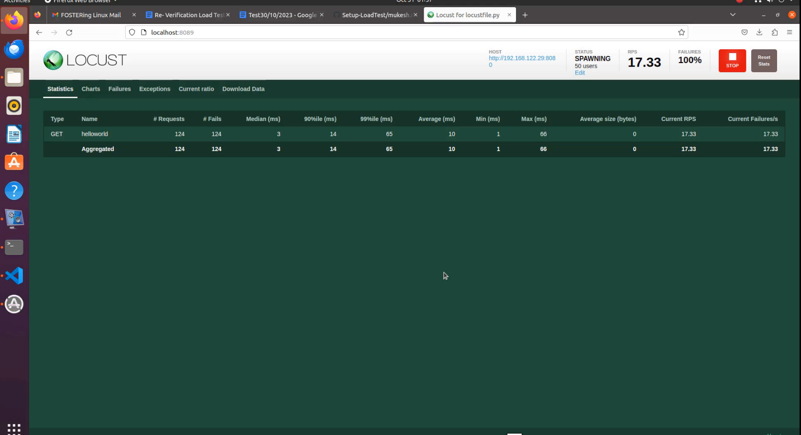
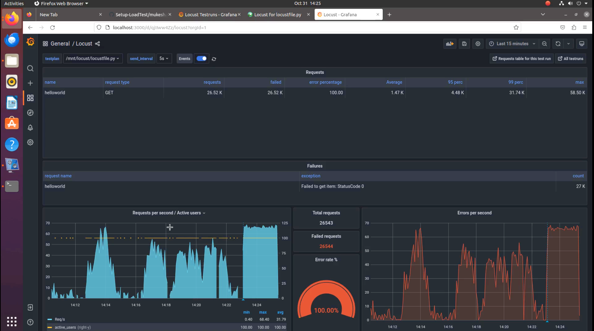

Load Test Setup Document
1:- Task requirement:-
To show the result of response time in grafana with the help of locust tool.
2:- Load testing:-
Load Testing is a non-functional software testing process in which the performance of software application is tested under a specific expected load. It determines how the software application behaves while being accessed by multiple users simultaneously.
3:-Environmental detail:-
OS: Ubuntu 20.04
Podman 3.4.2
4:- System configuration:-
CPU - 4
Storage -16 GB
5:- List of tools and technologies:-
Grafana Postgres Locust
6:-Definition of tools:-
(a). Grafana is a multi-platform open source analytics and interactive visualisation web application. It provides charts, graphs, and alerts for the web when connected to supported data sources. It can be easily installed using Docker or Docker Compose. PostgreSQL: Post
(b). PostgreSQL, also known as Postgres, is a free and open-source relational database management system emphasising extensibility and SQL compliance. Locust:
(c). Locust is an open-source load-testing tool. Load testing is a type of software testing that is conducted to check the tolerance/behaviour of the system under a specific expected load. Command for the setup or configuration
Step:- 1
Follow this step
sudo apt update
The sudo apt update command is used in Debian-based Linux distributions, such as Ubuntu, to update the package repository information on your system.
[sudo] password for m:
Get:1 http://packages.microsoft.com/repos/code stable InRelease [3,589 B]
Get:2 http://packages.microsoft.com/repos/code stable/main armhf Packages [22.8 kB]
Hit:3 http://in.archive.ubuntu.com/ubuntu focal InRelease
Hit:4 http://security.ubuntu.com/ubuntu focal-security InRelease
Get:5 http://packages.microsoft.com/repos/code stable/main arm64 Packages [22.5 kB]
Get:6 http://packages.microsoft.com/repos/code stable/main amd64 Packages [22.4 kB]
Hit:7 http://in.archive.ubuntu.com/ubuntu focal-updates InRelease
Hit:8 http://in.archive.ubuntu.com/ubuntu focal-backports InRelease
Fetched 71.3 kB in 1s (54.8 kB/s)
Reading package lists... Done
Building dependency tree
Reading state information... Done
258 packages can be upgraded. Run 'apt list --upgradable' to see them.
echo "deb https://download.opensuse.org/repositories/devel:/kubic:/libcontainers:/stable/xUbuntu_20.04/ /" | sudo tee /etc/apt/sources.list.d/devel:kubic:libcontainers:stable.list

[sudo] password for m:
deb https://download.opensuse.org/repositories/devel:/kubic:/libcontainers:/stable/xUbuntu_20.04/ /
curl -L "https://download.opensuse.org/repositories/devel:/kubic:/libcontainers:/stable/xUbuntu_20.04/Release.key" | sudo apt-key add -

% Total % Received % Xferd Average Speed Time Time Time Current Dload Upload Total Spent Left Speed 100 1093 100 1093 0 0 793 0 0:00:01 0:00:01 --:--:-- 793 OK
sudo apt update
The sudo apt update command is used in Debian-based Linux distributions, such as Ubuntu, to update the package repository information on your system.

Hit:1 http://packages.microsoft.com/repos/code stable InRelease
Hit:2 http://security.ubuntu.com/ubuntu focal-security InRelease
Get:3 https://download.opensuse.org/repositories/devel:/kubic:/libcontainers:/stable/xUbuntu_20.04 InRelease [1,642 B]
Get:4 https://download.opensuse.org/repositories/devel:/kubic:/libcontainers:/stable/xUbuntu_20.04 Packages [15.0 kB]
Hit:5 http://in.archive.ubuntu.com/ubuntu focal InRelease
Hit:6 http://in.archive.ubuntu.com/ubuntu focal-updates InRelease
Hit:7 http://in.archive.ubuntu.com/ubuntu focal-backports InRelease
Fetched 16.6 kB in 3s (6,039 B/s)
Reading package lists... Done
Building dependency tree
Reading state information... Done
257 packages can be upgraded. Run 'apt list --upgradable' to see them.
sudo apt upgrade
The sudo apt upgrade command is used in Linux-based operating systems, such as Ubuntu, to update the installed packages on your system to their latest versions.

Reading package lists... Done
Building dependency tree
Reading state information... Done
Calculating upgrade... Done
The following NEW packages will be installed:
linux-headers-5.15.0-89-generic linux-hwe-5.15-headers-5.15.0-89 linux-image-5.15.0-89-generic linux-modules-5.15.0-89-generic linux-modules-extra-5.15.0-89-generic ubuntu-pro-client-l10n
The following packages will be upgraded:
accountsservice amd64-microcode apparmor apport apport-gtk apt apt-utils avahi-autoipd avahi-daemon avahi-utils bind9-dnsutils bind9-host bind9-libs bolt bsdutils ca-certificates cpp-9 cups
cups-browsed cups-bsd cups-client cups-common cups-core-drivers cups-daemon cups-filters cups-filters-core-drivers cups-ipp-utils cups-ppdc cups-server-common distro-info distro-info-data
dnsmasq-base fdisk firefox firefox-locale-en fonts-opensymbol fwupd fwupd-signed gcc-10-base gcc-9-base ghostscript ghostscript-x gir1.2-accountsservice-1.0 gir1.2-gst-plugins-base-1.0
gir1.2-javascriptcoregtk-4.0 gir1.2-rsvg-2.0 gir1.2-webkit2-4.0 grub-common grub-pc grub-pc-bin grub2-common gstreamer1.0-alsa gstreamer1.0-gl gstreamer1.0-gtk3 gstreamer1.0-plugins-base
gstreamer1.0-plugins-base-apps gstreamer1.0-plugins-good gstreamer1.0-pulseaudio gstreamer1.0-x intel-microcode iptables krb5-locales libaccountsservice0 libapparmor1 libapt-pkg6.0 libatomic1
libavahi-client3 libavahi-common-data libavahi-common3 libavahi-core7 libavahi-glib1 libavahi-ui-gtk3-0 libblkid1 libc-bin libc6 libc6-dbg libcap2 libcap2-bin libcc1-0 libcue2 libcups2
libcupsfilters1 libcupsimage2 libcurl3-gnutls libdw1 libelf1 libfdisk1 libflac8 libfontembed1 libfreerdp-client2-2 libfreerdp2-2 libfreetype6 libfwupd2 libfwupdplugin5 libgcc-s1 libglib2.0-0
libglib2.0-bin libglib2.0-data libgnutls30 libgomp1 libgpgme11 libgpgmepp6 libgs9 libgs9-common libgssapi-krb5-2 libgstreamer-gl1.0-0 libgstreamer-plugins-base1.0-0 libgstreamer-plugins-good1.0-0
libip4tc2 libip6tc2 libjavascriptcoregtk-4.0-18 libjuh-java libjurt-java libk5crypto3 libkpathsea6 libkrb5-3 libkrb5support0 libldb2 liblouis-data liblouis20 libmount1 libmysqlclient21 libncurses6
libncursesw6 libnghttp2-14 libnss-systemd libpam-cap libpam-systemd libperl5.30 libpoppler-cpp0v5 libpoppler-glib8 libpoppler97 libprocps8 libpython3.8 libpython3.8-minimal libpython3.8-stdlib
libraw19 libreoffice-base-core libreoffice-calc libreoffice-common libreoffice-core libreoffice-draw libreoffice-gnome libreoffice-gtk3 libreoffice-help-common libreoffice-help-en-us
libreoffice-impress libreoffice-math libreoffice-ogltrans libreoffice-pdfimport libreoffice-style-breeze libreoffice-style-colibre libreoffice-style-elementary libreoffice-style-tango
libreoffice-writer libridl-java librsvg2-2 librsvg2-common libsmartcols1 libsmbclient libsndfile1 libsnmp-base libsnmp35 libssh-4 libssl1.1 libstdc++6 libsynctex2 libsystemd0 libtiff5 libtinfo6
libudev1 libuno-cppu3 libuno-cppuhelpergcc3-3 libuno-purpenvhelpergcc3-3 libuno-sal3 libuno-salhelpergcc3-3 libunoloader-java libunwind8 libuuid1 libvpx6 libwbclient0 libwebkit2gtk-4.0-37 libwebp6
libwebpdemux2 libwebpmux3 libwinpr2-2 libx11-6 libx11-data libx11-xcb1 libxml2 libxpm4 libxtables12 linux-firmware linux-generic-hwe-20.04 linux-headers-generic-hwe-20.04
linux-image-generic-hwe-20.04 locales mount ncurses-base ncurses-bin openssh-client openssl perl perl-base perl-modules-5.30 poppler-utils printer-driver-foo2zjs printer-driver-foo2zjs-common
printer-driver-splix procps python3-apport python3-debian python3-distro-info python3-ldb python3-louis python3-problem-report python3-renderpm python3-reportlab python3-reportlab-accel
python3-requests python3-software-properties python3-uno python3-urllib3 python3.8 python3.8-minimal rfkill rsync samba-libs snapd software-properties-common software-properties-gtk sudo systemd
systemd-sysv systemd-timesyncd thunderbird thunderbird-gnome-support thunderbird-locale-en thunderbird-locale-en-us tzdata ubuntu-advantage-tools udev ufw uno-libs-private update-notifier
update-notifier-common ure util-linux uuid-runtime vim-common vim-tiny xserver-common xserver-xephyr xserver-xorg-core xserver-xorg-legacy xwayland xxd
257 upgraded, 6 newly installed, 0 to remove and 0 not upgraded.
193 standard LTS security updates
Need to get 105 MB/647 MB of archives.
After this operation, 627 MB of additional disk space will be used.
Do you want to continue? [Y/n] y
Get:1 http://in.archive.ubuntu.com/ubuntu focal-updates/main amd64 ubuntu-advantage-tools amd64 30~20.04 [203 kB]
Get:2 http://in.archive.ubuntu.com/ubuntu focal-updates/main amd64 ubuntu-pro-client-l10n amd64 30~20.04 [18.4 kB]
Get:3 http://in.archive.ubuntu.com/ubuntu focal-updates/main amd64 linux-modules-5.15.0-89-generic amd64 5.15.0-89.99~20.04.1 [20.9 MB]
Get:4 http://in.archive.ubuntu.com/ubuntu focal-updates/main amd64 linux-image-5.15.0-89-generic amd64 5.15.0-89.99~20.04.1 [11.4 MB]
Get:5 http://in.archive.ubuntu.com/ubuntu focal-updates/main amd64 linux-modules-extra-5.15.0-89-generic amd64 5.15.0-89.99~20.04.1 [58.0 MB]
Get:6 http://in.archive.ubuntu.com/ubuntu focal-updates/main amd64 linux-generic-hwe-20.04 amd64 5.15.0.89.99~20.04.47 [1,928 B]
Get:7 http://in.archive.ubuntu.com/ubuntu focal-updates/main amd64 linux-image-generic-hwe-20.04 amd64 5.15.0.89.99~20.04.47 [2,628 B]
Get:8 http://in.archive.ubuntu.com/ubuntu focal-updates/main amd64 linux-hwe-5.15-headers-5.15.0-89 all 5.15.0-89.99~20.04.1 [12.0 MB]
Get:9 http://in.archive.ubuntu.com/ubuntu focal-updates/main amd64 linux-headers-5.15.0-89-generic amd64 5.15.0-89.99~20.04.1 [2,758 kB]
Get:10 http://in.archive.ubuntu.com/ubuntu focal-updates/main amd64 linux-headers-generic-hwe-20.04 amd64 5.15.0.89.99~20.04.47 [2,492 B]
Fetched 105 MB in 17s (6,324 kB/s)
Extracting templates from packages: 100%
Preconfiguring packages ...
setting xserver-xorg-legacy/xwrapper/allowed_users from configuration file
(Reading database ... 145126 files and directories currently installed.)
Preparing to unpack .../bsdutils_1%3a2.34-0.1ubuntu9.4_amd64.deb ...
Unpacking bsdutils (1:2.34-0.1ubuntu9.4) over (1:2.34-0.1ubuntu9.3) ...
Setting up bsdutils (1:2.34-0.1ubuntu9.4) ...
(Reading database ... 145126 files and directories currently installed.)
Preparing to unpack .../ncurses-bin_6.2-0ubuntu2.1_amd64.deb ...
Unpacking ncurses-bin (6.2-0ubuntu2.1) over (6.2-0ubuntu2) ...
Setting up ncurses-bin (6.2-0ubuntu2.1) ...
(Reading database ... 145126 files and directories currently installed.)
Preparing to unpack .../libperl5.30_5.30.0-9ubuntu0.4_amd64.deb ...
Unpacking libperl5.30:amd64 (5.30.0-9ubuntu0.4) over (5.30.0-9ubuntu0.3) ...
Preparing to unpack .../perl_5.30.0-9ubuntu0.4_amd64.deb ...
Unpacking perl (5.30.0-9ubuntu0.4) over (5.30.0-9ubuntu0.3) ...
Preparing to unpack .../perl-base_5.30.0-9ubuntu0.4_amd64.deb ...
Unpacking perl-base (5.30.0-9ubuntu0.4) over (5.30.0-9ubuntu0.3) ...
Setting up perl-base (5.30.0-9ubuntu0.4) ...
(Reading database ... 145126 files and directories currently installed.)
Preparing to unpack .../perl-modules-5.30_5.30.0-9ubuntu0.4_all.deb ...
Unpacking perl-modules-5.30 (5.30.0-9ubuntu0.4) over (5.30.0-9ubuntu0.3) ...
Preparing to unpack .../libc6-dbg_2.31-0ubuntu9.12_amd64.deb ...
Unpacking libc6-dbg:amd64 (2.31-0ubuntu9.12) over (2.31-0ubuntu9.9) ...
Preparing to unpack .../libatomic1_10.5.0-1ubuntu1~20.04_amd64.deb ...
Unpacking libatomic1:amd64 (10.5.0-1ubuntu1~20.04) over (10.3.0-1ubuntu1~20.04) ...
Preparing to unpack .../libgomp1_10.5.0-1ubuntu1~20.04_amd64.deb ...
Unpacking libgomp1:amd64 (10.5.0-1ubuntu1~20.04) over (10.3.0-1ubuntu1~20.04) ...
Preparing to unpack .../gcc-10-base_10.5.0-1ubuntu1~20.04_amd64.deb ...
Unpacking gcc-10-base:amd64 (10.5.0-1ubuntu1~20.04) over (10.3.0-1ubuntu1~20.04) ...
Setting up gcc-10-base:amd64 (10.5.0-1ubuntu1~20.04) ...
(Reading database ... 145137 files and directories currently installed.)
Preparing to unpack .../libgcc-s1_10.5.0-1ubuntu1~20.04_amd64.deb ...
Unpacking libgcc-s1:amd64 (10.5.0-1ubuntu1~20.04) over (10.3.0-1ubuntu1~20.04) ...
Setting up libgcc-s1:amd64 (10.5.0-1ubuntu1~20.04) ...
(Reading database ... 145137 files and directories currently installed.)
Preparing to unpack .../libcc1-0_10.5.0-1ubuntu1~20.04_amd64.deb ...
Unpacking libcc1-0:amd64 (10.5.0-1ubuntu1~20.04) over (10.3.0-1ubuntu1~20.04) ...
Preparing to unpack .../libstdc++6_10.5.0-1ubuntu1~20.04_amd64.deb ...
Unpacking libstdc++6:amd64 (10.5.0-1ubuntu1~20.04) over (10.3.0-1ubuntu1~20.04) ...
Setting up libstdc++6:amd64 (10.5.0-1ubuntu1~20.04) ...
(Reading database ... 145137 files and directories currently installed.)
Preparing to unpack .../libc6_2.31-0ubuntu9.12_amd64.deb ...
Unpacking libc6:amd64 (2.31-0ubuntu9.12) over (2.31-0ubuntu9.9) ...
Setting up libc6:amd64 (2.31-0ubuntu9.12) ...
(Reading database ... 145137 files and directories currently installed.)
Preparing to unpack .../libblkid1_2.34-0.1ubuntu9.4_amd64.deb ...
Unpacking libblkid1:amd64 (2.34-0.1ubuntu9.4) over (2.34-0.1ubuntu9.3) ...
Setting up libblkid1:amd64 (2.34-0.1ubuntu9.4) ...
(Reading database ... 145137 files and directories currently installed.)
Preparing to unpack .../libuuid1_2.34-0.1ubuntu9.4_amd64.deb ...
Unpacking libuuid1:amd64 (2.34-0.1ubuntu9.4) over (2.34-0.1ubuntu9.3) ...
Setting up libuuid1:amd64 (2.34-0.1ubuntu9.4) ...
(Reading database ... 145137 files and directories currently installed.)
Preparing to unpack .../libfdisk1_2.34-0.1ubuntu9.4_amd64.deb ...
Unpacking libfdisk1:amd64 (2.34-0.1ubuntu9.4) over (2.34-0.1ubuntu9.3) ...
Preparing to unpack .../libmount1_2.34-0.1ubuntu9.4_amd64.deb ...
Unpacking libmount1:amd64 (2.34-0.1ubuntu9.4) over (2.34-0.1ubuntu9.3) ...
Setting up libmount1:amd64 (2.34-0.1ubuntu9.4) ...
(Reading database ... 145137 files and directories currently installed.)
Preparing to unpack .../libncurses6_6.2-0ubuntu2.1_amd64.deb ...
Unpacking libncurses6:amd64 (6.2-0ubuntu2.1) over (6.2-0ubuntu2) ...
Preparing to unpack .../libncursesw6_6.2-0ubuntu2.1_amd64.deb ...
Unpacking libncursesw6:amd64 (6.2-0ubuntu2.1) over (6.2-0ubuntu2) ...
Preparing to unpack .../libtinfo6_6.2-0ubuntu2.1_amd64.deb ...
Unpacking libtinfo6:amd64 (6.2-0ubuntu2.1) over (6.2-0ubuntu2) ...
Setting up libtinfo6:amd64 (6.2-0ubuntu2.1) ...
(Reading database ... 145137 files and directories currently installed.)
Preparing to unpack .../libsmartcols1_2.34-0.1ubuntu9.4_amd64.deb ...
Unpacking libsmartcols1:amd64 (2.34-0.1ubuntu9.4) over (2.34-0.1ubuntu9.3) ...
Setting up libsmartcols1:amd64 (2.34-0.1ubuntu9.4) ...
(Reading database ... 145137 files and directories currently installed.)
Preparing to unpack .../fdisk_2.34-0.1ubuntu9.4_amd64.deb ...
Unpacking fdisk (2.34-0.1ubuntu9.4) over (2.34-0.1ubuntu9.3) ...
Preparing to unpack .../util-linux_2.34-0.1ubuntu9.4_amd64.deb ...
Unpacking util-linux (2.34-0.1ubuntu9.4) over (2.34-0.1ubuntu9.3) ...
Setting up util-linux (2.34-0.1ubuntu9.4) ...
(Reading database ... 145137 files and directories currently installed.)
Preparing to unpack .../locales_2.31-0ubuntu9.12_all.deb ...
Unpacking locales (2.31-0ubuntu9.12) over (2.31-0ubuntu9.9) ...
Preparing to unpack .../libc-bin_2.31-0ubuntu9.12_amd64.deb ...
Unpacking libc-bin (2.31-0ubuntu9.12) over (2.31-0ubuntu9.9) ...
Setting up libc-bin (2.31-0ubuntu9.12) ...
(Reading database ... 145137 files and directories currently installed.)
Preparing to unpack .../ncurses-base_6.2-0ubuntu2.1_all.deb ...
Unpacking ncurses-base (6.2-0ubuntu2.1) over (6.2-0ubuntu2) ...
Setting up ncurses-base (6.2-0ubuntu2.1) ...
(Reading database ... 145137 files and directories currently installed.)
Preparing to unpack .../0-libnss-systemd_245.4-4ubuntu3.22_amd64.deb ...
Unpacking libnss-systemd:amd64 (245.4-4ubuntu3.22) over (245.4-4ubuntu3.20) ...
Preparing to unpack .../1-xserver-common_2%3a1.20.13-1ubuntu1~20.04.9_all.deb ...
Unpacking xserver-common (2:1.20.13-1ubuntu1~20.04.9) over (2:1.20.13-1ubuntu1~20.04.6) ...
Preparing to unpack .../2-xserver-xorg-legacy_2%3a1.20.13-1ubuntu1~20.04.9_amd64.deb ...
Unpacking xserver-xorg-legacy (2:1.20.13-1ubuntu1~20.04.9) over (2:1.20.13-1ubuntu1~20.04.6) ...
Preparing to unpack .../3-printer-driver-foo2zjs-common_20171202dfsg0-4ubuntu0.1_all.deb ...
Unpacking printer-driver-foo2zjs-common (20171202dfsg0-4ubuntu0.1) over (20171202dfsg0-4) ...
Preparing to unpack .../4-printer-driver-foo2zjs_20171202dfsg0-4ubuntu0.1_amd64.deb ...
Unpacking printer-driver-foo2zjs (20171202dfsg0-4ubuntu0.1) over (20171202dfsg0-4) ...
Preparing to unpack .../5-udev_245.4-4ubuntu3.22_amd64.deb ...
Unpacking udev (245.4-4ubuntu3.22) over (245.4-4ubuntu3.20) ...
Preparing to unpack .../6-libudev1_245.4-4ubuntu3.22_amd64.deb ...
Unpacking libudev1:amd64 (245.4-4ubuntu3.22) over (245.4-4ubuntu3.20) ...
Setting up libudev1:amd64 (245.4-4ubuntu3.22) ...
(Reading database ... 145137 files and directories currently installed.)
Preparing to unpack .../00-libavahi-common-data_0.7-4ubuntu7.3_amd64.deb ...
Unpacking libavahi-common-data:amd64 (0.7-4ubuntu7.3) over (0.7-4ubuntu7.1) ...
Preparing to unpack .../01-libavahi-common3_0.7-4ubuntu7.3_amd64.deb ...
Unpacking libavahi-common3:amd64 (0.7-4ubuntu7.3) over (0.7-4ubuntu7.1) ...
Preparing to unpack .../02-libavahi-client3_0.7-4ubuntu7.3_amd64.deb ...
Unpacking libavahi-client3:amd64 (0.7-4ubuntu7.3) over (0.7-4ubuntu7.1) ...
Preparing to unpack .../03-libk5crypto3_1.17-6ubuntu4.4_amd64.deb ...
Unpacking libk5crypto3:amd64 (1.17-6ubuntu4.4) over (1.17-6ubuntu4.2) ...
Preparing to unpack .../04-libgssapi-krb5-2_1.17-6ubuntu4.4_amd64.deb ...
Unpacking libgssapi-krb5-2:amd64 (1.17-6ubuntu4.4) over (1.17-6ubuntu4.2) ...
Preparing to unpack .../05-libkrb5-3_1.17-6ubuntu4.4_amd64.deb ...
Unpacking libkrb5-3:amd64 (1.17-6ubuntu4.4) over (1.17-6ubuntu4.2) ...
Preparing to unpack .../06-libkrb5support0_1.17-6ubuntu4.4_amd64.deb ...
Unpacking libkrb5support0:amd64 (1.17-6ubuntu4.4) over (1.17-6ubuntu4.2) ...
Preparing to unpack .../07-libssl1.1_1.1.1f-1ubuntu2.20_amd64.deb ...
Unpacking libssl1.1:amd64 (1.1.1f-1ubuntu2.20) over (1.1.1f-1ubuntu2.17) ...
Preparing to unpack .../08-libprocps8_2%3a3.3.16-1ubuntu2.4_amd64.deb ...
Unpacking libprocps8:amd64 (2:3.3.16-1ubuntu2.4) over (2:3.3.16-1ubuntu2.3) ...
Preparing to unpack .../09-procps_2%3a3.3.16-1ubuntu2.4_amd64.deb ...
Unpacking procps (2:3.3.16-1ubuntu2.4) over (2:3.3.16-1ubuntu2.3) ...
Preparing to unpack .../10-cups-daemon_2.3.1-9ubuntu1.6_amd64.deb ...
Unpacking cups-daemon (2.3.1-9ubuntu1.6) over (2.3.1-9ubuntu1.2) ...
Preparing to unpack .../11-libwebp6_0.6.1-2ubuntu0.20.04.3_amd64.deb ...
Unpacking libwebp6:amd64 (0.6.1-2ubuntu0.20.04.3) over (0.6.1-2ubuntu0.20.04.1) ...
Preparing to unpack .../12-libtiff5_4.1.0+git191117-2ubuntu0.20.04.11_amd64.deb ...
Unpacking libtiff5:amd64 (4.1.0+git191117-2ubuntu0.20.04.11) over (4.1.0+git191117-2ubuntu0.20.04.8) ...
Preparing to unpack .../13-libcupsfilters1_1.27.4-1ubuntu0.2_amd64.deb ...
Unpacking libcupsfilters1:amd64 (1.27.4-1ubuntu0.2) over (1.27.4-1) ...
Preparing to unpack .../14-libfreetype6_2.10.1-2ubuntu0.3_amd64.deb ...
Unpacking libfreetype6:amd64 (2.10.1-2ubuntu0.3) over (2.10.1-2ubuntu0.2) ...
Preparing to unpack .../15-poppler-utils_0.86.1-0ubuntu1.4_amd64.deb ...
Unpacking poppler-utils (0.86.1-0ubuntu1.4) over (0.86.1-0ubuntu1.1) ...
Preparing to unpack .../16-libglib2.0-data_2.64.6-1~ubuntu20.04.6_all.deb ...
Unpacking libglib2.0-data (2.64.6-1~ubuntu20.04.6) over (2.64.6-1~ubuntu20.04.4) ...
Preparing to unpack .../17-libdw1_0.176-1.1ubuntu0.1_amd64.deb ...
Unpacking libdw1:amd64 (0.176-1.1ubuntu0.1) over (0.176-1.1build1) ...
Preparing to unpack .../18-libelf1_0.176-1.1ubuntu0.1_amd64.deb ...
Unpacking libelf1:amd64 (0.176-1.1ubuntu0.1) over (0.176-1.1build1) ...
Preparing to unpack .../19-libglib2.0-bin_2.64.6-1~ubuntu20.04.6_amd64.deb ...
Unpacking libglib2.0-bin (2.64.6-1~ubuntu20.04.6) over (2.64.6-1~ubuntu20.04.4) ...
Preparing to unpack .../20-libglib2.0-0_2.64.6-1~ubuntu20.04.6_amd64.deb ...
Unpacking libglib2.0-0:amd64 (2.64.6-1~ubuntu20.04.6) over (2.64.6-1~ubuntu20.04.4) ...
Preparing to unpack .../21-libpoppler-glib8_0.86.1-0ubuntu1.4_amd64.deb ...
Unpacking libpoppler-glib8:amd64 (0.86.1-0ubuntu1.4) over (0.86.1-0ubuntu1.1) ...
Preparing to unpack .../22-libpoppler-cpp0v5_0.86.1-0ubuntu1.4_amd64.deb ...
Unpacking libpoppler-cpp0v5:amd64 (0.86.1-0ubuntu1.4) over (0.86.1-0ubuntu1.1) ...
Preparing to unpack .../23-libpoppler97_0.86.1-0ubuntu1.4_amd64.deb ...
Unpacking libpoppler97:amd64 (0.86.1-0ubuntu1.4) over (0.86.1-0ubuntu1.1) ...
Preparing to unpack .../24-cups-ipp-utils_2.3.1-9ubuntu1.6_amd64.deb ...
Unpacking cups-ipp-utils (2.3.1-9ubuntu1.6) over (2.3.1-9ubuntu1.2) ...
Preparing to unpack .../25-cups-filters-core-drivers_1.27.4-1ubuntu0.2_amd64.deb ...
Unpacking cups-filters-core-drivers (1.27.4-1ubuntu0.2) over (1.27.4-1) ...
Preparing to unpack .../26-cups-core-drivers_2.3.1-9ubuntu1.6_amd64.deb ...
Unpacking cups-core-drivers (2.3.1-9ubuntu1.6) over (2.3.1-9ubuntu1.2) ...
Preparing to unpack .../27-cups-common_2.3.1-9ubuntu1.6_all.deb ...
Unpacking cups-common (2.3.1-9ubuntu1.6) over (2.3.1-9ubuntu1.2) ...
Preparing to unpack .../28-cups-server-common_2.3.1-9ubuntu1.6_all.deb ...
Unpacking cups-server-common (2.3.1-9ubuntu1.6) over (2.3.1-9ubuntu1.2) ...
Preparing to unpack .../29-cups-bsd_2.3.1-9ubuntu1.6_amd64.deb ...
Unpacking cups-bsd (2.3.1-9ubuntu1.6) over (2.3.1-9ubuntu1.2) ...
Preparing to unpack .../30-cups-client_2.3.1-9ubuntu1.6_amd64.deb ...
Unpacking cups-client (2.3.1-9ubuntu1.6) over (2.3.1-9ubuntu1.2) ...
Preparing to unpack .../31-ghostscript-x_9.50~dfsg-5ubuntu4.11_amd64.deb ...
Unpacking ghostscript-x (9.50~dfsg-5ubuntu4.11) over (9.50~dfsg-5ubuntu4.6) ...
Preparing to unpack .../32-ghostscript_9.50~dfsg-5ubuntu4.11_amd64.deb ...
Unpacking ghostscript (9.50~dfsg-5ubuntu4.11) over (9.50~dfsg-5ubuntu4.6) ...
Preparing to unpack .../33-libgs9_9.50~dfsg-5ubuntu4.11_amd64.deb ...
Unpacking libgs9:amd64 (9.50~dfsg-5ubuntu4.11) over (9.50~dfsg-5ubuntu4.6) ...
Preparing to unpack .../34-libgs9-common_9.50~dfsg-5ubuntu4.11_all.deb ...
Unpacking libgs9-common (9.50~dfsg-5ubuntu4.11) over (9.50~dfsg-5ubuntu4.6) ...
Preparing to unpack .../35-libx11-data_2%3a1.6.9-2ubuntu1.6_all.deb ...
Unpacking libx11-data (2:1.6.9-2ubuntu1.6) over (2:1.6.9-2ubuntu1.2) ...
Preparing to unpack .../36-libx11-6_2%3a1.6.9-2ubuntu1.6_amd64.deb ...
Unpacking libx11-6:amd64 (2:1.6.9-2ubuntu1.6) over (2:1.6.9-2ubuntu1.2) ...
Preparing to unpack .../37-cups-ppdc_2.3.1-9ubuntu1.6_amd64.deb ...
Unpacking cups-ppdc (2.3.1-9ubuntu1.6) over (2.3.1-9ubuntu1.2) ...
Preparing to unpack .../38-libavahi-glib1_0.7-4ubuntu7.3_amd64.deb ...
Unpacking libavahi-glib1:amd64 (0.7-4ubuntu7.3) over (0.7-4ubuntu7.1) ...
Preparing to unpack .../39-cups-browsed_1.27.4-1ubuntu0.2_amd64.deb ...
Unpacking cups-browsed (1.27.4-1ubuntu0.2) over (1.27.4-1) ...
Preparing to unpack .../40-libfontembed1_1.27.4-1ubuntu0.2_amd64.deb ...
Unpacking libfontembed1:amd64 (1.27.4-1ubuntu0.2) over (1.27.4-1) ...
Preparing to unpack .../41-cups-filters_1.27.4-1ubuntu0.2_amd64.deb ...
Unpacking cups-filters (1.27.4-1ubuntu0.2) over (1.27.4-1) ...
Preparing to unpack .../42-cups_2.3.1-9ubuntu1.6_amd64.deb ...
Unpacking cups (2.3.1-9ubuntu1.6) over (2.3.1-9ubuntu1.2) ...
Preparing to unpack .../43-libcupsimage2_2.3.1-9ubuntu1.6_amd64.deb ...
Unpacking libcupsimage2:amd64 (2.3.1-9ubuntu1.6) over (2.3.1-9ubuntu1.2) ...
Preparing to unpack .../44-libgnutls30_3.6.13-2ubuntu1.9_amd64.deb ...
Unpacking libgnutls30:amd64 (3.6.13-2ubuntu1.9) over (3.6.13-2ubuntu1.8) ...
Setting up libgnutls30:amd64 (3.6.13-2ubuntu1.9) ...
(Reading database ... 145137 files and directories currently installed.)
Preparing to unpack .../00-libcups2_2.3.1-9ubuntu1.6_amd64.deb ...
Unpacking libcups2:amd64 (2.3.1-9ubuntu1.6) over (2.3.1-9ubuntu1.2) ...
Preparing to unpack .../01-systemd-sysv_245.4-4ubuntu3.22_amd64.deb ...
Unpacking systemd-sysv (245.4-4ubuntu3.22) over (245.4-4ubuntu3.20) ...
Preparing to unpack .../02-libunwind8_1.2.1-9ubuntu0.1_amd64.deb ...
Unpacking libunwind8:amd64 (1.2.1-9ubuntu0.1) over (1.2.1-9build1) ...
Preparing to unpack .../03-xserver-xorg-core_2%3a1.20.13-1ubuntu1~20.04.9_amd64.deb ...
Unpacking xserver-xorg-core (2:1.20.13-1ubuntu1~20.04.9) over (2:1.20.13-1ubuntu1~20.04.6) ...
Preparing to unpack .../04-systemd-timesyncd_245.4-4ubuntu3.22_amd64.deb ...
Unpacking systemd-timesyncd (245.4-4ubuntu3.22) over (245.4-4ubuntu3.20) ...
Preparing to unpack .../05-libpam-systemd_245.4-4ubuntu3.22_amd64.deb ...
Unpacking libpam-systemd:amd64 (245.4-4ubuntu3.22) over (245.4-4ubuntu3.20) ...
Preparing to unpack .../06-libapparmor1_2.13.3-7ubuntu5.2_amd64.deb ...
Unpacking libapparmor1:amd64 (2.13.3-7ubuntu5.2) over (2.13.3-7ubuntu5.1) ...
Preparing to unpack .../07-libcap2_1%3a2.32-1ubuntu0.1_amd64.deb ...
Unpacking libcap2:amd64 (1:2.32-1ubuntu0.1) over (1:2.32-1) ...
Preparing to unpack .../08-libxtables12_1.8.4-3ubuntu2.1_amd64.deb ...
Unpacking libxtables12:amd64 (1.8.4-3ubuntu2.1) over (1.8.4-3ubuntu2) ...
Preparing to unpack .../09-iptables_1.8.4-3ubuntu2.1_amd64.deb ...
Unpacking iptables (1.8.4-3ubuntu2.1) over (1.8.4-3ubuntu2) ...
Preparing to unpack .../10-libip6tc2_1.8.4-3ubuntu2.1_amd64.deb ...
Unpacking libip6tc2:amd64 (1.8.4-3ubuntu2.1) over (1.8.4-3ubuntu2) ...
Preparing to unpack .../11-libip4tc2_1.8.4-3ubuntu2.1_amd64.deb ...
Unpacking libip4tc2:amd64 (1.8.4-3ubuntu2.1) over (1.8.4-3ubuntu2) ...
Preparing to unpack .../12-mount_2.34-0.1ubuntu9.4_amd64.deb ...
Unpacking mount (2.34-0.1ubuntu9.4) over (2.34-0.1ubuntu9.3) ...
Preparing to unpack .../13-systemd_245.4-4ubuntu3.22_amd64.deb ...
Unpacking systemd (245.4-4ubuntu3.22) over (245.4-4ubuntu3.20) ...
Preparing to unpack .../14-libsystemd0_245.4-4ubuntu3.22_amd64.deb ...
Unpacking libsystemd0:amd64 (245.4-4ubuntu3.22) over (245.4-4ubuntu3.20) ...
Setting up libsystemd0:amd64 (245.4-4ubuntu3.22) ...
(Reading database ... 145137 files and directories currently installed.)
Preparing to unpack .../libapt-pkg6.0_2.0.10_amd64.deb ...
Unpacking libapt-pkg6.0:amd64 (2.0.10) over (2.0.9) ...
Setting up libapt-pkg6.0:amd64 (2.0.10) ...
(Reading database ... 145137 files and directories currently installed.)
Preparing to unpack .../archives/apt_2.0.10_amd64.deb ...
Unpacking apt (2.0.10) over (2.0.9) ...
Setting up apt (2.0.10) ...
(Reading database ... 145135 files and directories currently installed.)
Preparing to unpack .../000-apt-utils_2.0.10_amd64.deb ...
Unpacking apt-utils (2.0.10) over (2.0.9) ...
Preparing to unpack .../001-libpython3.8_3.8.10-0ubuntu1~20.04.8_amd64.deb ...
Unpacking libpython3.8:amd64 (3.8.10-0ubuntu1~20.04.8) over (3.8.10-0ubuntu1~20.04.6) ...
Preparing to unpack .../002-python3.8_3.8.10-0ubuntu1~20.04.8_amd64.deb ...
Unpacking python3.8 (3.8.10-0ubuntu1~20.04.8) over (3.8.10-0ubuntu1~20.04.6) ...
Preparing to unpack .../003-libpython3.8-stdlib_3.8.10-0ubuntu1~20.04.8_amd64.deb ...
Unpacking libpython3.8-stdlib:amd64 (3.8.10-0ubuntu1~20.04.8) over (3.8.10-0ubuntu1~20.04.6) ...
Preparing to unpack .../004-python3.8-minimal_3.8.10-0ubuntu1~20.04.8_amd64.deb ...
Unpacking python3.8-minimal (3.8.10-0ubuntu1~20.04.8) over (3.8.10-0ubuntu1~20.04.6) ...
Preparing to unpack .../005-libpython3.8-minimal_3.8.10-0ubuntu1~20.04.8_amd64.deb ...
Unpacking libpython3.8-minimal:amd64 (3.8.10-0ubuntu1~20.04.8) over (3.8.10-0ubuntu1~20.04.6) ...
Preparing to unpack .../006-rsync_3.1.3-8ubuntu0.7_amd64.deb ...
Unpacking rsync (3.1.3-8ubuntu0.7) over (3.1.3-8ubuntu0.5) ...
Preparing to unpack .../007-uuid-runtime_2.34-0.1ubuntu9.4_amd64.deb ...
Unpacking uuid-runtime (2.34-0.1ubuntu9.4) over (2.34-0.1ubuntu9.3) ...
Preparing to unpack .../008-python3-ldb_2%3a2.4.4-0ubuntu0.20.04.2_amd64.deb ...
Unpacking python3-ldb (2:2.4.4-0ubuntu0.20.04.2) over (2:2.4.4-0ubuntu0.20.04.1) ...
Preparing to unpack .../009-libldb2_2%3a2.4.4-0ubuntu0.20.04.2_amd64.deb ...
Unpacking libldb2:amd64 (2:2.4.4-0ubuntu0.20.04.2) over (2:2.4.4-0ubuntu0.20.04.1) ...
Preparing to unpack .../010-libsmbclient_2%3a4.15.13+dfsg-0ubuntu0.20.04.7_amd64.deb ...
Unpacking libsmbclient:amd64 (2:4.15.13+dfsg-0ubuntu0.20.04.7) over (2:4.15.13+dfsg-0ubuntu0.20.04.1) ...
Preparing to unpack .../011-libwbclient0_2%3a4.15.13+dfsg-0ubuntu0.20.04.7_amd64.deb ...
Unpacking libwbclient0:amd64 (2:4.15.13+dfsg-0ubuntu0.20.04.7) over (2:4.15.13+dfsg-0ubuntu0.20.04.1) ...
Preparing to unpack .../012-samba-libs_2%3a4.15.13+dfsg-0ubuntu0.20.04.7_amd64.deb ...
Unpacking samba-libs:amd64 (2:4.15.13+dfsg-0ubuntu0.20.04.7) over (2:4.15.13+dfsg-0ubuntu0.20.04.1) ...
Preparing to unpack .../013-update-notifier_3.192.30.17_amd64.deb ...
Unpacking update-notifier (3.192.30.17) over (3.192.30.16) ...
Preparing to unpack .../014-python3-debian_0.1.36ubuntu1.1_all.deb ...
Unpacking python3-debian (0.1.36ubuntu1.1) over (0.1.36ubuntu1) ...
Preparing to unpack .../015-distro-info-data_0.43ubuntu1.14_all.deb ...
Unpacking distro-info-data (0.43ubuntu1.14) over (0.43ubuntu1.11) ...
Preparing to unpack .../016-python3-distro-info_0.23ubuntu1.1_all.deb ...
Unpacking python3-distro-info (0.23ubuntu1.1) over (0.23ubuntu1) ...
Preparing to unpack .../017-update-notifier-common_3.192.30.17_all.deb ...
Unpacking update-notifier-common (3.192.30.17) over (3.192.30.16) ...
Preparing to unpack .../018-openssl_1.1.1f-1ubuntu2.20_amd64.deb ...
Unpacking openssl (1.1.1f-1ubuntu2.20) over (1.1.1f-1ubuntu2.17) ...
Preparing to unpack .../019-ca-certificates_20230311ubuntu0.20.04.1_all.deb ...
Unpacking ca-certificates (20230311ubuntu0.20.04.1) over (20211016ubuntu0.20.04.1) ...
Preparing to unpack .../020-libpam-cap_1%3a2.32-1ubuntu0.1_amd64.deb ...
Unpacking libpam-cap:amd64 (1:2.32-1ubuntu0.1) over (1:2.32-1) ...
Preparing to unpack .../021-libcap2-bin_1%3a2.32-1ubuntu0.1_amd64.deb ...
Unpacking libcap2-bin (1:2.32-1ubuntu0.1) over (1:2.32-1) ...
Preparing to unpack .../022-libxml2_2.9.10+dfsg-5ubuntu0.20.04.6_amd64.deb ...
Unpacking libxml2:amd64 (2.9.10+dfsg-5ubuntu0.20.04.6) over (2.9.10+dfsg-5ubuntu0.20.04.5) ...
Preparing to unpack .../023-sudo_1.8.31-1ubuntu1.5_amd64.deb ...
Unpacking sudo (1.8.31-1ubuntu1.5) over (1.8.31-1ubuntu1.4) ...
Preparing to unpack .../024-tzdata_2023c-0ubuntu0.20.04.2_all.deb ...
Unpacking tzdata (2023c-0ubuntu0.20.04.2) over (2022g-0ubuntu0.20.04.1) ...
Preparing to unpack .../025-distro-info_0.23ubuntu1.1_amd64.deb ...
Unpacking distro-info (0.23ubuntu1.1) over (0.23ubuntu1) ...
Preparing to unpack .../026-ubuntu-advantage-tools_30~20.04_amd64.deb ...
Unpacking ubuntu-advantage-tools (30~20.04) over (27.13.6~20.04.1) ...
Selecting previously unselected package ubuntu-pro-client-l10n.
Preparing to unpack .../027-ubuntu-pro-client-l10n_30~20.04_amd64.deb ...
Unpacking ubuntu-pro-client-l10n (30~20.04) ...
Preparing to unpack .../028-vim-tiny_2%3a8.1.2269-1ubuntu5.20_amd64.deb ...
Unpacking vim-tiny (2:8.1.2269-1ubuntu5.20) over (2:8.1.2269-1ubuntu5.11) ...
Preparing to unpack .../029-xxd_2%3a8.1.2269-1ubuntu5.20_amd64.deb ...
Unpacking xxd (2:8.1.2269-1ubuntu5.20) over (2:8.1.2269-1ubuntu5.11) ...
Preparing to unpack .../030-vim-common_2%3a8.1.2269-1ubuntu5.20_all.deb ...
Unpacking vim-common (2:8.1.2269-1ubuntu5.20) over (2:8.1.2269-1ubuntu5.11) ...
Preparing to unpack .../031-accountsservice_0.6.55-0ubuntu12~20.04.6_amd64.deb ...
Unpacking accountsservice (0.6.55-0ubuntu12~20.04.6) over (0.6.55-0ubuntu12~20.04.5) ...
Preparing to unpack .../032-libaccountsservice0_0.6.55-0ubuntu12~20.04.6_amd64.deb ...
Unpacking libaccountsservice0:amd64 (0.6.55-0ubuntu12~20.04.6) over (0.6.55-0ubuntu12~20.04.5) ...
Preparing to unpack .../033-apparmor_2.13.3-7ubuntu5.2_amd64.deb ...
Unpacking apparmor (2.13.3-7ubuntu5.2) over (2.13.3-7ubuntu5.1) ...
Preparing to unpack .../034-bind9-dnsutils_1%3a9.16.1-0ubuntu2.16_amd64.deb ...
Unpacking bind9-dnsutils (1:9.16.1-0ubuntu2.16) over (1:9.16.1-0ubuntu2.12) ...
Preparing to unpack .../035-bind9-libs_1%3a9.16.1-0ubuntu2.16_amd64.deb ...
Unpacking bind9-libs:amd64 (1:9.16.1-0ubuntu2.16) over (1:9.16.1-0ubuntu2.12) ...
Preparing to unpack .../036-bind9-host_1%3a9.16.1-0ubuntu2.16_amd64.deb ...
Unpacking bind9-host (1:9.16.1-0ubuntu2.16) over (1:9.16.1-0ubuntu2.12) ...
Preparing to unpack .../037-krb5-locales_1.17-6ubuntu4.4_all.deb ...
Unpacking krb5-locales (1.17-6ubuntu4.4) over (1.17-6ubuntu4.2) ...
Preparing to unpack .../038-openssh-client_1%3a8.2p1-4ubuntu0.9_amd64.deb ...
Unpacking openssh-client (1:8.2p1-4ubuntu0.9) over (1:8.2p1-4ubuntu0.5) ...
Preparing to unpack .../039-ufw_0.36-6ubuntu1.1_all.deb ...
Unpacking ufw (0.36-6ubuntu1.1) over (0.36-6ubuntu1) ...
Preparing to unpack .../040-grub-pc_2.04-1ubuntu26.17_amd64.deb ...
Unpacking grub-pc (2.04-1ubuntu26.17) over (2.04-1ubuntu26.16) ...
Preparing to unpack .../041-grub2-common_2.04-1ubuntu26.17_amd64.deb ...
Unpacking grub2-common (2.04-1ubuntu26.17) over (2.04-1ubuntu26.16) ...
Preparing to unpack .../042-grub-pc-bin_2.04-1ubuntu26.17_amd64.deb ...
Unpacking grub-pc-bin (2.04-1ubuntu26.17) over (2.04-1ubuntu26.16) ...
Preparing to unpack .../043-grub-common_2.04-1ubuntu26.17_amd64.deb ...
Unpacking grub-common (2.04-1ubuntu26.17) over (2.04-1ubuntu26.16) ...
Preparing to unpack .../044-python3-problem-report_2.20.11-0ubuntu27.27_all.deb ...
Unpacking python3-problem-report (2.20.11-0ubuntu27.27) over (2.20.11-0ubuntu27.25) ...
Preparing to unpack .../045-python3-apport_2.20.11-0ubuntu27.27_all.deb ...
Unpacking python3-apport (2.20.11-0ubuntu27.27) over (2.20.11-0ubuntu27.25) ...
Preparing to unpack .../046-apport_2.20.11-0ubuntu27.27_all.deb ...
Unpacking apport (2.20.11-0ubuntu27.27) over (2.20.11-0ubuntu27.25) ...
Preparing to unpack .../047-apport-gtk_2.20.11-0ubuntu27.27_all.deb ...
Unpacking apport-gtk (2.20.11-0ubuntu27.27) over (2.20.11-0ubuntu27.25) ...
Preparing to unpack .../048-avahi-autoipd_0.7-4ubuntu7.3_amd64.deb ...
Unpacking avahi-autoipd (0.7-4ubuntu7.3) over (0.7-4ubuntu7.1) ...
Preparing to unpack .../049-libavahi-core7_0.7-4ubuntu7.3_amd64.deb ...
Unpacking libavahi-core7:amd64 (0.7-4ubuntu7.3) over (0.7-4ubuntu7.1) ...
Preparing to unpack .../050-avahi-daemon_0.7-4ubuntu7.3_amd64.deb ...
Unpacking avahi-daemon (0.7-4ubuntu7.3) over (0.7-4ubuntu7.1) ...
Preparing to unpack .../051-avahi-utils_0.7-4ubuntu7.3_amd64.deb ...
Unpacking avahi-utils (0.7-4ubuntu7.3) over (0.7-4ubuntu7.1) ...
Preparing to unpack .../052-bolt_0.9.1-2~ubuntu20.04.2_amd64.deb ...
Unpacking bolt (0.9.1-2~ubuntu20.04.2) over (0.9.1-2~ubuntu20.04.1) ...
Preparing to unpack .../053-cpp-9_9.4.0-1ubuntu1~20.04.2_amd64.deb ...
Unpacking cpp-9 (9.4.0-1ubuntu1~20.04.2) over (9.4.0-1ubuntu1~20.04.1) ...
Preparing to unpack .../054-gcc-9-base_9.4.0-1ubuntu1~20.04.2_amd64.deb ...
Unpacking gcc-9-base:amd64 (9.4.0-1ubuntu1~20.04.2) over (9.4.0-1ubuntu1~20.04.1) ...
Preparing to unpack .../055-dnsmasq-base_2.80-1.1ubuntu1.7_amd64.deb ...
Unpacking dnsmasq-base (2.80-1.1ubuntu1.7) over (2.80-1.1ubuntu1.6) ...
Preparing to unpack .../056-libx11-xcb1_2%3a1.6.9-2ubuntu1.6_amd64.deb ...
Unpacking libx11-xcb1:amd64 (2:1.6.9-2ubuntu1.6) over (2:1.6.9-2ubuntu1.2) ...
Preparing to unpack .../057-firefox_120.0+build2-0ubuntu0.20.04.1_amd64.deb ...
Unpacking firefox (120.0+build2-0ubuntu0.20.04.1) over (111.0+build2-0ubuntu0.20.04.1) ...
Preparing to unpack .../058-firefox-locale-en_120.0+build2-0ubuntu0.20.04.1_amd64.deb ...
Unpacking firefox-locale-en (120.0+build2-0ubuntu0.20.04.1) over (111.0+build2-0ubuntu0.20.04.1) ...
Preparing to unpack .../059-fonts-opensymbol_2%3a102.11+LibO6.4.7-0ubuntu0.20.04.8_all.deb ...
Unpacking fonts-opensymbol (2:102.11+LibO6.4.7-0ubuntu0.20.04.8) over (2:102.11+LibO6.4.7-0ubuntu0.20.04.6) ...
Preparing to unpack .../060-fwupd_1.7.9-1~20.04.3_amd64.deb ...
Unpacking fwupd (1.7.9-1~20.04.3) over (1.7.9-1~20.04.1) ...
Preparing to unpack .../061-libfwupdplugin5_1.7.9-1~20.04.3_amd64.deb ...
Unpacking libfwupdplugin5:amd64 (1.7.9-1~20.04.3) over (1.7.9-1~20.04.1) ...
Preparing to unpack .../062-libnghttp2-14_1.40.0-1ubuntu0.2_amd64.deb ...
Unpacking libnghttp2-14:amd64 (1.40.0-1ubuntu0.2) over (1.40.0-1build1) ...
Preparing to unpack .../063-libssh-4_0.9.3-2ubuntu2.3_amd64.deb ...
Unpacking libssh-4:amd64 (0.9.3-2ubuntu2.3) over (0.9.3-2ubuntu2.2) ...
Preparing to unpack .../064-libcurl3-gnutls_7.68.0-1ubuntu2.20_amd64.deb ...
Unpacking libcurl3-gnutls:amd64 (7.68.0-1ubuntu2.20) over (7.68.0-1ubuntu2.16) ...
Preparing to unpack .../065-libfwupd2_1.7.9-1~20.04.3_amd64.deb ...
Unpacking libfwupd2:amd64 (1.7.9-1~20.04.3) over (1.7.9-1~20.04.1) ...
Preparing to unpack .../066-fwupd-signed_1.51.1~20.04.1+1.4-0ubuntu0.1_amd64.deb ...
Unpacking fwupd-signed (1.51.1~20.04.1+1.4-0ubuntu0.1) over (1.51~20.04.1+1.2-3ubuntu0.2) ...
Preparing to unpack .../067-gir1.2-accountsservice-1.0_0.6.55-0ubuntu12~20.04.6_amd64.deb ...
Unpacking gir1.2-accountsservice-1.0 (0.6.55-0ubuntu12~20.04.6) over (0.6.55-0ubuntu12~20.04.5) ...
Preparing to unpack .../068-libgstreamer-plugins-base1.0-0_1.16.3-0ubuntu1.2_amd64.deb ...
Unpacking libgstreamer-plugins-base1.0-0:amd64 (1.16.3-0ubuntu1.2) over (1.16.3-0ubuntu1.1) ...
Preparing to unpack .../069-libgstreamer-gl1.0-0_1.16.3-0ubuntu1.2_amd64.deb ...
Unpacking libgstreamer-gl1.0-0:amd64 (1.16.3-0ubuntu1.2) over (1.16.3-0ubuntu1.1) ...
Preparing to unpack .../070-gir1.2-gst-plugins-base-1.0_1.16.3-0ubuntu1.2_amd64.deb ...
Unpacking gir1.2-gst-plugins-base-1.0:amd64 (1.16.3-0ubuntu1.2) over (1.16.3-0ubuntu1.1) ...
Preparing to unpack .../071-libwebkit2gtk-4.0-37_2.38.6-0ubuntu0.20.04.1_amd64.deb ...
Unpacking libwebkit2gtk-4.0-37:amd64 (2.38.6-0ubuntu0.20.04.1) over (2.38.5-0ubuntu0.20.04.1) ...
Preparing to unpack .../072-libjavascriptcoregtk-4.0-18_2.38.6-0ubuntu0.20.04.1_amd64.deb ...
Unpacking libjavascriptcoregtk-4.0-18:amd64 (2.38.6-0ubuntu0.20.04.1) over (2.38.5-0ubuntu0.20.04.1) ...
Preparing to unpack .../073-libwebpdemux2_0.6.1-2ubuntu0.20.04.3_amd64.deb ...
Unpacking libwebpdemux2:amd64 (0.6.1-2ubuntu0.20.04.3) over (0.6.1-2ubuntu0.20.04.1) ...
Preparing to unpack .../074-gir1.2-webkit2-4.0_2.38.6-0ubuntu0.20.04.1_amd64.deb ...
Unpacking gir1.2-webkit2-4.0:amd64 (2.38.6-0ubuntu0.20.04.1) over (2.38.5-0ubuntu0.20.04.1) ...
Preparing to unpack .../075-gir1.2-javascriptcoregtk-4.0_2.38.6-0ubuntu0.20.04.1_amd64.deb ...
Unpacking gir1.2-javascriptcoregtk-4.0:amd64 (2.38.6-0ubuntu0.20.04.1) over (2.38.5-0ubuntu0.20.04.1) ...
Preparing to unpack .../076-librsvg2-common_2.48.9-1ubuntu0.20.04.4_amd64.deb ...
Unpacking librsvg2-common:amd64 (2.48.9-1ubuntu0.20.04.4) over (2.48.9-1ubuntu0.20.04.1) ...
Preparing to unpack .../077-librsvg2-2_2.48.9-1ubuntu0.20.04.4_amd64.deb ...
Unpacking librsvg2-2:amd64 (2.48.9-1ubuntu0.20.04.4) over (2.48.9-1ubuntu0.20.04.1) ...
Preparing to unpack .../078-gir1.2-rsvg-2.0_2.48.9-1ubuntu0.20.04.4_amd64.deb ...
Unpacking gir1.2-rsvg-2.0:amd64 (2.48.9-1ubuntu0.20.04.4) over (2.48.9-1ubuntu0.20.04.1) ...
Preparing to unpack .../079-gstreamer1.0-alsa_1.16.3-0ubuntu1.2_amd64.deb ...
Unpacking gstreamer1.0-alsa:amd64 (1.16.3-0ubuntu1.2) over (1.16.3-0ubuntu1.1) ...
Preparing to unpack .../080-gstreamer1.0-gl_1.16.3-0ubuntu1.2_amd64.deb ...
Unpacking gstreamer1.0-gl:amd64 (1.16.3-0ubuntu1.2) over (1.16.3-0ubuntu1.1) ...
Preparing to unpack .../081-gstreamer1.0-gtk3_1.16.3-0ubuntu1.2_amd64.deb ...
Unpacking gstreamer1.0-gtk3:amd64 (1.16.3-0ubuntu1.2) over (1.16.3-0ubuntu1.1) ...
Preparing to unpack .../082-gstreamer1.0-plugins-base_1.16.3-0ubuntu1.2_amd64.deb ...
Unpacking gstreamer1.0-plugins-base:amd64 (1.16.3-0ubuntu1.2) over (1.16.3-0ubuntu1.1) ...
Preparing to unpack .../083-gstreamer1.0-plugins-base-apps_1.16.3-0ubuntu1.2_amd64.deb ...
Unpacking gstreamer1.0-plugins-base-apps (1.16.3-0ubuntu1.2) over (1.16.3-0ubuntu1.1) ...
Preparing to unpack .../084-libflac8_1.3.3-1ubuntu0.2_amd64.deb ...
Unpacking libflac8:amd64 (1.3.3-1ubuntu0.2) over (1.3.3-1ubuntu0.1) ...
Preparing to unpack .../085-gstreamer1.0-plugins-good_1.16.3-0ubuntu1.2_amd64.deb ...
Unpacking gstreamer1.0-plugins-good:amd64 (1.16.3-0ubuntu1.2) over (1.16.3-0ubuntu1.1) ...
Preparing to unpack .../086-libgstreamer-plugins-good1.0-0_1.16.3-0ubuntu1.2_amd64.deb ...
Unpacking libgstreamer-plugins-good1.0-0:amd64 (1.16.3-0ubuntu1.2) over (1.16.3-0ubuntu1.1) ...
Preparing to unpack .../087-libvpx6_1.8.2-1ubuntu0.2_amd64.deb ...
Unpacking libvpx6:amd64 (1.8.2-1ubuntu0.2) over (1.8.2-1build1) ...
Preparing to unpack .../088-gstreamer1.0-pulseaudio_1.16.3-0ubuntu1.2_amd64.deb ...
Unpacking gstreamer1.0-pulseaudio:amd64 (1.16.3-0ubuntu1.2) over (1.16.3-0ubuntu1.1) ...
Preparing to unpack .../089-gstreamer1.0-x_1.16.3-0ubuntu1.2_amd64.deb ...
Unpacking gstreamer1.0-x:amd64 (1.16.3-0ubuntu1.2) over (1.16.3-0ubuntu1.1) ...
Preparing to unpack .../090-libavahi-ui-gtk3-0_0.7-4ubuntu7.3_amd64.deb ...
Unpacking libavahi-ui-gtk3-0:amd64 (0.7-4ubuntu7.3) over (0.7-4ubuntu7.1) ...
Preparing to unpack .../091-libcue2_2.2.1-2ubuntu0.1_amd64.deb ...
Unpacking libcue2:amd64 (2.2.1-2ubuntu0.1) over (2.2.1-2) ...
Preparing to unpack .../092-libwinpr2-2_2.2.0+dfsg1-0ubuntu0.20.04.5_amd64.deb ...
Unpacking libwinpr2-2:amd64 (2.2.0+dfsg1-0ubuntu0.20.04.5) over (2.2.0+dfsg1-0ubuntu0.20.04.4) ...
Preparing to unpack .../093-libfreerdp2-2_2.2.0+dfsg1-0ubuntu0.20.04.5_amd64.deb ...
Unpacking libfreerdp2-2:amd64 (2.2.0+dfsg1-0ubuntu0.20.04.5) over (2.2.0+dfsg1-0ubuntu0.20.04.4) ...
Preparing to unpack .../094-libfreerdp-client2-2_2.2.0+dfsg1-0ubuntu0.20.04.5_amd64.deb ...
Unpacking libfreerdp-client2-2:amd64 (2.2.0+dfsg1-0ubuntu0.20.04.5) over (2.2.0+dfsg1-0ubuntu0.20.04.4) ...
Preparing to unpack .../095-libgpgme11_1.13.1-7ubuntu2.1_amd64.deb ...
Unpacking libgpgme11:amd64 (1.13.1-7ubuntu2.1) over (1.13.1-7ubuntu2) ...
Preparing to unpack .../096-libgpgmepp6_1.13.1-7ubuntu2.1_amd64.deb ...
Unpacking libgpgmepp6:amd64 (1.13.1-7ubuntu2.1) over (1.13.1-7ubuntu2) ...
Preparing to unpack .../097-libridl-java_1%3a6.4.7-0ubuntu0.20.04.8_all.deb ...
Unpacking libridl-java (1:6.4.7-0ubuntu0.20.04.8) over (1:6.4.7-0ubuntu0.20.04.6) ...
Preparing to unpack .../098-libjurt-java_1%3a6.4.7-0ubuntu0.20.04.8_all.deb ...
Unpacking libjurt-java (1:6.4.7-0ubuntu0.20.04.8) over (1:6.4.7-0ubuntu0.20.04.6) ...
Preparing to unpack .../099-libjuh-java_1%3a6.4.7-0ubuntu0.20.04.8_all.deb ...
Unpacking libjuh-java (1:6.4.7-0ubuntu0.20.04.8) over (1:6.4.7-0ubuntu0.20.04.6) ...
Preparing to unpack .../100-ure_1%3a6.4.7-0ubuntu0.20.04.8_amd64.deb ...
Unpacking ure (1:6.4.7-0ubuntu0.20.04.8) over (1:6.4.7-0ubuntu0.20.04.6) ...
Preparing to unpack .../101-libunoloader-java_1%3a6.4.7-0ubuntu0.20.04.8_all.deb ...
Unpacking libunoloader-java (1:6.4.7-0ubuntu0.20.04.8) over (1:6.4.7-0ubuntu0.20.04.6) ...
Preparing to unpack .../102-libuno-sal3_1%3a6.4.7-0ubuntu0.20.04.8_amd64.deb ...
Unpacking libuno-sal3 (1:6.4.7-0ubuntu0.20.04.8) over (1:6.4.7-0ubuntu0.20.04.6) ...
Preparing to unpack .../103-libuno-salhelpergcc3-3_1%3a6.4.7-0ubuntu0.20.04.8_amd64.deb ...
Unpacking libuno-salhelpergcc3-3 (1:6.4.7-0ubuntu0.20.04.8) over (1:6.4.7-0ubuntu0.20.04.6) ...
Preparing to unpack .../104-libuno-cppu3_1%3a6.4.7-0ubuntu0.20.04.8_amd64.deb ...
Unpacking libuno-cppu3 (1:6.4.7-0ubuntu0.20.04.8) over (1:6.4.7-0ubuntu0.20.04.6) ...
Preparing to unpack .../105-libuno-cppuhelpergcc3-3_1%3a6.4.7-0ubuntu0.20.04.8_amd64.deb ...
Unpacking libuno-cppuhelpergcc3-3 (1:6.4.7-0ubuntu0.20.04.8) over (1:6.4.7-0ubuntu0.20.04.6) ...
Preparing to unpack .../106-uno-libs-private_1%3a6.4.7-0ubuntu0.20.04.8_amd64.deb ...
Unpacking uno-libs-private (1:6.4.7-0ubuntu0.20.04.8) over (1:6.4.7-0ubuntu0.20.04.6) ...
Preparing to unpack .../107-libuno-purpenvhelpergcc3-3_1%3a6.4.7-0ubuntu0.20.04.8_amd64.deb ...
Unpacking libuno-purpenvhelpergcc3-3 (1:6.4.7-0ubuntu0.20.04.8) over (1:6.4.7-0ubuntu0.20.04.6) ...
Preparing to unpack .../108-libkpathsea6_2019.20190605.51237-3ubuntu0.1_amd64.deb ...
Unpacking libkpathsea6:amd64 (2019.20190605.51237-3ubuntu0.1) over (2019.20190605.51237-3build2) ...
Preparing to unpack .../109-liblouis-data_3.12.0-3ubuntu0.2_all.deb ...
Unpacking liblouis-data (3.12.0-3ubuntu0.2) over (3.12.0-3ubuntu0.1) ...
Preparing to unpack .../110-liblouis20_3.12.0-3ubuntu0.2_amd64.deb ...
Unpacking liblouis20:amd64 (3.12.0-3ubuntu0.2) over (3.12.0-3ubuntu0.1) ...
Preparing to unpack .../111-libmysqlclient21_8.0.35-0ubuntu0.20.04.1_amd64.deb ...
Unpacking libmysqlclient21:amd64 (8.0.35-0ubuntu0.20.04.1) over (8.0.32-0ubuntu0.20.04.2) ...
Preparing to unpack .../112-libraw19_0.19.5-1ubuntu1.3_amd64.deb ...
Unpacking libraw19:amd64 (0.19.5-1ubuntu1.3) over (0.19.5-1ubuntu1.1) ...
Preparing to unpack .../113-libreoffice-calc_1%3a6.4.7-0ubuntu0.20.04.8_amd64.deb ...
Unpacking libreoffice-calc (1:6.4.7-0ubuntu0.20.04.8) over (1:6.4.7-0ubuntu0.20.04.6) ...
Preparing to unpack .../114-libreoffice-draw_1%3a6.4.7-0ubuntu0.20.04.8_amd64.deb ...
Unpacking libreoffice-draw (1:6.4.7-0ubuntu0.20.04.8) over (1:6.4.7-0ubuntu0.20.04.6) ...
Preparing to unpack .../115-libreoffice-gnome_1%3a6.4.7-0ubuntu0.20.04.8_amd64.deb ...
Unpacking libreoffice-gnome (1:6.4.7-0ubuntu0.20.04.8) over (1:6.4.7-0ubuntu0.20.04.6) ...
Preparing to unpack .../116-libreoffice-gtk3_1%3a6.4.7-0ubuntu0.20.04.8_amd64.deb ...
Unpacking libreoffice-gtk3 (1:6.4.7-0ubuntu0.20.04.8) over (1:6.4.7-0ubuntu0.20.04.6) ...
Preparing to unpack .../117-libreoffice-writer_1%3a6.4.7-0ubuntu0.20.04.8_amd64.deb ...
Unpacking libreoffice-writer (1:6.4.7-0ubuntu0.20.04.8) over (1:6.4.7-0ubuntu0.20.04.6) ...
Preparing to unpack .../118-libreoffice-base-core_1%3a6.4.7-0ubuntu0.20.04.8_amd64.deb ...
Unpacking libreoffice-base-core (1:6.4.7-0ubuntu0.20.04.8) over (1:6.4.7-0ubuntu0.20.04.6) ...
Preparing to unpack .../119-python3-uno_1%3a6.4.7-0ubuntu0.20.04.8_amd64.deb ...
Unpacking python3-uno (1:6.4.7-0ubuntu0.20.04.8) over (1:6.4.7-0ubuntu0.20.04.6) ...
Preparing to unpack .../120-libreoffice-math_1%3a6.4.7-0ubuntu0.20.04.8_amd64.deb ...
Unpacking libreoffice-math (1:6.4.7-0ubuntu0.20.04.8) over (1:6.4.7-0ubuntu0.20.04.6) ...
Preparing to unpack .../121-libreoffice-help-en-us_1%3a6.4.7-0ubuntu0.20.04.8_all.deb ...
Unpacking libreoffice-help-en-us (1:6.4.7-0ubuntu0.20.04.8) over (1:6.4.7-0ubuntu0.20.04.6) ...
Preparing to unpack .../122-libreoffice-help-common_1%3a6.4.7-0ubuntu0.20.04.8_all.deb ...
Unpacking libreoffice-help-common (1:6.4.7-0ubuntu0.20.04.8) over (1:6.4.7-0ubuntu0.20.04.6) ...
Preparing to unpack .../123-libreoffice-common_1%3a6.4.7-0ubuntu0.20.04.8_all.deb ...
Unpacking libreoffice-common (1:6.4.7-0ubuntu0.20.04.8) over (1:6.4.7-0ubuntu0.20.04.6) ...
Preparing to unpack .../124-libreoffice-impress_1%3a6.4.7-0ubuntu0.20.04.8_amd64.deb ...
Unpacking libreoffice-impress (1:6.4.7-0ubuntu0.20.04.8) over (1:6.4.7-0ubuntu0.20.04.6) ...
Preparing to unpack .../125-libreoffice-core_1%3a6.4.7-0ubuntu0.20.04.8_amd64.deb ...
Unpacking libreoffice-core (1:6.4.7-0ubuntu0.20.04.8) over (1:6.4.7-0ubuntu0.20.04.6) ...
Preparing to unpack .../126-libreoffice-style-colibre_1%3a6.4.7-0ubuntu0.20.04.8_all.deb ...
Unpacking libreoffice-style-colibre (1:6.4.7-0ubuntu0.20.04.8) over (1:6.4.7-0ubuntu0.20.04.6) ...
Preparing to unpack .../127-libreoffice-style-tango_1%3a6.4.7-0ubuntu0.20.04.8_all.deb ...
Unpacking libreoffice-style-tango (1:6.4.7-0ubuntu0.20.04.8) over (1:6.4.7-0ubuntu0.20.04.6) ...
Preparing to unpack .../128-libreoffice-style-breeze_1%3a6.4.7-0ubuntu0.20.04.8_all.deb ...
Unpacking libreoffice-style-breeze (1:6.4.7-0ubuntu0.20.04.8) over (1:6.4.7-0ubuntu0.20.04.6) ...
Preparing to unpack .../129-libreoffice-style-elementary_1%3a6.4.7-0ubuntu0.20.04.8_all.deb ...
Unpacking libreoffice-style-elementary (1:6.4.7-0ubuntu0.20.04.8) over (1:6.4.7-0ubuntu0.20.04.6) ...
Preparing to unpack .../130-libsndfile1_1.0.28-7ubuntu0.2_amd64.deb ...
Unpacking libsndfile1:amd64 (1.0.28-7ubuntu0.2) over (1.0.28-7ubuntu0.1) ...
Preparing to unpack .../131-libsnmp-base_5.8+dfsg-2ubuntu2.9_all.deb ...
Unpacking libsnmp-base (5.8+dfsg-2ubuntu2.9) over (5.8+dfsg-2ubuntu2.6) ...
Preparing to unpack .../132-libsnmp35_5.8+dfsg-2ubuntu2.9_amd64.deb ...
Unpacking libsnmp35:amd64 (5.8+dfsg-2ubuntu2.9) over (5.8+dfsg-2ubuntu2.6) ...
Preparing to unpack .../133-libsynctex2_2019.20190605.51237-3ubuntu0.1_amd64.deb ...
Unpacking libsynctex2:amd64 (2019.20190605.51237-3ubuntu0.1) over (2019.20190605.51237-3build2) ...
Preparing to unpack .../134-libwebpmux3_0.6.1-2ubuntu0.20.04.3_amd64.deb ...
Unpacking libwebpmux3:amd64 (0.6.1-2ubuntu0.20.04.3) over (0.6.1-2ubuntu0.20.04.1) ...
Preparing to unpack .../135-libxpm4_1%3a3.5.12-1ubuntu0.20.04.2_amd64.deb ...
Unpacking libxpm4:amd64 (1:3.5.12-1ubuntu0.20.04.2) over (1:3.5.12-1ubuntu0.20.04.1) ...
Preparing to unpack .../136-linux-firmware_1.187.39_all.deb ...
Unpacking linux-firmware (1.187.39) over (1.187.36) ...
Selecting previously unselected package linux-modules-5.15.0-89-generic.
Preparing to unpack .../137-linux-modules-5.15.0-89-generic_5.15.0-89.99~20.04.1_amd64.deb ...
Unpacking linux-modules-5.15.0-89-generic (5.15.0-89.99~20.04.1) ...
Selecting previously unselected package linux-image-5.15.0-89-generic.
Preparing to unpack .../138-linux-image-5.15.0-89-generic_5.15.0-89.99~20.04.1_amd64.deb ...
Unpacking linux-image-5.15.0-89-generic (5.15.0-89.99~20.04.1) ...
Selecting previously unselected package linux-modules-extra-5.15.0-89-generic.
Preparing to unpack .../139-linux-modules-extra-5.15.0-89-generic_5.15.0-89.99~20.04.1_amd64.deb ...
Unpacking linux-modules-extra-5.15.0-89-generic (5.15.0-89.99~20.04.1) ...
Preparing to unpack .../140-amd64-microcode_3.20191218.1ubuntu1.2_amd64.deb ...
Unpacking amd64-microcode (3.20191218.1ubuntu1.2) over (3.20191218.1ubuntu1) ...
Preparing to unpack .../141-intel-microcode_3.20231114.0ubuntu0.20.04.1_amd64.deb ...
Unpacking intel-microcode (3.20231114.0ubuntu0.20.04.1) over (3.20230214.0ubuntu0.20.04.1) ...
Preparing to unpack .../142-linux-generic-hwe-20.04_5.15.0.89.99~20.04.47_amd64.deb ...
Unpacking linux-generic-hwe-20.04 (5.15.0.89.99~20.04.47) over (5.15.0.67.74~20.04.28) ...
Preparing to unpack .../143-linux-image-generic-hwe-20.04_5.15.0.89.99~20.04.47_amd64.deb ...
Unpacking linux-image-generic-hwe-20.04 (5.15.0.89.99~20.04.47) over (5.15.0.67.74~20.04.28) ...
Selecting previously unselected package linux-hwe-5.15-headers-5.15.0-89.
Preparing to unpack .../144-linux-hwe-5.15-headers-5.15.0-89_5.15.0-89.99~20.04.1_all.deb ...
Unpacking linux-hwe-5.15-headers-5.15.0-89 (5.15.0-89.99~20.04.1) ...
Selecting previously unselected package linux-headers-5.15.0-89-generic.
Preparing to unpack .../145-linux-headers-5.15.0-89-generic_5.15.0-89.99~20.04.1_amd64.deb ...
Unpacking linux-headers-5.15.0-89-generic (5.15.0-89.99~20.04.1) ...
Preparing to unpack .../146-linux-headers-generic-hwe-20.04_5.15.0.89.99~20.04.47_amd64.deb ...
Unpacking linux-headers-generic-hwe-20.04 (5.15.0.89.99~20.04.47) over (5.15.0.67.74~20.04.28) ...
Preparing to unpack .../147-printer-driver-splix_2.0.0+svn315-7fakesync1ubuntu0.1_amd64.deb ...
Unpacking printer-driver-splix (2.0.0+svn315-7fakesync1ubuntu0.1) over (2.0.0+svn315-7fakesync1build1) ...
Preparing to unpack .../148-python3-renderpm_3.5.34-1ubuntu1.1_amd64.deb ...
Unpacking python3-renderpm:amd64 (3.5.34-1ubuntu1.1) over (3.5.34-1ubuntu1) ...
Preparing to unpack .../149-python3-reportlab-accel_3.5.34-1ubuntu1.1_amd64.deb ...
Unpacking python3-reportlab-accel:amd64 (3.5.34-1ubuntu1.1) over (3.5.34-1ubuntu1) ...
Preparing to unpack .../150-python3-reportlab_3.5.34-1ubuntu1.1_all.deb ...
Unpacking python3-reportlab (3.5.34-1ubuntu1.1) over (3.5.34-1ubuntu1) ...
Preparing to unpack .../151-python3-urllib3_1.25.8-2ubuntu0.3_all.deb ...
Unpacking python3-urllib3 (1.25.8-2ubuntu0.3) over (1.25.8-2ubuntu0.2) ...
Preparing to unpack .../152-python3-requests_2.22.0-2ubuntu1.1_all.deb ...
Unpacking python3-requests (2.22.0-2ubuntu1.1) over (2.22.0-2ubuntu1) ...
Preparing to unpack .../153-software-properties-common_0.99.9.12_all.deb ...
Unpacking software-properties-common (0.99.9.12) over (0.99.9.11) ...
Preparing to unpack .../154-software-properties-gtk_0.99.9.12_all.deb ...
Unpacking software-properties-gtk (0.99.9.12) over (0.99.9.11) ...
Preparing to unpack .../155-python3-software-properties_0.99.9.12_all.deb ...
Unpacking python3-software-properties (0.99.9.12) over (0.99.9.11) ...
Preparing to unpack .../156-rfkill_2.34-0.1ubuntu9.4_amd64.deb ...
Unpacking rfkill (2.34-0.1ubuntu9.4) over (2.34-0.1ubuntu9.3) ...
Preparing to unpack .../157-snapd_2.58+20.04.1_amd64.deb ...
Unpacking snapd (2.58+20.04.1) over (2.58+20.04) ...
Preparing to unpack .../158-thunderbird-locale-en_1%3a115.4.1+build1-0ubuntu0.20.04.1_amd64.deb ...
Unpacking thunderbird-locale-en (1:115.4.1+build1-0ubuntu0.20.04.1) over (1:102.8.0+build2-0ubuntu0.20.04.1) ...
Preparing to unpack .../159-thunderbird_1%3a115.4.1+build1-0ubuntu0.20.04.1_amd64.deb ...
Unpacking thunderbird (1:115.4.1+build1-0ubuntu0.20.04.1) over (1:102.8.0+build2-0ubuntu0.20.04.1) ...
Preparing to unpack .../160-thunderbird-gnome-support_1%3a115.4.1+build1-0ubuntu0.20.04.1_amd64.deb ...
Unpacking thunderbird-gnome-support (1:115.4.1+build1-0ubuntu0.20.04.1) over (1:102.8.0+build2-0ubuntu0.20.04.1) ...
Preparing to unpack .../161-thunderbird-locale-en-us_1%3a115.4.1+build1-0ubuntu0.20.04.1_all.deb ...
Unpacking thunderbird-locale-en-us (1:115.4.1+build1-0ubuntu0.20.04.1) over (1:102.8.0+build2-0ubuntu0.20.04.1) ...
Preparing to unpack .../162-xserver-xephyr_2%3a1.20.13-1ubuntu1~20.04.9_amd64.deb ...
Unpacking xserver-xephyr (2:1.20.13-1ubuntu1~20.04.9) over (2:1.20.13-1ubuntu1~20.04.6) ...
Preparing to unpack .../163-xwayland_2%3a1.20.13-1ubuntu1~20.04.9_amd64.deb ...
Unpacking xwayland (2:1.20.13-1ubuntu1~20.04.9) over (2:1.20.13-1ubuntu1~20.04.6) ...
Preparing to unpack .../164-libreoffice-ogltrans_1%3a6.4.7-0ubuntu0.20.04.8_all.deb ...
Unpacking libreoffice-ogltrans (1:6.4.7-0ubuntu0.20.04.8) over (1:6.4.7-0ubuntu0.20.04.6) ...
Preparing to unpack .../165-libreoffice-pdfimport_1%3a6.4.7-0ubuntu0.20.04.8_all.deb ...
Unpacking libreoffice-pdfimport (1:6.4.7-0ubuntu0.20.04.8) over (1:6.4.7-0ubuntu0.20.04.6) ...
Preparing to unpack .../166-python3-louis_3.12.0-3ubuntu0.2_all.deb ...
Unpacking python3-louis (3.12.0-3ubuntu0.2) over (3.12.0-3ubuntu0.1) ...
Setting up libip4tc2:amd64 (1.8.4-3ubuntu2.1) ...
Setting up libgs9-common (9.50~dfsg-5ubuntu4.11) ...
Setting up libx11-xcb1:amd64 (2:1.6.9-2ubuntu1.6) ...
Setting up libapparmor1:amd64 (2.13.3-7ubuntu5.2) ...
Setting up apt-utils (2.0.10) ...
Setting up libcue2:amd64 (2.2.1-2ubuntu0.1) ...
Setting up perl-modules-5.30 (5.30.0-9ubuntu0.4) ...
Setting up printer-driver-foo2zjs-common (20171202dfsg0-4ubuntu0.1) ...
Setting up cups-server-common (2.3.1-9ubuntu1.6) ...
Setting up libfontembed1:amd64 (1.27.4-1ubuntu0.2) ...
Setting up linux-firmware (1.187.39) ...
update-initramfs: Generating /boot/initrd.img-5.15.0-67-generic
Setting up python3-problem-report (2.20.11-0ubuntu27.27) ...
Setting up libip6tc2:amd64 (1.8.4-3ubuntu2.1) ...
Setting up libglib2.0-0:amd64 (2.64.6-1~ubuntu20.04.6) ...
Setting up distro-info-data (0.43ubuntu1.14) ...
Setting up libsnmp-base (5.8+dfsg-2ubuntu2.9) ...
Setting up libssl1.1:amd64 (1.1.1f-1ubuntu2.20) ...
Setting up intel-microcode (3.20231114.0ubuntu0.20.04.1) ...
update-initramfs: deferring update (trigger activated)
intel-microcode: microcode will be updated at next boot
Setting up cups-common (2.3.1-9ubuntu1.6) ...
Setting up libnghttp2-14:amd64 (1.40.0-1ubuntu0.2) ...
Setting up libuno-sal3 (1:6.4.7-0ubuntu0.20.04.8) ...
Setting up fwupd-signed (1.51.1~20.04.1+1.4-0ubuntu0.1) ...
Setting up libgstreamer-plugins-base1.0-0:amd64 (1.16.3-0ubuntu1.2) ...
Setting up libreoffice-style-tango (1:6.4.7-0ubuntu0.20.04.8) ...
Setting up krb5-locales (1.17-6ubuntu4.4) ...
Setting up dnsmasq-base (2.80-1.1ubuntu1.7) ...
Setting up libgomp1:amd64 (10.5.0-1ubuntu1~20.04) ...
Setting up amd64-microcode (3.20191218.1ubuntu1.2) ...
update-initramfs: deferring update (trigger activated)
amd64-microcode: microcode will be updated at next boot
Setting up locales (2.31-0ubuntu9.12) ...
Generating locales (this might take a while)...
en_AG.UTF-8... done
en_AU.UTF-8... done
en_BW.UTF-8... done
en_CA.UTF-8... done
en_DK.UTF-8... done
en_GB.UTF-8... done
en_HK.UTF-8... done
en_IE.UTF-8... done
en_IL.UTF-8... done
en_IN.UTF-8... done
en_NG.UTF-8... done
en_NZ.UTF-8... done
en_PH.UTF-8... done
en_SG.UTF-8... done
en_US.UTF-8... done
en_ZA.UTF-8... done
en_ZM.UTF-8... done
en_ZW.UTF-8... done
Generation complete.
Setting up libunwind8:amd64 (1.2.1-9ubuntu0.1) ...
Setting up libwinpr2-2:amd64 (2.2.0+dfsg1-0ubuntu0.20.04.5) ...
Setting up libgpgme11:amd64 (1.13.1-7ubuntu2.1) ...
Setting up libwbclient0:amd64 (2:4.15.13+dfsg-0ubuntu0.20.04.7) ...
Setting up xxd (2:8.1.2269-1ubuntu5.20) ...
Setting up libcap2:amd64 (1:2.32-1ubuntu0.1) ...
Setting up linux-hwe-5.15-headers-5.15.0-89 (5.15.0-89.99~20.04.1) ...
Setting up libflac8:amd64 (1.3.3-1ubuntu0.2) ...
Setting up python3-apport (2.20.11-0ubuntu27.27) ...
Setting up libc6-dbg:amd64 (2.31-0ubuntu9.12) ...
Setting up libkrb5support0:amd64 (1.17-6ubuntu4.4) ...
Setting up tzdata (2023c-0ubuntu0.20.04.2) ...
Current default time zone: 'Asia/Kolkata' Local time is now: Fri Nov 24 11:13:05 IST 2023. Universal Time is now: Fri Nov 24 05:43:05 UTC 2023. Run 'dpkg-reconfigure tzdata' if you wish to change it.
Setting up libcap2-bin (1:2.32-1ubuntu0.1) ...
Setting up apparmor (2.13.3-7ubuntu5.2) ...
Installing new version of config file /etc/apparmor/parser.conf ...
Reloading AppArmor profiles
Skipping profile in /etc/apparmor.d/disable: usr.bin.firefox
Skipping profile in /etc/apparmor.d/disable: usr.sbin.rsyslogd
Setting up libreoffice-style-colibre (1:6.4.7-0ubuntu0.20.04.8) ...
Setting up libgstreamer-plugins-good1.0-0:amd64 (1.16.3-0ubuntu1.2) ...
Setting up libglib2.0-data (2.64.6-1~ubuntu20.04.6) ...
Setting up gstreamer1.0-plugins-base:amd64 (1.16.3-0ubuntu1.2) ...
Setting up vim-common (2:8.1.2269-1ubuntu5.20) ...
Setting up liblouis-data (3.12.0-3ubuntu0.2) ...
Setting up libfreetype6:amd64 (2.10.1-2ubuntu0.3) ...
Setting up python3-software-properties (0.99.9.12) ...
Setting up libx11-data (2:1.6.9-2ubuntu1.6) ...
Setting up firefox-locale-en (120.0+build2-0ubuntu0.20.04.1) ...
Setting up libavahi-common-data:amd64 (0.7-4ubuntu7.3) ...
Setting up libncurses6:amd64 (6.2-0ubuntu2.1) ...
Setting up python3-debian (0.1.36ubuntu1.1) ...
Setting up python3-reportlab-accel:amd64 (3.5.34-1ubuntu1.1) ...
Setting up rfkill (2.34-0.1ubuntu9.4) ...
Setting up libatomic1:amd64 (10.5.0-1ubuntu1~20.04) ...
Setting up udev (245.4-4ubuntu3.22) ...
update-initramfs: deferring update (trigger activated)
Setting up libwebp6:amd64 (0.6.1-2ubuntu0.20.04.3) ...
Setting up sudo (1.8.31-1ubuntu1.5) ...
Setting up libreoffice-style-breeze (1:6.4.7-0ubuntu0.20.04.8) ...
Setting up avahi-autoipd (0.7-4ubuntu7.3) ...
Setting up libncursesw6:amd64 (6.2-0ubuntu2.1) ...
Setting up libk5crypto3:amd64 (1.17-6ubuntu4.4) ...
Setting up libxtables12:amd64 (1.8.4-3ubuntu2.1) ...
Setting up libkpathsea6:amd64 (2019.20190605.51237-3ubuntu0.1) ...
Setting up python3-urllib3 (1.25.8-2ubuntu0.3) ...
Setting up python3-reportlab (3.5.34-1ubuntu1.1) ...
Setting up libfdisk1:amd64 (2.34-0.1ubuntu9.4) ...
Setting up mount (2.34-0.1ubuntu9.4) ...
Setting up uuid-runtime (2.34-0.1ubuntu9.4) ...
Setting up libvpx6:amd64 (1.8.2-1ubuntu0.2) ...
Setting up libperl5.30:amd64 (5.30.0-9ubuntu0.4) ...
Setting up libx11-6:amd64 (2:1.6.9-2ubuntu1.6) ...
Setting up thunderbird (1:115.4.1+build1-0ubuntu0.20.04.1) ...
Setting up libkrb5-3:amd64 (1.17-6ubuntu4.4) ...
Setting up libtiff5:amd64 (4.1.0+git191117-2ubuntu0.20.04.11) ...
Setting up libsndfile1:amd64 (1.0.28-7ubuntu0.2) ...
Setting up xserver-common (2:1.20.13-1ubuntu1~20.04.9) ...
Setting up gstreamer1.0-pulseaudio:amd64 (1.16.3-0ubuntu1.2) ...
Setting up gstreamer1.0-plugins-base-apps (1.16.3-0ubuntu1.2) ...
Setting up libaccountsservice0:amd64 (0.6.55-0ubuntu12~20.04.6) ...
Setting up libunoloader-java (1:6.4.7-0ubuntu0.20.04.8) ...
Setting up xwayland (2:1.20.13-1ubuntu1~20.04.9) ...
Setting up libldb2:amd64 (2:2.4.4-0ubuntu0.20.04.2) ...
Setting up openssl (1.1.1f-1ubuntu2.20) ...
Setting up libwebpmux3:amd64 (0.6.1-2ubuntu0.20.04.3) ...
Setting up libelf1:amd64 (0.176-1.1ubuntu0.1) ...
Setting up xserver-xorg-legacy (2:1.20.13-1ubuntu1~20.04.9) ...
setting xserver-xorg-legacy/xwrapper/allowed_users from configuration file
Setting up libpam-cap:amd64 (1:2.32-1ubuntu0.1) ...
Setting up python3-distro-info (0.23ubuntu1.1) ...
Setting up libxml2:amd64 (2.9.10+dfsg-5ubuntu0.20.04.6) ...
Setting up libridl-java (1:6.4.7-0ubuntu0.20.04.8) ...
Setting up libcc1-0:amd64 (10.5.0-1ubuntu1~20.04) ...
Setting up accountsservice (0.6.55-0ubuntu12~20.04.6) ...
Setting up libprocps8:amd64 (2:3.3.16-1ubuntu2.4) ...
Setting up fonts-opensymbol (2:102.11+LibO6.4.7-0ubuntu0.20.04.8) ...
Setting up rsync (3.1.3-8ubuntu0.7) ...
Setting up libsynctex2:amd64 (2019.20190605.51237-3ubuntu0.1) ...
Setting up bolt (0.9.1-2~ubuntu20.04.2) ...
bolt.service is a disabled or a static unit not running, not starting it.
Setting up gcc-9-base:amd64 (9.4.0-1ubuntu1~20.04.2) ...
Setting up libreoffice-style-elementary (1:6.4.7-0ubuntu0.20.04.8) ...
Setting up liblouis20:amd64 (3.12.0-3ubuntu0.2) ...
Setting up distro-info (0.23ubuntu1.1) ...
Setting up libdw1:amd64 (0.176-1.1ubuntu0.1) ...
Setting up libmysqlclient21:amd64 (8.0.35-0ubuntu0.20.04.1) ...
Setting up libpython3.8-minimal:amd64 (3.8.10-0ubuntu1~20.04.8) ...
Setting up gstreamer1.0-x:amd64 (1.16.3-0ubuntu1.2) ...
Setting up gstreamer1.0-alsa:amd64 (1.16.3-0ubuntu1.2) ...
Setting up python3-renderpm:amd64 (3.5.34-1ubuntu1.1) ...
Setting up libsnmp35:amd64 (5.8+dfsg-2ubuntu2.9) ...
Setting up libxpm4:amd64 (1:3.5.12-1ubuntu0.20.04.2) ...
Setting up libgpgmepp6:amd64 (1.13.1-7ubuntu2.1) ...
Setting up firefox (120.0+build2-0ubuntu0.20.04.1) ...
Installing new version of config file /etc/apparmor.d/usr.bin.firefox ...
Please restart all running instances of firefox, or you will experience problems.
Setting up iptables (1.8.4-3ubuntu2.1) ...
Setting up update-notifier-common (3.192.30.17) ...
Setting up gstreamer1.0-plugins-good:amd64 (1.16.3-0ubuntu1.2) ...
Setting up libwebpdemux2:amd64 (0.6.1-2ubuntu0.20.04.3) ...
Setting up libfreerdp2-2:amd64 (2.2.0+dfsg1-0ubuntu0.20.04.5) ...
Setting up xserver-xorg-core (2:1.20.13-1ubuntu1~20.04.9) ...
Setting up libavahi-common3:amd64 (0.7-4ubuntu7.3) ...
Setting up libraw19:amd64 (0.19.5-1ubuntu1.3) ...
Setting up libjavascriptcoregtk-4.0-18:amd64 (2.38.6-0ubuntu0.20.04.1) ...
Setting up libglib2.0-bin (2.64.6-1~ubuntu20.04.6) ...
Setting up ufw (0.36-6ubuntu1.1) ...
Setting up libpoppler97:amd64 (0.86.1-0ubuntu1.4) ...
Setting up gir1.2-javascriptcoregtk-4.0:amd64 (2.38.6-0ubuntu0.20.04.1) ...
Setting up vim-tiny (2:8.1.2269-1ubuntu5.20) ...
Setting up gir1.2-accountsservice-1.0 (0.6.55-0ubuntu12~20.04.6) ...
Setting up thunderbird-locale-en (1:115.4.1+build1-0ubuntu0.20.04.1) ...
Setting up apport (2.20.11-0ubuntu27.27) ...
apport-autoreport.service is a disabled or a static unit, not starting it.
Setting up fdisk (2.34-0.1ubuntu9.4) ...
Setting up librsvg2-2:amd64 (2.48.9-1ubuntu0.20.04.4) ...
Setting up linux-headers-5.15.0-89-generic (5.15.0-89.99~20.04.1) ...
Setting up grub-common (2.04-1ubuntu26.17) ...
Installing new version of config file /etc/grub.d/20_linux_xen ...
update-rc.d: warning: start and stop actions are no longer supported; falling back to defaults
Setting up ca-certificates (20230311ubuntu0.20.04.1) ...
Updating certificates in /etc/ssl/certs...
rehash: warning: skipping ca-certificates.crt,it does not contain exactly one certificate or CRL
19 added, 6 removed; done.
Setting up thunderbird-locale-en-us (1:115.4.1+build1-0ubuntu0.20.04.1) ...
Setting up perl (5.30.0-9ubuntu0.4) ...
Setting up libgstreamer-gl1.0-0:amd64 (1.16.3-0ubuntu1.2) ...
Setting up python3-louis (3.12.0-3ubuntu0.2) ...
Setting up linux-headers-generic-hwe-20.04 (5.15.0.89.99~20.04.47) ...
Setting up xserver-xephyr (2:1.20.13-1ubuntu1~20.04.9) ...
Setting up python3-requests (2.22.0-2ubuntu1.1) ...
Setting up thunderbird-gnome-support (1:115.4.1+build1-0ubuntu0.20.04.1) ...
Setting up libgssapi-krb5-2:amd64 (1.17-6ubuntu4.4) ...
Setting up librsvg2-common:amd64 (2.48.9-1ubuntu0.20.04.4) ...
Setting up libssh-4:amd64 (0.9.3-2ubuntu2.3) ...
Setting up python3.8-minimal (3.8.10-0ubuntu1~20.04.8) ...
Setting up libwebkit2gtk-4.0-37:amd64 (2.38.6-0ubuntu0.20.04.1) ...
Setting up procps (2:3.3.16-1ubuntu2.4) ...
Setting up cpp-9 (9.4.0-1ubuntu1~20.04.2) ...
Setting up libavahi-glib1:amd64 (0.7-4ubuntu7.3) ...
Setting up update-notifier (3.192.30.17) ...
Setting up ubuntu-advantage-tools (30~20.04) ...
Installing new version of config file /etc/apt/apt.conf.d/20apt-esm-hook.conf ...
Installing new version of config file /etc/ubuntu-advantage/uaclient.conf ...
Installing new version of config file /etc/update-motd.d/91-contract-ua-esm-status ...
Removing obsolete conffile /etc/update-motd.d/88-esm-announce ...
Removing obsolete conffile /etc/ubuntu-advantage/help_data.yaml ...
Setting up poppler-utils (0.86.1-0ubuntu1.4) ...
Setting up libpython3.8-stdlib:amd64 (3.8.10-0ubuntu1~20.04.8) ...
Setting up gir1.2-rsvg-2.0:amd64 (2.48.9-1ubuntu0.20.04.4) ...
Setting up python3.8 (3.8.10-0ubuntu1~20.04.8) ...
Setting up libavahi-core7:amd64 (0.7-4ubuntu7.3) ...
Setting up libpoppler-cpp0v5:amd64 (0.86.1-0ubuntu1.4) ...
Setting up libavahi-client3:amd64 (0.7-4ubuntu7.3) ...
Setting up ubuntu-pro-client-l10n (30~20.04) ...
Setting up gstreamer1.0-gl:amd64 (1.16.3-0ubuntu1.2) ...
Setting up gir1.2-webkit2-4.0:amd64 (2.38.6-0ubuntu0.20.04.1) ...
Setting up libpoppler-glib8:amd64 (0.86.1-0ubuntu1.4) ...
Setting up bind9-libs:amd64 (1:9.16.1-0ubuntu2.16) ...
Setting up grub2-common (2.04-1ubuntu26.17) ...
Setting up openssh-client (1:8.2p1-4ubuntu0.9) ...
Setting up gir1.2-gst-plugins-base-1.0:amd64 (1.16.3-0ubuntu1.2) ...
Setting up libcurl3-gnutls:amd64 (7.68.0-1ubuntu2.20) ...
Setting up gstreamer1.0-gtk3:amd64 (1.16.3-0ubuntu1.2) ...
Setting up grub-pc-bin (2.04-1ubuntu26.17) ...
Setting up software-properties-common (0.99.9.12) ...
Setting up grub-pc (2.04-1ubuntu26.17) ...
Sourcing file /etc/default/grub' Sourcing file /etc/default/grub.d/init-select.cfg'
Generating grub configuration file ...
Found linux image: /boot/vmlinuz-5.15.0-89-generic
Found linux image: /boot/vmlinuz-5.15.0-67-generic
Found initrd image: /boot/initrd.img-5.15.0-67-generic
Found memtest86+ image: /boot/memtest86+.elf
Found memtest86+ image: /boot/memtest86+.bin
done
Setting up libpython3.8:amd64 (3.8.10-0ubuntu1~20.04.8) ...
Setting up python3-ldb (2:2.4.4-0ubuntu0.20.04.2) ...
Setting up libcups2:amd64 (2.3.1-9ubuntu1.6) ...
Setting up apport-gtk (2.20.11-0ubuntu27.27) ...
Setting up bind9-host (1:9.16.1-0ubuntu2.16) ...
Setting up libavahi-ui-gtk3-0:amd64 (0.7-4ubuntu7.3) ...
Setting up libfreerdp-client2-2:amd64 (2.2.0+dfsg1-0ubuntu0.20.04.5) ...
Setting up libcupsfilters1:amd64 (1.27.4-1ubuntu0.2) ...
Setting up cups-ipp-utils (2.3.1-9ubuntu1.6) ...
Setting up cups-ppdc (2.3.1-9ubuntu1.6) ...
Setting up libgs9:amd64 (9.50~dfsg-5ubuntu4.11) ...
Setting up software-properties-gtk (0.99.9.12) ...
Setting up libfwupd2:amd64 (1.7.9-1~20.04.3) ...
Setting up samba-libs:amd64 (2:4.15.13+dfsg-0ubuntu0.20.04.7) ...
Setting up ghostscript (9.50~dfsg-5ubuntu4.11) ...
Setting up cups-filters-core-drivers (1.27.4-1ubuntu0.2) ...
Setting up cups-client (2.3.1-9ubuntu1.6) ...
Setting up libcupsimage2:amd64 (2.3.1-9ubuntu1.6) ...
Setting up cups-daemon (2.3.1-9ubuntu1.6) ...
Setting up libsmbclient:amd64 (2:4.15.13+dfsg-0ubuntu0.20.04.7) ...
Setting up avahi-daemon (0.7-4ubuntu7.3) ...
Setting up cups-filters (1.27.4-1ubuntu0.2) ...
Setting up bind9-dnsutils (1:9.16.1-0ubuntu2.16) ...
Setting up libfwupdplugin5:amd64 (1.7.9-1~20.04.3) ...
Setting up fwupd (1.7.9-1~20.04.3) ...
fwupd-offline-update.service is a disabled or a static unit not running, not starting it.
fwupd-refresh.service is a disabled or a static unit not running, not starting it.
fwupd.service is a disabled or a static unit not running, not starting it.
Setting up cups-browsed (1.27.4-1ubuntu0.2) ...
Setting up cups-core-drivers (2.3.1-9ubuntu1.6) ...
Setting up cups (2.3.1-9ubuntu1.6) ...
Updating PPD files for cups ...
Updating PPD files for cups-filters ...
Updating PPD files for foomatic-db-compressed-ppds ...
Updating PPD files for openprinting-ppds ...
Updating PPD files for brlaser ...
Updating PPD files for c2esp ...
Updating PPD files for foo2zjs-common ...
Updating PPD files for hpcups ...
Updating PPD files for m2300w ...
Updating PPD files for postscript-hp ...
Updating PPD files for ptouch ...
Updating PPD files for pxljr ...
Updating PPD files for sag-gdi ...
Updating PPD files for splix ...
Setting up cups-bsd (2.3.1-9ubuntu1.6) ...
Setting up avahi-utils (0.7-4ubuntu7.3) ...
Setting up ghostscript-x (9.50~dfsg-5ubuntu4.11) ...
Setting up printer-driver-foo2zjs (20171202dfsg0-4ubuntu0.1) ...
Setting up printer-driver-splix (2.0.0+svn315-7fakesync1ubuntu0.1) ...
Setting up libuno-salhelpergcc3-3 (1:6.4.7-0ubuntu0.20.04.8) ...
Setting up systemd (245.4-4ubuntu3.22) ...
Setting up libuno-cppu3 (1:6.4.7-0ubuntu0.20.04.8) ...
Setting up systemd-timesyncd (245.4-4ubuntu3.22) ...
Setting up linux-image-5.15.0-89-generic (5.15.0-89.99~20.04.1) ...
I: /boot/vmlinuz.old is now a symlink to vmlinuz-5.15.0-67-generic
I: /boot/vmlinuz is now a symlink to vmlinuz-5.15.0-89-generic
I: /boot/initrd.img is now a symlink to initrd.img-5.15.0-89-generic
Setting up linux-modules-extra-5.15.0-89-generic (5.15.0-89.99~20.04.1) ...
Setting up snapd (2.58+20.04.1) ...
snapd.failure.service is a disabled or a static unit not running, not starting it.
snapd.snap-repair.service is a disabled or a static unit not running, not starting it.
Failed to restart snapd.mounts-pre.target: Operation refused, unit snapd.mounts-pre.target may be requested by dependency only (it is configured to refuse manual start/stop).
See system logs and 'systemctl status snapd.mounts-pre.target' for details.
Setting up libuno-purpenvhelpergcc3-3 (1:6.4.7-0ubuntu0.20.04.8) ...
Setting up systemd-sysv (245.4-4ubuntu3.22) ...
Setting up uno-libs-private (1:6.4.7-0ubuntu0.20.04.8) ...
Setting up libnss-systemd:amd64 (245.4-4ubuntu3.22) ...
Setting up linux-modules-5.15.0-89-generic (5.15.0-89.99~20.04.1) ...
Setting up libpam-systemd:amd64 (245.4-4ubuntu3.22) ...
Setting up linux-image-generic-hwe-20.04 (5.15.0.89.99~20.04.47) ...
Setting up libuno-cppuhelpergcc3-3 (1:6.4.7-0ubuntu0.20.04.8) ...
Setting up ure (1:6.4.7-0ubuntu0.20.04.8) ...
Setting up linux-generic-hwe-20.04 (5.15.0.89.99~20.04.47) ...
Setting up libjurt-java (1:6.4.7-0ubuntu0.20.04.8) ...
Setting up libreoffice-common (1:6.4.7-0ubuntu0.20.04.8) ...
Setting up libjuh-java (1:6.4.7-0ubuntu0.20.04.8) ...
Setting up libreoffice-core (1:6.4.7-0ubuntu0.20.04.8) ...
Setting up libreoffice-math (1:6.4.7-0ubuntu0.20.04.8) ...
Setting up libreoffice-gtk3 (1:6.4.7-0ubuntu0.20.04.8) ...
Setting up libreoffice-pdfimport (1:6.4.7-0ubuntu0.20.04.8) ...
Setting up libreoffice-draw (1:6.4.7-0ubuntu0.20.04.8) ...
Setting up libreoffice-help-common (1:6.4.7-0ubuntu0.20.04.8) ...
Setting up libreoffice-gnome (1:6.4.7-0ubuntu0.20.04.8) ...
Setting up libreoffice-impress (1:6.4.7-0ubuntu0.20.04.8) ...
Setting up libreoffice-base-core (1:6.4.7-0ubuntu0.20.04.8) ...
Setting up libreoffice-help-en-us (1:6.4.7-0ubuntu0.20.04.8) ...
Setting up python3-uno (1:6.4.7-0ubuntu0.20.04.8) ...
Setting up libreoffice-ogltrans (1:6.4.7-0ubuntu0.20.04.8) ...
Setting up libreoffice-calc (1:6.4.7-0ubuntu0.20.04.8) ...
Setting up libreoffice-writer (1:6.4.7-0ubuntu0.20.04.8) ...
Processing triggers for mime-support (3.64ubuntu1) ...
Processing triggers for hicolor-icon-theme (0.17-2) ...
Processing triggers for gnome-menus (3.36.0-1ubuntu1) ...
Processing triggers for libc-bin (2.31-0ubuntu9.12) ...
Processing triggers for rsyslog (8.2001.0-1ubuntu1.3) ...
Processing triggers for man-db (2.9.1-1) ...
Processing triggers for libgdk-pixbuf2.0-0:amd64 (2.40.0+dfsg-3ubuntu0.4) ...
Processing triggers for dbus (1.12.16-2ubuntu2.3) ...
Processing triggers for shared-mime-info (1.15-1) ...
Processing triggers for install-info (6.7.0.dfsg.2-5) ...
Processing triggers for fontconfig (2.13.1-2ubuntu3) ...
Processing triggers for desktop-file-utils (0.24-1ubuntu3) ...
Processing triggers for initramfs-tools (0.136ubuntu6.7) ...
update-initramfs: Generating /boot/initrd.img-5.15.0-67-generic
Processing triggers for ca-certificates (20230311ubuntu0.20.04.1) ...
Updating certificates in /etc/ssl/certs...
0 added, 0 removed; done.
Running hooks in /etc/ca-certificates/update.d...
done.
Processing triggers for linux-image-5.15.0-89-generic (5.15.0-89.99~20.04.1) ...
/etc/kernel/postinst.d/initramfs-tools:
update-initramfs: Generating /boot/initrd.img-5.15.0-89-generic
/etc/kernel/postinst.d/zz-update-grub:
Sourcing file /etc/default/grub' Sourcing file /etc/default/grub.d/init-select.cfg'
Generating grub configuration file ...
Found linux image: /boot/vmlinuz-5.15.0-89-generic
Found initrd image: /boot/initrd.img-5.15.0-89-generic
Found linux image: /boot/vmlinuz-5.15.0-67-generic
Found initrd image: /boot/initrd.img-5.15.0-67-generic
Found memtest86+ image: /boot/memtest86+.elf
Found memtest86+ image: /boot/memtest86+.bin
done
sudo apt -y install podman
The command sudo apt -y install podman is used to install the Podman container management tool on a system running a Debian-based Linux distribution. Podman is an alternative to Docker, designed to manage containers.

Reading package lists... Done
Building dependency tree
Reading state information... Done
The following additional packages will be installed:
catatonit conmon containernetworking-plugins containers-common criu crun fuse-overlayfs fuse3 libfuse3-3 libnet1 libnftables1 libprotobuf-c1 podman-machine-cni podman-plugins slirp4netns uidmap
The following packages will be REMOVED:
fuse
The following NEW packages will be installed:
catatonit conmon containernetworking-plugins containers-common criu crun fuse-overlayfs fuse3 libfuse3-3 libnet1 libnftables1 libprotobuf-c1 podman podman-machine-cni podman-plugins slirp4netns
uidmap
0 upgraded, 17 newly installed, 1 to remove and 0 not upgraded.
Need to get 31.1 MB of archives.
After this operation, 153 MB of additional disk space will be used.
Get:1 http://in.archive.ubuntu.com/ubuntu focal/universe amd64 libfuse3-3 amd64 3.9.0-2 [74.0 kB]
Get:2 http://in.archive.ubuntu.com/ubuntu focal/universe amd64 fuse3 amd64 3.9.0-2 [24.7 kB]
Get:3 http://in.archive.ubuntu.com/ubuntu focal/main amd64 libnet1 amd64 1.1.6+dfsg-3.1build1 [43.3 kB]
Get:4 http://in.archive.ubuntu.com/ubuntu focal/universe amd64 libnftables1 amd64 0.9.3-2 [229 kB]
Get:5 http://in.archive.ubuntu.com/ubuntu focal-updates/universe amd64 libprotobuf-c1 amd64 1.3.3-1ubuntu0.1 [19.3 kB]
Get:6 http://in.archive.ubuntu.com/ubuntu focal-updates/universe amd64 uidmap amd64 1:4.8.1-1ubuntu5.20.04.4 [26.4 kB]
Get:8 https://download.opensuse.org/repositories/devel:/kubic:/libcontainers:/stable/xUbuntu_20.04 conmon 100:2.1.2~0 [33.7 kB]
Get:9 https://download.opensuse.org/repositories/devel:/kubic:/libcontainers:/stable/xUbuntu_20.04 containers-common 100:1-22 [52.4 kB]
Get:12 https://download.opensuse.org/repositories/devel:/kubic:/libcontainers:/stable/xUbuntu_20.04 fuse-overlayfs 100:1.5.0-2 [41.8 kB]
Get:7 https://mirror.aardsoft.fi/opensuse/repositories/devel:/kubic:/libcontainers:/stable/xUbuntu_20.04 catatonit 0.1.7-1 [275 kB]
Get:10 https://mirror.aardsoft.fi/opensuse/repositories/devel:/kubic:/libcontainers:/stable/xUbuntu_20.04 criu 3.18-1 [703 kB]
Get:11 https://mirror.aardsoft.fi/opensuse/repositories/devel:/kubic:/libcontainers:/stable/xUbuntu_20.04 crun 100:1.2-2 [252 kB]
Get:13 https://mirror.aardsoft.fi/opensuse/repositories/devel:/kubic:/libcontainers:/stable/xUbuntu_20.04 podman-plugins 100:1.2.0-1 [1,116 kB]
Get:14 https://mirror.aardsoft.fi/opensuse/repositories/devel:/kubic:/libcontainers:/stable/xUbuntu_20.04 podman-machine-cni 100:0.0.0-1 [1,821 kB]
Get:15 https://mirror.aardsoft.fi/opensuse/repositories/devel:/kubic:/libcontainers:/stable/xUbuntu_20.04 podman 100:3.4.2-5 [18.7 MB]
Get:16 https://mirror.aardsoft.fi/opensuse/repositories/devel:/kubic:/libcontainers:/stable/xUbuntu_20.04 slirp4netns 100:1.1.8-4 [708 kB]
Get:17 https://mirror.aardsoft.fi/opensuse/repositories/devel:/kubic:/libcontainers:/stable/xUbuntu_20.04 containernetworking-plugins 100:1.1.1~1 [7,009 kB]
Fetched 31.1 MB in 2min 6s (248 kB/s)
Selecting previously unselected package libfuse3-3:amd64.
(Reading database ... 180711 files and directories currently installed.)
Preparing to unpack .../libfuse3-3_3.9.0-2_amd64.deb ...
Unpacking libfuse3-3:amd64 (3.9.0-2) ...
dpkg: fuse: dependency problems, but removing anyway as you requested:
xdg-desktop-portal depends on fuse; however:
Package fuse is to be removed.
ntfs-3g depends on fuse.
gvfs-fuse depends on fuse.
(Reading database ... 180719 files and directories currently installed.) Removing fuse (2.9.9-3) ... update-initramfs: deferring update (trigger activated) Selecting previously unselected package fuse3. (Reading database ... 180709 files and directories currently installed.) Preparing to unpack .../00-fuse3_3.9.0-2_amd64.deb ... Unpacking fuse3 (3.9.0-2) ... Selecting previously unselected package catatonit. Preparing to unpack .../01-catatonit_0.1.7-1_amd64.deb ... Unpacking catatonit (0.1.7-1) ... Selecting previously unselected package conmon. Preparing to unpack .../02-conmon_100%3a2.1.2~0_amd64.deb ... Unpacking conmon (100:2.1.2~0) ... Selecting previously unselected package containers-common. Preparing to unpack .../03-containers-common_100%3a1-22_all.deb ... Unpacking containers-common (100:1-22) ... Selecting previously unselected package libnet1:amd64. Preparing to unpack .../04-libnet1_1.1.6+dfsg-3.1build1_amd64.deb ... Unpacking libnet1:amd64 (1.1.6+dfsg-3.1build1) ... Selecting previously unselected package libnftables1:amd64. Preparing to unpack .../05-libnftables1_0.9.3-2_amd64.deb ... Unpacking libnftables1:amd64 (0.9.3-2) ... Selecting previously unselected package libprotobuf-c1:amd64. Preparing to unpack .../06-libprotobuf-c1_1.3.3-1ubuntu0.1_amd64.deb ... Unpacking libprotobuf-c1:amd64 (1.3.3-1ubuntu0.1) ... Selecting previously unselected package criu. Preparing to unpack .../07-criu_3.18-1_amd64.deb ... Unpacking criu (3.18-1) ... Selecting previously unselected package crun. Preparing to unpack .../08-crun_100%3a1.2-2_amd64.deb ... Unpacking crun (100:1.2-2) ... Selecting previously unselected package fuse-overlayfs. Preparing to unpack .../09-fuse-overlayfs_100%3a1.5.0-2_amd64.deb ... Unpacking fuse-overlayfs (100:1.5.0-2) ... Selecting previously unselected package podman-plugins. Preparing to unpack .../10-podman-plugins_100%3a1.2.0-1_amd64.deb ... Unpacking podman-plugins (100:1.2.0-1) ... Selecting previously unselected package podman-machine-cni. Preparing to unpack .../11-podman-machine-cni_100%3a0.0.0-1_amd64.deb ... Unpacking podman-machine-cni (100:0.0.0-1) ... Selecting previously unselected package podman. Preparing to unpack .../12-podman_100%3a3.4.2-5_amd64.deb ... Unpacking podman (100:3.4.2-5) ... Selecting previously unselected package slirp4netns. Preparing to unpack .../13-slirp4netns_100%3a1.1.8-4_amd64.deb ... Unpacking slirp4netns (100:1.1.8-4) ... Selecting previously unselected package uidmap. Preparing to unpack .../14-uidmap_1%3a4.8.1-1ubuntu5.20.04.4_amd64.deb ... Unpacking uidmap (1:4.8.1-1ubuntu5.20.04.4) ... Selecting previously unselected package containernetworking-plugins. Preparing to unpack .../15-containernetworking-plugins_100%3a1.1.1~1_amd64.deb ... Unpacking containernetworking-plugins (100:1.1.1~1) ... Setting up libnftables1:amd64 (0.9.3-2) ... Setting up slirp4netns (100:1.1.8-4) ... Setting up uidmap (1:4.8.1-1ubuntu5.20.04.4) ... Setting up libnet1:amd64 (1.1.6+dfsg-3.1build1) ... Setting up libprotobuf-c1:amd64 (1.3.3-1ubuntu0.1) ... Setting up podman-machine-cni (100:0.0.0-1) ... Setting up conmon (100:2.1.2~0) ... Setting up containernetworking-plugins (100:1.1.1~1) ... Setting up catatonit (0.1.7-1) ... Setting up containers-common (100:1-22) ... Setting up podman-plugins (100:1.2.0-1) ... Setting up libfuse3-3:amd64 (3.9.0-2) ... Setting up criu (3.18-1) ... Setting up crun (100:1.2-2) ... Setting up podman (100:3.4.2-5) ... Setting up fuse3 (3.9.0-2) ... Installing new version of config file /etc/fuse.conf ... update-initramfs: deferring update (trigger activated) Setting up fuse-overlayfs (100:1.5.0-2) ... Processing triggers for libc-bin (2.31-0ubuntu9.12) ... Processing triggers for man-db (2.9.1-1) ... Processing triggers for initramfs-tools (0.136ubuntu6.7) ... update-initramfs: Generating /boot/initrd.img-5.15.0-89-generic
sudo: Superuser "do." It is used to execute a command with administrative or superuser privileges.
apt: Advanced Package Tool. It is a package management system used by Debian and Debian-based distributions.
install: The command used to install new packages.
upgrade This is a command used with apt-get to upgrade installed packages. When you run apt-get upgrade, it downloads and instals the latest versions of all currently installed packages on your system.
-y The -y is like saying, "Yes, go ahead!" It tells the magic tool to answer "Yes" to any questions it might ask during the installation, so you don't have to type "Yes" manually.
podman --version

podman version 3.4.2
Step 2:-
sudo apt install python3-pip
The command sudo apt install python3-pip is used to install the Python package manager called pip for Python 3.x. Let's break down what this command does

Reading package lists... Done
Building dependency tree
Reading state information... Done
The following additional packages will be installed:
binutils binutils-common binutils-x86-64-linux-gnu build-essential dpkg-dev fakeroot g++ g++-9 gcc gcc-9 libalgorithm-diff-perl libalgorithm-diff-xs-perl libalgorithm-merge-perl libasan5 libbinutils
libc-dev-bin libc6-dev libcrypt-dev libctf-nobfd0 libctf0 libexpat1-dev libfakeroot libgcc-9-dev libitm1 liblsan0 libpython3-dev libpython3.8-dev libquadmath0 libstdc++-9-dev libtsan0 libubsan1
linux-libc-dev make manpages-dev python-pip-whl python3-dev python3-distutils python3-setuptools python3-wheel python3.8-dev zlib1g-dev
Suggested packages:
binutils-doc debian-keyring g++-multilib g++-9-multilib gcc-9-doc gcc-multilib autoconf automake libtool flex bison gcc-doc gcc-9-multilib gcc-9-locales glibc-doc libstdc++-9-doc make-doc
python-setuptools-doc
The following NEW packages will be installed:
binutils binutils-common binutils-x86-64-linux-gnu build-essential dpkg-dev fakeroot g++ g++-9 gcc gcc-9 libalgorithm-diff-perl libalgorithm-diff-xs-perl libalgorithm-merge-perl libasan5 libbinutils
libc-dev-bin libc6-dev libcrypt-dev libctf-nobfd0 libctf0 libexpat1-dev libfakeroot libgcc-9-dev libitm1 liblsan0 libpython3-dev libpython3.8-dev libquadmath0 libstdc++-9-dev libtsan0 libubsan1
linux-libc-dev make manpages-dev python-pip-whl python3-dev python3-distutils python3-pip python3-setuptools python3-wheel python3.8-dev zlib1g-dev
0 upgraded, 42 newly installed, 0 to remove and 0 not upgraded.
Need to get 44.1 MB of archives.
After this operation, 199 MB of additional disk space will be used.
Do you want to continue? [Y/n] y
Get:1 http://in.archive.ubuntu.com/ubuntu focal-updates/main amd64 binutils-common amd64 2.34-6ubuntu1.6 [207 kB]
Get:2 http://in.archive.ubuntu.com/ubuntu focal-updates/main amd64 libbinutils amd64 2.34-6ubuntu1.6 [473 kB]
Get:3 http://in.archive.ubuntu.com/ubuntu focal-updates/main amd64 libctf-nobfd0 amd64 2.34-6ubuntu1.6 [47.4 kB]
Get:4 http://in.archive.ubuntu.com/ubuntu focal-updates/main amd64 libctf0 amd64 2.34-6ubuntu1.6 [46.6 kB]
Get:5 http://in.archive.ubuntu.com/ubuntu focal-updates/main amd64 binutils-x86-64-linux-gnu amd64 2.34-6ubuntu1.6 [1,613 kB]
Get:6 http://in.archive.ubuntu.com/ubuntu focal-updates/main amd64 binutils amd64 2.34-6ubuntu1.6 [3,376 B]
Get:7 http://in.archive.ubuntu.com/ubuntu focal-updates/main amd64 libc-dev-bin amd64 2.31-0ubuntu9.12 [71.6 kB]
Get:8 http://in.archive.ubuntu.com/ubuntu focal-updates/main amd64 linux-libc-dev amd64 5.4.0-167.184 [1,117 kB]
Get:9 http://in.archive.ubuntu.com/ubuntu focal/main amd64 libcrypt-dev amd64 1:4.4.10-10ubuntu4 [104 kB]
Get:10 http://in.archive.ubuntu.com/ubuntu focal-updates/main amd64 libc6-dev amd64 2.31-0ubuntu9.12 [2,519 kB]
Get:11 http://in.archive.ubuntu.com/ubuntu focal-updates/main amd64 libitm1 amd64 10.5.0-1ubuntu1~20.04 [26.2 kB]
Get:12 http://in.archive.ubuntu.com/ubuntu focal-updates/main amd64 libasan5 amd64 9.4.0-1ubuntu1~20.04.2 [2,752 kB]
Get:13 http://in.archive.ubuntu.com/ubuntu focal-updates/main amd64 liblsan0 amd64 10.5.0-1ubuntu1~20.04 [835 kB]
Get:14 http://in.archive.ubuntu.com/ubuntu focal-updates/main amd64 libtsan0 amd64 10.5.0-1ubuntu1~20.04 [2,016 kB]
Get:15 http://in.archive.ubuntu.com/ubuntu focal-updates/main amd64 libubsan1 amd64 10.5.0-1ubuntu1~20.04 [785 kB]
Get:16 http://in.archive.ubuntu.com/ubuntu focal-updates/main amd64 libquadmath0 amd64 10.5.0-1ubuntu1~20.04 [146 kB]
Get:17 http://in.archive.ubuntu.com/ubuntu focal-updates/main amd64 libgcc-9-dev amd64 9.4.0-1ubuntu1~20.04.2 [2,359 kB]
Get:18 http://in.archive.ubuntu.com/ubuntu focal-updates/main amd64 gcc-9 amd64 9.4.0-1ubuntu1~20.04.2 [8,276 kB]
Get:19 http://in.archive.ubuntu.com/ubuntu focal/main amd64 gcc amd64 4:9.3.0-1ubuntu2 [5,208 B]
Get:20 http://in.archive.ubuntu.com/ubuntu focal-updates/main amd64 libstdc++-9-dev amd64 9.4.0-1ubuntu1~20.04.2 [1,722 kB]
Get:21 http://in.archive.ubuntu.com/ubuntu focal-updates/main amd64 g++-9 amd64 9.4.0-1ubuntu1~20.04.2 [8,421 kB]
Get:22 http://in.archive.ubuntu.com/ubuntu focal/main amd64 g++ amd64 4:9.3.0-1ubuntu2 [1,604 B]
Get:23 http://in.archive.ubuntu.com/ubuntu focal/main amd64 make amd64 4.2.1-1.2 [162 kB]
Get:24 http://in.archive.ubuntu.com/ubuntu focal-updates/main amd64 dpkg-dev all 1.19.7ubuntu3.2 [679 kB]
Get:25 http://in.archive.ubuntu.com/ubuntu focal-updates/main amd64 build-essential amd64 12.8ubuntu1.1 [4,664 B]
Get:26 http://in.archive.ubuntu.com/ubuntu focal/main amd64 libfakeroot amd64 1.24-1 [25.7 kB]
Get:27 http://in.archive.ubuntu.com/ubuntu focal/main amd64 fakeroot amd64 1.24-1 [62.6 kB]
Get:28 http://in.archive.ubuntu.com/ubuntu focal/main amd64 libalgorithm-diff-perl all 1.19.03-2 [46.6 kB]
Get:29 http://in.archive.ubuntu.com/ubuntu focal/main amd64 libalgorithm-diff-xs-perl amd64 0.04-6 [11.3 kB]
Get:30 http://in.archive.ubuntu.com/ubuntu focal/main amd64 libalgorithm-merge-perl all 0.08-3 [12.0 kB]
Get:31 http://in.archive.ubuntu.com/ubuntu focal-updates/main amd64 libexpat1-dev amd64 2.2.9-1ubuntu0.6 [116 kB]
Get:32 http://in.archive.ubuntu.com/ubuntu focal-updates/main amd64 libpython3.8-dev amd64 3.8.10-0ubuntu1~20.04.8 [3,950 kB]
Get:33 http://in.archive.ubuntu.com/ubuntu focal/main amd64 libpython3-dev amd64 3.8.2-0ubuntu2 [7,236 B]
Get:34 http://in.archive.ubuntu.com/ubuntu focal/main amd64 manpages-dev all 5.05-1 [2,266 kB]
Get:35 http://in.archive.ubuntu.com/ubuntu focal-updates/universe amd64 python-pip-whl all 20.0.2-5ubuntu1.10 [1,805 kB]
Get:36 http://in.archive.ubuntu.com/ubuntu focal-updates/main amd64 zlib1g-dev amd64 1:1.2.11.dfsg-2ubuntu1.5 [155 kB]
Get:37 http://in.archive.ubuntu.com/ubuntu focal-updates/main amd64 python3.8-dev amd64 3.8.10-0ubuntu1~20.04.8 [514 kB]
Get:38 http://in.archive.ubuntu.com/ubuntu focal-updates/main amd64 python3-distutils all 3.8.10-0ubuntu1~20.04 [141 kB]
Get:39 http://in.archive.ubuntu.com/ubuntu focal/main amd64 python3-dev amd64 3.8.2-0ubuntu2 [1,212 B]
Get:40 http://in.archive.ubuntu.com/ubuntu focal-updates/main amd64 python3-setuptools all 45.2.0-1ubuntu0.1 [330 kB]
Get:41 http://in.archive.ubuntu.com/ubuntu focal-updates/universe amd64 python3-wheel all 0.34.2-1ubuntu0.1 [23.9 kB]
Get:42 http://in.archive.ubuntu.com/ubuntu focal-updates/universe amd64 python3-pip all 20.0.2-5ubuntu1.10 [231 kB]
Fetched 44.1 MB in 13s (3,306 kB/s)
Extracting templates from packages: 100%
Selecting previously unselected package binutils-common:amd64.
(Reading database ... 181137 files and directories currently installed.)
Preparing to unpack .../00-binutils-common_2.34-6ubuntu1.6_amd64.deb ...
Unpacking binutils-common:amd64 (2.34-6ubuntu1.6) ...
Selecting previously unselected package libbinutils:amd64.
Preparing to unpack .../01-libbinutils_2.34-6ubuntu1.6_amd64.deb ...
Unpacking libbinutils:amd64 (2.34-6ubuntu1.6) ...
Selecting previously unselected package libctf-nobfd0:amd64.
Preparing to unpack .../02-libctf-nobfd0_2.34-6ubuntu1.6_amd64.deb ...
Unpacking libctf-nobfd0:amd64 (2.34-6ubuntu1.6) ...
Selecting previously unselected package libctf0:amd64.
Preparing to unpack .../03-libctf0_2.34-6ubuntu1.6_amd64.deb ...
Unpacking libctf0:amd64 (2.34-6ubuntu1.6) ...
Selecting previously unselected package binutils-x86-64-linux-gnu.
Preparing to unpack .../04-binutils-x86-64-linux-gnu_2.34-6ubuntu1.6_amd64.deb ...
Unpacking binutils-x86-64-linux-gnu (2.34-6ubuntu1.6) ...
Selecting previously unselected package binutils.
Preparing to unpack .../05-binutils_2.34-6ubuntu1.6_amd64.deb ...
Unpacking binutils (2.34-6ubuntu1.6) ...
Selecting previously unselected package libc-dev-bin.
Preparing to unpack .../06-libc-dev-bin_2.31-0ubuntu9.12_amd64.deb ...
Unpacking libc-dev-bin (2.31-0ubuntu9.12) ...
Selecting previously unselected package linux-libc-dev:amd64.
Preparing to unpack .../07-linux-libc-dev_5.4.0-167.184_amd64.deb ...
Unpacking linux-libc-dev:amd64 (5.4.0-167.184) ...
Selecting previously unselected package libcrypt-dev:amd64.
Preparing to unpack .../08-libcrypt-dev_1%3a4.4.10-10ubuntu4_amd64.deb ...
Unpacking libcrypt-dev:amd64 (1:4.4.10-10ubuntu4) ...
Selecting previously unselected package libc6-dev:amd64.
Preparing to unpack .../09-libc6-dev_2.31-0ubuntu9.12_amd64.deb ...
Unpacking libc6-dev:amd64 (2.31-0ubuntu9.12) ...
Selecting previously unselected package libitm1:amd64.
Preparing to unpack .../10-libitm1_10.5.0-1ubuntu1~20.04_amd64.deb ...
Unpacking libitm1:amd64 (10.5.0-1ubuntu1~20.04) ...
Selecting previously unselected package libasan5:amd64.
Preparing to unpack .../11-libasan5_9.4.0-1ubuntu1~20.04.2_amd64.deb ...
Unpacking libasan5:amd64 (9.4.0-1ubuntu1~20.04.2) ...
Selecting previously unselected package liblsan0:amd64.
Preparing to unpack .../12-liblsan0_10.5.0-1ubuntu1~20.04_amd64.deb ...
Unpacking liblsan0:amd64 (10.5.0-1ubuntu1~20.04) ...
Selecting previously unselected package libtsan0:amd64.
Preparing to unpack .../13-libtsan0_10.5.0-1ubuntu1~20.04_amd64.deb ...
Unpacking libtsan0:amd64 (10.5.0-1ubuntu1~20.04) ...
Selecting previously unselected package libubsan1:amd64.
Preparing to unpack .../14-libubsan1_10.5.0-1ubuntu1~20.04_amd64.deb ...
Unpacking libubsan1:amd64 (10.5.0-1ubuntu1~20.04) ...
Selecting previously unselected package libquadmath0:amd64.
Preparing to unpack .../15-libquadmath0_10.5.0-1ubuntu1~20.04_amd64.deb ...
Unpacking libquadmath0:amd64 (10.5.0-1ubuntu1~20.04) ...
Selecting previously unselected package libgcc-9-dev:amd64.
Preparing to unpack .../16-libgcc-9-dev_9.4.0-1ubuntu1~20.04.2_amd64.deb ...
Unpacking libgcc-9-dev:amd64 (9.4.0-1ubuntu1~20.04.2) ...
Selecting previously unselected package gcc-9.
Preparing to unpack .../17-gcc-9_9.4.0-1ubuntu1~20.04.2_amd64.deb ...
Unpacking gcc-9 (9.4.0-1ubuntu1~20.04.2) ...
Selecting previously unselected package gcc.
Preparing to unpack .../18-gcc_4%3a9.3.0-1ubuntu2_amd64.deb ...
Unpacking gcc (4:9.3.0-1ubuntu2) ...
Selecting previously unselected package libstdc++-9-dev:amd64.
Preparing to unpack .../19-libstdc++-9-dev_9.4.0-1ubuntu1~20.04.2_amd64.deb ...
Unpacking libstdc++-9-dev:amd64 (9.4.0-1ubuntu1~20.04.2) ...
Selecting previously unselected package g++-9.
Preparing to unpack .../20-g++-9_9.4.0-1ubuntu1~20.04.2_amd64.deb ...
Unpacking g++-9 (9.4.0-1ubuntu1~20.04.2) ...
Selecting previously unselected package g++.
Preparing to unpack .../21-g++_4%3a9.3.0-1ubuntu2_amd64.deb ...
Unpacking g++ (4:9.3.0-1ubuntu2) ...
Selecting previously unselected package make.
Preparing to unpack .../22-make_4.2.1-1.2_amd64.deb ...
Unpacking make (4.2.1-1.2) ...
Selecting previously unselected package dpkg-dev.
Preparing to unpack .../23-dpkg-dev_1.19.7ubuntu3.2_all.deb ...
Unpacking dpkg-dev (1.19.7ubuntu3.2) ...
Selecting previously unselected package build-essential.
Preparing to unpack .../24-build-essential_12.8ubuntu1.1_amd64.deb ...
Unpacking build-essential (12.8ubuntu1.1) ...
Selecting previously unselected package libfakeroot:amd64.
Preparing to unpack .../25-libfakeroot_1.24-1_amd64.deb ...
Unpacking libfakeroot:amd64 (1.24-1) ...
Selecting previously unselected package fakeroot.
Preparing to unpack .../26-fakeroot_1.24-1_amd64.deb ...
Unpacking fakeroot (1.24-1) ...
Selecting previously unselected package libalgorithm-diff-perl.
Preparing to unpack .../27-libalgorithm-diff-perl_1.19.03-2_all.deb ...
Unpacking libalgorithm-diff-perl (1.19.03-2) ...
Selecting previously unselected package libalgorithm-diff-xs-perl.
Preparing to unpack .../28-libalgorithm-diff-xs-perl_0.04-6_amd64.deb ...
Unpacking libalgorithm-diff-xs-perl (0.04-6) ...
Selecting previously unselected package libalgorithm-merge-perl.
Preparing to unpack .../29-libalgorithm-merge-perl_0.08-3_all.deb ...
Unpacking libalgorithm-merge-perl (0.08-3) ...
Selecting previously unselected package libexpat1-dev:amd64.
Preparing to unpack .../30-libexpat1-dev_2.2.9-1ubuntu0.6_amd64.deb ...
Unpacking libexpat1-dev:amd64 (2.2.9-1ubuntu0.6) ...
Selecting previously unselected package libpython3.8-dev:amd64.
Preparing to unpack .../31-libpython3.8-dev_3.8.10-0ubuntu1~20.04.8_amd64.deb ...
Unpacking libpython3.8-dev:amd64 (3.8.10-0ubuntu1~20.04.8) ...
Selecting previously unselected package libpython3-dev:amd64.
Preparing to unpack .../32-libpython3-dev_3.8.2-0ubuntu2_amd64.deb ...
Unpacking libpython3-dev:amd64 (3.8.2-0ubuntu2) ...
Selecting previously unselected package manpages-dev.
Preparing to unpack .../33-manpages-dev_5.05-1_all.deb ...
Unpacking manpages-dev (5.05-1) ...
Selecting previously unselected package python-pip-whl.
Preparing to unpack .../34-python-pip-whl_20.0.2-5ubuntu1.10_all.deb ...
Unpacking python-pip-whl (20.0.2-5ubuntu1.10) ...
Selecting previously unselected package zlib1g-dev:amd64.
Preparing to unpack .../35-zlib1g-dev_1%3a1.2.11.dfsg-2ubuntu1.5_amd64.deb ...
Unpacking zlib1g-dev:amd64 (1:1.2.11.dfsg-2ubuntu1.5) ...
Selecting previously unselected package python3.8-dev.
Preparing to unpack .../36-python3.8-dev_3.8.10-0ubuntu1~20.04.8_amd64.deb ...
Unpacking python3.8-dev (3.8.10-0ubuntu1~20.04.8) ...
Selecting previously unselected package python3-distutils.
Preparing to unpack .../37-python3-distutils_3.8.10-0ubuntu1~20.04_all.deb ...
Unpacking python3-distutils (3.8.10-0ubuntu1~20.04) ...
Selecting previously unselected package python3-dev.
Preparing to unpack .../38-python3-dev_3.8.2-0ubuntu2_amd64.deb ...
Unpacking python3-dev (3.8.2-0ubuntu2) ...
Selecting previously unselected package python3-setuptools.
Preparing to unpack .../39-python3-setuptools_45.2.0-1ubuntu0.1_all.deb ...
Unpacking python3-setuptools (45.2.0-1ubuntu0.1) ...
Selecting previously unselected package python3-wheel.
Preparing to unpack .../40-python3-wheel_0.34.2-1ubuntu0.1_all.deb ...
Unpacking python3-wheel (0.34.2-1ubuntu0.1) ...
Selecting previously unselected package python3-pip.
Preparing to unpack .../41-python3-pip_20.0.2-5ubuntu1.10_all.deb ...
Unpacking python3-pip (20.0.2-5ubuntu1.10) ...
Setting up python3-distutils (3.8.10-0ubuntu1~20.04) ...
Setting up manpages-dev (5.05-1) ...
Setting up python3-setuptools (45.2.0-1ubuntu0.1) ...
Setting up libalgorithm-diff-perl (1.19.03-2) ...
Setting up binutils-common:amd64 (2.34-6ubuntu1.6) ...
Setting up linux-libc-dev:amd64 (5.4.0-167.184) ...
Setting up libctf-nobfd0:amd64 (2.34-6ubuntu1.6) ...
Setting up python3-wheel (0.34.2-1ubuntu0.1) ...
Setting up libfakeroot:amd64 (1.24-1) ...
Setting up fakeroot (1.24-1) ...
update-alternatives: using /usr/bin/fakeroot-sysv to provide /usr/bin/fakeroot (fakeroot) in auto mode
Setting up libasan5:amd64 (9.4.0-1ubuntu1~20.04.2) ...
Setting up make (4.2.1-1.2) ...
Setting up libquadmath0:amd64 (10.5.0-1ubuntu1~20.04) ...
Setting up libubsan1:amd64 (10.5.0-1ubuntu1~20.04) ...
Setting up libcrypt-dev:amd64 (1:4.4.10-10ubuntu4) ...
Setting up python-pip-whl (20.0.2-5ubuntu1.10) ...
Setting up libbinutils:amd64 (2.34-6ubuntu1.6) ...
Setting up libc-dev-bin (2.31-0ubuntu9.12) ...
Setting up libalgorithm-diff-xs-perl (0.04-6) ...
Setting up liblsan0:amd64 (10.5.0-1ubuntu1~20.04) ...
Setting up libitm1:amd64 (10.5.0-1ubuntu1~20.04) ...
Setting up libalgorithm-merge-perl (0.08-3) ...
Setting up libtsan0:amd64 (10.5.0-1ubuntu1~20.04) ...
Setting up libctf0:amd64 (2.34-6ubuntu1.6) ...
Setting up libgcc-9-dev:amd64 (9.4.0-1ubuntu1~20.04.2) ...
Setting up python3-pip (20.0.2-5ubuntu1.10) ...
Setting up libc6-dev:amd64 (2.31-0ubuntu9.12) ...
Setting up binutils-x86-64-linux-gnu (2.34-6ubuntu1.6) ...
Setting up libstdc++-9-dev:amd64 (9.4.0-1ubuntu1~20.04.2) ...
Setting up binutils (2.34-6ubuntu1.6) ...
Setting up dpkg-dev (1.19.7ubuntu3.2) ...
Setting up libexpat1-dev:amd64 (2.2.9-1ubuntu0.6) ...
Setting up libpython3.8-dev:amd64 (3.8.10-0ubuntu1~20.04.8) ...
Setting up zlib1g-dev:amd64 (1:1.2.11.dfsg-2ubuntu1.5) ...
Setting up gcc-9 (9.4.0-1ubuntu1~20.04.2) ...
Setting up libpython3-dev:amd64 (3.8.2-0ubuntu2) ...
Setting up gcc (4:9.3.0-1ubuntu2) ...
Setting up g++-9 (9.4.0-1ubuntu1~20.04.2) ...
Setting up python3.8-dev (3.8.10-0ubuntu1~20.04.8) ...
Setting up g++ (4:9.3.0-1ubuntu2) ...
update-alternatives: using /usr/bin/g++ to provide /usr/bin/c++ (c++) in auto mode
Setting up build-essential (12.8ubuntu1.1) ...
Setting up python3-dev (3.8.2-0ubuntu2) ...
Processing triggers for man-db (2.9.1-1) ...
Processing triggers for libc-bin (2.31-0ubuntu9.12) ...
sudo: Superuser "do." It is used to execute a command with administrative or superuser privileges.
apt: Advanced Package Tool. It is a package management system used by Debian and Debian-based distributions.
install: The command used to install new packages.
python3-pip: The name of the package you want to install. In this case, it's the Python 3 version of the pip package.
Step 3:-
pip3 install locust
locust is an open-source load testing tool that simulates a large number of users accessing your application simultaneously.

Collecting locust Downloading locust-2.19.0-py3-none-any.whl (1.4 MB) |████████████████████████████████| 1.4 MB 707 kB/s Collecting gevent>=22.10.2 Downloading gevent-23.9.1-cp38-cp38-manylinux_2_17_x86_64.manylinux2014_x86_64.whl (6.5 MB) |████████████████████████████████| 6.5 MB 708 kB/s Collecting msgpack>=1.0.0 Downloading msgpack-1.0.7-cp38-cp38-manylinux_2_17_x86_64.manylinux2014_x86_64.whl (534 kB) |████████████████████████████████| 534 kB 6.2 MB/s Collecting roundrobin>=0.0.2 Downloading roundrobin-0.0.4.tar.gz (3.4 kB) Collecting Flask-BasicAuth>=0.2.0 Downloading Flask-BasicAuth-0.2.0.tar.gz (16 kB) Collecting Werkzeug>=2.0.0 Downloading werkzeug-3.0.1-py3-none-any.whl (226 kB) |████████████████████████████████| 226 kB 8.6 MB/s Collecting requests>=2.23.0 Downloading requests-2.31.0-py3-none-any.whl (62 kB) |████████████████████████████████| 62 kB 113 kB/s Collecting geventhttpclient>=2.0.11 Downloading geventhttpclient-2.0.11-cp38-cp38-manylinux_2_5_x86_64.manylinux1_x86_64.manylinux_2_17_x86_64.manylinux2014_x86_64.whl (104 kB) |████████████████████████████████| 104 kB 6.9 MB/s Collecting flask>=2.0.0 Downloading flask-3.0.0-py3-none-any.whl (99 kB) |████████████████████████████████| 99 kB 1.0 MB/s Collecting pyzmq>=25.0.0 Downloading pyzmq-25.1.1-cp38-cp38-manylinux_2_12_x86_64.manylinux2010_x86_64.whl (1.1 MB) |████████████████████████████████| 1.1 MB 4.3 MB/s Collecting Flask-Cors>=3.0.10 Downloading Flask_Cors-4.0.0-py2.py3-none-any.whl (14 kB) Collecting psutil>=5.9.1 Downloading psutil-5.9.6-cp36-abi3-manylinux_2_12_x86_64.manylinux2010_x86_64.manylinux_2_17_x86_64.manylinux2014_x86_64.whl (283 kB) |████████████████████████████████| 283 kB 5.7 MB/s Collecting ConfigArgParse>=1.5.5 Downloading ConfigArgParse-1.7-py3-none-any.whl (25 kB) Collecting zope.interface Downloading zope.interface-6.1-cp38-cp38-manylinux_2_5_x86_64.manylinux1_x86_64.manylinux_2_17_x86_64.manylinux2014_x86_64.whl (249 kB) |████████████████████████████████| 249 kB 5.8 MB/s Collecting zope.event Downloading zope.event-5.0-py3-none-any.whl (6.8 kB) Collecting greenlet>=2.0.0; platform_python_implementation == "CPython" and python_version < "3.11" Downloading greenlet-3.0.1-cp38-cp38-manylinux_2_17_x86_64.manylinux2014_x86_64.whl (664 kB) |████████████████████████████████| 664 kB 8.6 MB/s Collecting MarkupSafe>=2.1.1 Downloading MarkupSafe-2.1.3-cp38-cp38-manylinux_2_17_x86_64.manylinux2014_x86_64.whl (25 kB) Requirement already satisfied: urllib3<3,>=1.21.1 in /usr/lib/python3/dist-packages (from requests>=2.23.0->locust) (1.25.8) Requirement already satisfied: idna<4,>=2.5 in /usr/lib/python3/dist-packages (from requests>=2.23.0->locust) (2.8) Collecting charset-normalizer<4,>=2 Downloading charset_normalizer-3.3.2-cp38-cp38-manylinux_2_17_x86_64.manylinux2014_x86_64.whl (141 kB) |████████████████████████████████| 141 kB 7.5 MB/s Requirement already satisfied: certifi>=2017.4.17 in /usr/lib/python3/dist-packages (from requests>=2.23.0->locust) (2019.11.28) Requirement already satisfied: six in /usr/lib/python3/dist-packages (from geventhttpclient>=2.0.11->locust) (1.14.0) Collecting brotli Downloading Brotli-1.1.0-cp38-cp38-manylinux_2_5_x86_64.manylinux1_x86_64.whl (2.8 MB) |████████████████████████████████| 2.8 MB 28.6 MB/s Collecting click>=8.1.3 Downloading click-8.1.7-py3-none-any.whl (97 kB) |████████████████████████████████| 97 kB 625 kB/s Collecting Jinja2>=3.1.2 Downloading Jinja2-3.1.2-py3-none-any.whl (133 kB) |████████████████████████████████| 133 kB 14.3 MB/s Collecting itsdangerous>=2.1.2 Downloading itsdangerous-2.1.2-py3-none-any.whl (15 kB) Collecting importlib-metadata>=3.6.0; python_version < "3.10" Downloading importlib_metadata-6.8.0-py3-none-any.whl (22 kB) Collecting blinker>=1.6.2 Downloading blinker-1.7.0-py3-none-any.whl (13 kB) Requirement already satisfied: setuptools in /usr/lib/python3/dist-packages (from zope.interface->gevent>=22.10.2->locust) (45.2.0) Collecting zipp>=0.5 Downloading zipp-3.17.0-py3-none-any.whl (7.4 kB) Building wheels for collected packages: roundrobin, Flask-BasicAuth Building wheel for roundrobin (setup.py) ... done Created wheel for roundrobin: filename=roundrobin-0.0.4-py3-none-any.whl size=4020 sha256=8c1336452d5b3c2ec89a617e8190b4f92a3103f5f6e3a34072dc3955ede1b43a Stored in directory: /home/m/.cache/pip/wheels/da/d5/bd/a089a81c7bf4551dec8efa38dddc44e16fa17a1f12b8dd7725 Building wheel for Flask-BasicAuth (setup.py) ... done Created wheel for Flask-BasicAuth: filename=Flask_BasicAuth-0.2.0-py3-none-any.whl size=4227 sha256=f9b188f444271675a7d8daa1715628a1b9a33c4857c8b6d96d8f3180bc018084 Stored in directory: /home/m/.cache/pip/wheels/58/74/bd/38e8fd3609bc962b1d807de1f96732ba088908cb1d242e6683 Successfully built roundrobin Flask-BasicAuth Installing collected packages: zope.interface, zope.event, greenlet, gevent, msgpack, roundrobin, click, MarkupSafe, Werkzeug, Jinja2, itsdangerous, zipp, importlib-metadata, blinker, flask, Flask-BasicAuth, charset-normalizer, requests, brotli, geventhttpclient, pyzmq, Flask-Cors, psutil, ConfigArgParse, locust WARNING: The script flask is installed in '/home/m/.local/bin' which is not on PATH. Consider adding this directory to PATH or, if you prefer to suppress this warning, use --no-warn-script-location. WARNING: The script normalizer is installed in '/home/m/.local/bin' which is not on PATH. Consider adding this directory to PATH or, if you prefer to suppress this warning, use --no-warn-script-location. WARNING: The script locust is installed in '/home/m/.local/bin' which is not on PATH. Consider adding this directory to PATH or, if you prefer to suppress this warning, use --no-warn-script-location. Successfully installed ConfigArgParse-1.7 Flask-BasicAuth-0.2.0 Flask-Cors-4.0.0 Jinja2-3.1.2 MarkupSafe-2.1.3 Werkzeug-3.0.1 blinker-1.7.0 brotli-1.1.0 charset-normalizer-3.3.2 click-8.1.7 flask-3.0.0 gevent-23.9.1 geventhttpclient-2.0.11 greenlet-3.0.1 importlib-metadata-6.8.0 itsdangerous-2.1.2 locust-2.19.0 msgpack-1.0.7 psutil-5.9.6 pyzmq-25.1.1 requests-2.31.0 roundrobin-0.0.4 zipp-3.17.0 zope.event-5.0 zope.interface-6.1
pip3: The package installer for Python3
install: The command to install a Python package.
locust: The name of the package you want to install (in this case, Locust).
Step 4:-
pip3 install locust_plugins
locust_plugins is a package that extends the functionality of the Locust load testing tool, offering additional features and integrations.

Collecting locust_plugins Downloading locust_plugins-4.2.0-py3-none-any.whl (1.4 MB) |████████████████████████████████| 1.4 MB 6.2 MB/s Requirement already satisfied: locust>=2.16.1 in ./.local/lib/python3.8/site-packages (from locust_plugins) (2.19.0) Collecting typing-extensions Downloading typing_extensions-4.8.0-py3-none-any.whl (31 kB) Requirement already satisfied: Werkzeug>=2.0.0 in ./.local/lib/python3.8/site-packages (from locust>=2.16.1->locust_plugins) (3.0.1) Requirement already satisfied: psutil>=5.9.1 in ./.local/lib/python3.8/site-packages (from locust>=2.16.1->locust_plugins) (5.9.6) Requirement already satisfied: flask>=2.0.0 in ./.local/lib/python3.8/site-packages (from locust>=2.16.1->locust_plugins) (3.0.0) Requirement already satisfied: msgpack>=1.0.0 in ./.local/lib/python3.8/site-packages (from locust>=2.16.1->locust_plugins) (1.0.7) Requirement already satisfied: requests>=2.23.0 in ./.local/lib/python3.8/site-packages (from locust>=2.16.1->locust_plugins) (2.31.0) Requirement already satisfied: gevent>=22.10.2 in ./.local/lib/python3.8/site-packages (from locust>=2.16.1->locust_plugins) (23.9.1) Requirement already satisfied: roundrobin>=0.0.2 in ./.local/lib/python3.8/site-packages (from locust>=2.16.1->locust_plugins) (0.0.4) Requirement already satisfied: pyzmq>=25.0.0 in ./.local/lib/python3.8/site-packages (from locust>=2.16.1->locust_plugins) (25.1.1) Requirement already satisfied: Flask-Cors>=3.0.10 in ./.local/lib/python3.8/site-packages (from locust>=2.16.1->locust_plugins) (4.0.0) Requirement already satisfied: ConfigArgParse>=1.5.5 in ./.local/lib/python3.8/site-packages (from locust>=2.16.1->locust_plugins) (1.7) Requirement already satisfied: geventhttpclient>=2.0.11 in ./.local/lib/python3.8/site-packages (from locust>=2.16.1->locust_plugins) (2.0.11) Requirement already satisfied: Flask-BasicAuth>=0.2.0 in ./.local/lib/python3.8/site-packages (from locust>=2.16.1->locust_plugins) (0.2.0) Requirement already satisfied: MarkupSafe>=2.1.1 in ./.local/lib/python3.8/site-packages (from Werkzeug>=2.0.0->locust>=2.16.1->locust_plugins) (2.1.3) Requirement already satisfied: blinker>=1.6.2 in ./.local/lib/python3.8/site-packages (from flask>=2.0.0->locust>=2.16.1->locust_plugins) (1.7.0) Requirement already satisfied: importlib-metadata>=3.6.0; python_version < "3.10" in ./.local/lib/python3.8/site-packages (from flask>=2.0.0->locust>=2.16.1->locust_plugins) (6.8.0) Requirement already satisfied: itsdangerous>=2.1.2 in ./.local/lib/python3.8/site-packages (from flask>=2.0.0->locust>=2.16.1->locust_plugins) (2.1.2) Requirement already satisfied: click>=8.1.3 in ./.local/lib/python3.8/site-packages (from flask>=2.0.0->locust>=2.16.1->locust_plugins) (8.1.7) Requirement already satisfied: Jinja2>=3.1.2 in ./.local/lib/python3.8/site-packages (from flask>=2.0.0->locust>=2.16.1->locust_plugins) (3.1.2) Requirement already satisfied: charset-normalizer<4,>=2 in ./.local/lib/python3.8/site-packages (from requests>=2.23.0->locust>=2.16.1->locust_plugins) (3.3.2) Requirement already satisfied: urllib3<3,>=1.21.1 in /usr/lib/python3/dist-packages (from requests>=2.23.0->locust>=2.16.1->locust_plugins) (1.25.8) Requirement already satisfied: certifi>=2017.4.17 in /usr/lib/python3/dist-packages (from requests>=2.23.0->locust>=2.16.1->locust_plugins) (2019.11.28) Requirement already satisfied: idna<4,>=2.5 in /usr/lib/python3/dist-packages (from requests>=2.23.0->locust>=2.16.1->locust_plugins) (2.8) Requirement already satisfied: greenlet>=2.0.0; platform_python_implementation == "CPython" and python_version < "3.11" in ./.local/lib/python3.8/site-packages (from gevent>=22.10.2->locust>=2.16.1->locust_plugins) (3.0.1) Requirement already satisfied: zope.event in ./.local/lib/python3.8/site-packages (from gevent>=22.10.2->locust>=2.16.1->locust_plugins) (5.0) Requirement already satisfied: zope.interface in ./.local/lib/python3.8/site-packages (from gevent>=22.10.2->locust>=2.16.1->locust_plugins) (6.1) Requirement already satisfied: six in /usr/lib/python3/dist-packages (from geventhttpclient>=2.0.11->locust>=2.16.1->locust_plugins) (1.14.0) Requirement already satisfied: brotli in ./.local/lib/python3.8/site-packages (from geventhttpclient>=2.0.11->locust>=2.16.1->locust_plugins) (1.1.0) Requirement already satisfied: zipp>=0.5 in ./.local/lib/python3.8/site-packages (from importlib-metadata>=3.6.0; python_version < "3.10"->flask>=2.0.0->locust>=2.16.1->locust_plugins) (3.17.0) Requirement already satisfied: setuptools in /usr/lib/python3/dist-packages (from zope.event->gevent>=22.10.2->locust>=2.16.1->locust_plugins) (45.2.0) Installing collected packages: typing-extensions, locust-plugins Successfully installed locust-plugins-4.2.0 typing-extensions-4.8.0
pip3: The package installer for Python3
install: The command to install a Python package.
locust_plugins: The name of the package you want to install (in this case, the Locust plugins package).
Step 5:-
pip3 show locust

Name: locust Version: 2.19.0 Summary: Developer friendly load testing framework Home-page: None Author: None Author-email: None License: MIT Location: /home/m/.local/lib/python3.8/site-packages Requires: Flask-Cors, ConfigArgParse, msgpack, roundrobin, geventhttpclient, Flask-BasicAuth, Werkzeug, pyzmq, requests, flask, gevent, psutil Required-by: locust-plugins
pip3: The package installer for Python 3. It is a command-line tool for installing and managing Python packages.
show: A subcommand of pip used to display information about one or more installed packages.
locust: The name of the package for which you want to retrieve information. In this case, it's the Locust package
Step 6:-
sudo mkdir locust
The command sudo mkdir locust is a Unix/Linux command that creates a new directory (folder) named "locust" with administrative privileges using the sudo command.

m@k:~$ sudo mkdir locust [sudo] password for m: m@k:~$
ls
The ls command is used in Unix and Unix-like operating systems (including Linux) to list files and directories in a directory.

m@k:~$ m@k:~$ ls Desktop Documents Downloads locust Music Pictures Public snap Templates Videos m@k:~$
sudo touch locustfile.py
The command you mentioned, sudo touch locustfile.py, is a Unix/Linux command used to create a new file named locustfile.py

m@k:~/locust$ m@k:~/locust$ sudo touch locustfile.py m@k:~/locust$
ls
m@k:~/locust$ m@k:~/locust$ ls locustfile.py m@k:~/locust$
Step 7:-
hostname -I

m@k:~/locust$ m@k:~/locust$ hostname -I 192.168.122.106 m@k:~/locust$
Change the IP address , according to your System IP
Step 8:-
sudo apt install vim

m@k:~/locust$
m@k:~/locust$ sudo apt install vim
Reading package lists... Done
Building dependency tree
Reading state information... Done
The following additional packages will be installed:
vim-runtime
Suggested packages:
ctags vim-doc vim-scripts
The following NEW packages will be installed:
vim vim-runtime
0 upgraded, 2 newly installed, 0 to remove and 0 not upgraded.
Need to get 7,120 kB of archives.
After this operation, 34.6 MB of additional disk space will be used.
Do you want to continue? [Y/n] y
Get:1 http://in.archive.ubuntu.com/ubuntu focal-updates/main amd64 vim-runtime all 2:8.1.2269-1ubuntu5.20 [5,878 kB]
Get:2 http://in.archive.ubuntu.com/ubuntu focal-updates/main amd64 vim amd64 2:8.1.2269-1ubuntu5.20 [1,242 kB]
Fetched 7,120 kB in 31s (230 kB/s)
Selecting previously unselected package vim-runtime.
(Reading database ... 187237 files and directories currently installed.)
Preparing to unpack .../vim-runtime_2%3a8.1.2269-1ubuntu5.20_all.deb ...
Adding 'diversion of /usr/share/vim/vim81/doc/help.txt to /usr/share/vim/vim81/doc/help.txt.vim-tiny by vim-runtime'
Adding 'diversion of /usr/share/vim/vim81/doc/tags to /usr/share/vim/vim81/doc/tags.vim-tiny by vim-runtime'
Unpacking vim-runtime (2:8.1.2269-1ubuntu5.20) ...
Selecting previously unselected package vim.
Preparing to unpack .../vim_2%3a8.1.2269-1ubuntu5.20_amd64.deb ...
Unpacking vim (2:8.1.2269-1ubuntu5.20) ...
Setting up vim-runtime (2:8.1.2269-1ubuntu5.20) ...
Setting up vim (2:8.1.2269-1ubuntu5.20) ...
update-alternatives: using /usr/bin/vim.basic to provide /usr/bin/vim (vim) in auto mode
update-alternatives: using /usr/bin/vim.basic to provide /usr/bin/vimdiff (vimdiff) in auto mode
update-alternatives: using /usr/bin/vim.basic to provide /usr/bin/rvim (rvim) in auto mode
update-alternatives: using /usr/bin/vim.basic to provide /usr/bin/rview (rview) in auto mode
update-alternatives: using /usr/bin/vim.basic to provide /usr/bin/vi (vi) in auto mode
update-alternatives: using /usr/bin/vim.basic to provide /usr/bin/view (view) in auto mode
update-alternatives: using /usr/bin/vim.basic to provide /usr/bin/ex (ex) in auto mode
Processing triggers for man-db (2.9.1-1) ...
m@k:~/locust$
m@k:~/locust$
m@k:~/locust$
The command sudo apt install vim is used in Linux to install the Vim text editor. Let me explain why you might want to use Vim:
Step 9:-
sudo vim locustfile.py

m@k:~/locust$ m@k:~/locust$ sudo vim locustfile.py m@k:~/locust$ m@k:~/locust$
Step 10:-

from locust import HttpUser, constant, task, between, TaskSet, SequentialTaskSet, events
import locust_plugins
@events.test_start.add_listener
def on_test_start(environment, **kwargs):
print("A new test is starting")
@events.test_stop.add_listener
def on_test_stop(environment, **kwargs):
print("A new test is ending")
class InactiveUsers(SequentialTaskSet):
@task
def helloworld(self):
with self.client.get("/hello", catch_response=True, name="helloworld", json={} , headers={"accept": "application/json", "Content-Type": "application/json"}) as response:
if response.status_code != 200:
response.failure("Failed to get item: StatusCode " + str(response.status_code))
else:
json_response_data = response.json()
class MyInactiveUsers(HttpUser):
wait_time = between(1,2)
tasks = [InactiveUsers]
host = "http://192.168.122.106:8080"
Step 11:-
cd Download/
m@k:~$ m@k:~$ cd Downloads/ m@k:~/Downloads$
ls
m@k:~/Downloads$ m@k:~/Downloads$ ls code_1.84.2-1699528352_amd64.deb finobank-ptaplus-settlement.zip loadtestimage.tar.gz LoadTestSetup1-main LoadTestSetup1-main.zip m@k:~/Downloads$ m@k:~/Downloads$
unzip finobank-ptaplus-settlement.zip

m@k:~/Downloads$
m@k:~/Downloads$ unzip finobank-ptaplus-settlement.zip
Archive: finobank-ptaplus-settlement.zip
creating: finobank-ptaplus-settlement/
inflating: finobank-ptaplus-settlement/.gitignore
inflating: finobank-ptaplus-settlement/pom.xml
inflating: finobank-ptaplus-settlement/README.md
inflating: finobank-ptaplus-settlement/.dockerignore
inflating: finobank-ptaplus-settlement/mvnw.cmd
inflating: finobank-ptaplus-settlement/mvnw
creating: finobank-ptaplus-settlement/src/
creating: finobank-ptaplus-settlement/src/main/
creating: finobank-ptaplus-settlement/src/main/java/
creating: finobank-ptaplus-settlement/src/main/java/com/
creating: finobank-ptaplus-settlement/src/main/java/com/finobank/
creating: finobank-ptaplus-settlement/src/main/java/com/finobank/ptaplus/
inflating: finobank-ptaplus-settlement/src/main/java/com/finobank/ptaplus/GreetingResource.java
creating: finobank-ptaplus-settlement/src/main/resources/
inflating: finobank-ptaplus-settlement/src/main/resources/application.properties
creating: finobank-ptaplus-settlement/src/main/resources/META-INF/
creating: finobank-ptaplus-settlement/src/main/resources/META-INF/resources/
inflating: finobank-ptaplus-settlement/src/main/resources/META-INF/resources/index.html
creating: finobank-ptaplus-settlement/src/main/docker/
inflating: finobank-ptaplus-settlement/src/main/docker/Dockerfile.legacy-jar
inflating: finobank-ptaplus-settlement/src/main/docker/Dockerfile.jvm
inflating: finobank-ptaplus-settlement/src/main/docker/Dockerfile.native-micro
inflating: finobank-ptaplus-settlement/src/main/docker/Dockerfile.native
creating: finobank-ptaplus-settlement/src/test/
creating: finobank-ptaplus-settlement/src/test/java/
creating: finobank-ptaplus-settlement/src/test/java/com/
creating: finobank-ptaplus-settlement/src/test/java/com/finobank/
creating: finobank-ptaplus-settlement/src/test/java/com/finobank/ptaplus/
inflating: finobank-ptaplus-settlement/src/test/java/com/finobank/ptaplus/GreetingResourceIT.java
inflating: finobank-ptaplus-settlement/src/test/java/com/finobank/ptaplus/GreetingResourceTest.java
creating: finobank-ptaplus-settlement/.mvn/
creating: finobank-ptaplus-settlement/.mvn/wrapper/
inflating: finobank-ptaplus-settlement/.mvn/wrapper/.gitignore
inflating: finobank-ptaplus-settlement/.mvn/wrapper/maven-wrapper.properties
inflating: finobank-ptaplus-settlement/.mvn/wrapper/MavenWrapperDownloader.java
creating: finobank-ptaplus-settlement/target/
inflating: finobank-ptaplus-settlement/target/build-metrics.json
creating: finobank-ptaplus-settlement/target/classes/
inflating: finobank-ptaplus-settlement/target/classes/application.properties
creating: finobank-ptaplus-settlement/target/classes/com/
creating: finobank-ptaplus-settlement/target/classes/com/finobank/
creating: finobank-ptaplus-settlement/target/classes/com/finobank/ptaplus/
inflating: finobank-ptaplus-settlement/target/classes/com/finobank/ptaplus/GreetingResource.class
creating: finobank-ptaplus-settlement/target/classes/META-INF/
creating: finobank-ptaplus-settlement/target/classes/META-INF/resources/
inflating: finobank-ptaplus-settlement/target/classes/META-INF/resources/index.html
creating: finobank-ptaplus-settlement/target/generated-sources/
creating: finobank-ptaplus-settlement/target/generated-sources/annotations/
creating: finobank-ptaplus-settlement/target/maven-status/
creating: finobank-ptaplus-settlement/target/maven-status/maven-compiler-plugin/
creating: finobank-ptaplus-settlement/target/maven-status/maven-compiler-plugin/compile/
creating: finobank-ptaplus-settlement/target/maven-status/maven-compiler-plugin/compile/default-compile/
inflating: finobank-ptaplus-settlement/target/maven-status/maven-compiler-plugin/compile/default-compile/createdFiles.lst
inflating: finobank-ptaplus-settlement/target/maven-status/maven-compiler-plugin/compile/default-compile/inputFiles.lst
creating: finobank-ptaplus-settlement/target/maven-status/maven-compiler-plugin/compile/null/
inflating: finobank-ptaplus-settlement/target/maven-status/maven-compiler-plugin/compile/null/createdFiles.lst
inflating: finobank-ptaplus-settlement/target/maven-status/maven-compiler-plugin/compile/null/inputFiles.lst
creating: finobank-ptaplus-settlement/target/maven-status/maven-compiler-plugin/testCompile/
creating: finobank-ptaplus-settlement/target/maven-status/maven-compiler-plugin/testCompile/null/
inflating: finobank-ptaplus-settlement/target/maven-status/maven-compiler-plugin/testCompile/null/createdFiles.lst
inflating: finobank-ptaplus-settlement/target/maven-status/maven-compiler-plugin/testCompile/null/inputFiles.lst
creating: finobank-ptaplus-settlement/target/generated-test-sources/
creating: finobank-ptaplus-settlement/target/generated-test-sources/test-annotations/
creating: finobank-ptaplus-settlement/target/test-classes/
creating: finobank-ptaplus-settlement/target/test-classes/com/
creating: finobank-ptaplus-settlement/target/test-classes/com/finobank/
creating: finobank-ptaplus-settlement/target/test-classes/com/finobank/ptaplus/
inflating: finobank-ptaplus-settlement/target/test-classes/com/finobank/ptaplus/GreetingResourceIT.class
inflating: finobank-ptaplus-settlement/target/test-classes/com/finobank/ptaplus/GreetingResourceTest.class
creating: finobank-ptaplus-settlement/target/quarkus/
creating: finobank-ptaplus-settlement/target/quarkus/bootstrap/
m@k:~/Downloads$
Step 12:-
ls
m@k:~/Downloads$ m@k:~/Downloads$ ls 101355f1d464c81e8453a810eefc8fbbb28806e647d8d6cf51b25c2ba11cc588.tar c2b88f1dd9cc8674a90dd26641a74f7f3a0c45c43f5d15b29b3118e5b3a17f11 1f58c608c7a00293999e307d892e7507da86745cd9569e1f432e3efe63f015c7.tar c4d5c5bfdad412d0d5d4e970a2e36d8c5427175b990a47b09c2780d665ba69df.tar 27846e0bbf0340b7c4759348d5c28e924cf2e921fa133458f4809569806a0616 c93c094df115fe5728c02dbf45a5c7d6b6e5e57054deb4206c0037e1dbde3ae4 361474b16f413020f51b1aa8aa283d6e35369f61959bb35fad03a6216f0f69ec.tar cd87813a46b7fd9cb03670c1cb61137f45e73f7e0e342c2276023865e50e3999 49a55a1d94ca4b4fcf853e6bdc822df2071f053ac9c9ec5633832af7f7e202ad.json code_1.84.2-1699528352_amd64.deb 5f70bf18a086007016e948b04aed3b82103a36bea41755b6cddfaf10ace3c6ef.tar d4bbb4245d35a2e1db9cca33dd07d1751565006c5725fdeb4eada0cc94449933.tar 64cdfdfc4531ef41918e99ea323ca73cde12eab94ad187c45dd78a7f1ce0717d ed86a12cbed7afb0b4fc2bc84a40f4eadb03310a253dba49320678f69474b524 650abce4b096b06ac8bec2046d821d66d801af34f1f1d4c5e272ad030c7873db.tar f600cfc4dacbee9fca0ac010f6067f549565fa04e96e0df75147b9bbee4440ea 6904bcfe46b497dfa8a5fcd8e09f2a6bd2c17b5f85874ce1d3d01f1395238d3c.tar finobank-ptaplus-settlement.zip 6ce524a4a4fa1112fd109af7f5cc988729e40b73ebb4c53efb68eede9a6c2f57 loadtestimage.tar.gz 7d13900c862491072ebd8e62bf14edf62bd5a1f62355e7e72f47468e2a081a06.tar LoadTestSetup1-main 8d1c8e88d6877bc7d6f3877b1571e20eb1a24d482658f4c463e2873508465ac8 LoadTestSetup1-main.zip 9b5b1c24568660b89cc5a4103e5fa81afca3c67e042182975217f7c047898593 manifest.json ad1f370f2a87fc2380c3621a7666846cd6a3c3a2f2b1183eeb53074051ecbaf0.tar repositories m@k:~/Downloads$
tar -zxvf loadtestimage.tar.gz

m@k:~/Downloads$
m@k:~/Downloads$
m@k:~/Downloads$ unzip finobank-ptaplus-settlement.zip
Archive: finobank-ptaplus-settlement.zip
creating: finobank-ptaplus-settlement/
inflating: finobank-ptaplus-settlement/.gitignore
inflating: finobank-ptaplus-settlement/pom.xml
inflating: finobank-ptaplus-settlement/README.md
inflating: finobank-ptaplus-settlement/.dockerignore
inflating: finobank-ptaplus-settlement/mvnw.cmd
inflating: finobank-ptaplus-settlement/mvnw
creating: finobank-ptaplus-settlement/src/
creating: finobank-ptaplus-settlement/src/main/
creating: finobank-ptaplus-settlement/src/main/java/
creating: finobank-ptaplus-settlement/src/main/java/com/
creating: finobank-ptaplus-settlement/src/main/java/com/finobank/
creating: finobank-ptaplus-settlement/src/main/java/com/finobank/ptaplus/
inflating: finobank-ptaplus-settlement/src/main/java/com/finobank/ptaplus/GreetingResource.java
creating: finobank-ptaplus-settlement/src/main/resources/
inflating: finobank-ptaplus-settlement/src/main/resources/application.properties
creating: finobank-ptaplus-settlement/src/main/resources/META-INF/
creating: finobank-ptaplus-settlement/src/main/resources/META-INF/resources/
inflating: finobank-ptaplus-settlement/src/main/resources/META-INF/resources/index.html
creating: finobank-ptaplus-settlement/src/main/docker/
inflating: finobank-ptaplus-settlement/src/main/docker/Dockerfile.legacy-jar
inflating: finobank-ptaplus-settlement/src/main/docker/Dockerfile.jvm
inflating: finobank-ptaplus-settlement/src/main/docker/Dockerfile.native-micro
inflating: finobank-ptaplus-settlement/src/main/docker/Dockerfile.native
creating: finobank-ptaplus-settlement/src/test/
creating: finobank-ptaplus-settlement/src/test/java/
creating: finobank-ptaplus-settlement/src/test/java/com/
creating: finobank-ptaplus-settlement/src/test/java/com/finobank/
creating: finobank-ptaplus-settlement/src/test/java/com/finobank/ptaplus/
inflating: finobank-ptaplus-settlement/src/test/java/com/finobank/ptaplus/GreetingResourceIT.java
inflating: finobank-ptaplus-settlement/src/test/java/com/finobank/ptaplus/GreetingResourceTest.java
creating: finobank-ptaplus-settlement/.mvn/
creating: finobank-ptaplus-settlement/.mvn/wrapper/
inflating: finobank-ptaplus-settlement/.mvn/wrapper/.gitignore
inflating: finobank-ptaplus-settlement/.mvn/wrapper/maven-wrapper.properties
inflating: finobank-ptaplus-settlement/.mvn/wrapper/MavenWrapperDownloader.java
creating: finobank-ptaplus-settlement/target/
inflating: finobank-ptaplus-settlement/target/build-metrics.json
creating: finobank-ptaplus-settlement/target/classes/
inflating: finobank-ptaplus-settlement/target/classes/application.properties
creating: finobank-ptaplus-settlement/target/classes/com/
creating: finobank-ptaplus-settlement/target/classes/com/finobank/
creating: finobank-ptaplus-settlement/target/classes/com/finobank/ptaplus/
inflating: finobank-ptaplus-settlement/target/classes/com/finobank/ptaplus/GreetingResource.class
creating: finobank-ptaplus-settlement/target/classes/META-INF/
creating: finobank-ptaplus-settlement/target/classes/META-INF/resources/
inflating: finobank-ptaplus-settlement/target/classes/META-INF/resources/index.html
creating: finobank-ptaplus-settlement/target/generated-sources/
creating: finobank-ptaplus-settlement/target/generated-sources/annotations/
creating: finobank-ptaplus-settlement/target/maven-status/
creating: finobank-ptaplus-settlement/target/maven-status/maven-compiler-plugin/
creating: finobank-ptaplus-settlement/target/maven-status/maven-compiler-plugin/compile/
creating: finobank-ptaplus-settlement/target/maven-status/maven-compiler-plugin/compile/default-compile/
inflating: finobank-ptaplus-settlement/target/maven-status/maven-compiler-plugin/compile/default-compile/createdFiles.lst
inflating: finobank-ptaplus-settlement/target/maven-status/maven-compiler-plugin/compile/default-compile/inputFiles.lst
creating: finobank-ptaplus-settlement/target/maven-status/maven-compiler-plugin/compile/null/
inflating: finobank-ptaplus-settlement/target/maven-status/maven-compiler-plugin/compile/null/createdFiles.lst
inflating: finobank-ptaplus-settlement/target/maven-status/maven-compiler-plugin/compile/null/inputFiles.lst
creating: finobank-ptaplus-settlement/target/maven-status/maven-compiler-plugin/testCompile/
creating: finobank-ptaplus-settlement/target/maven-status/maven-compiler-plugin/testCompile/null/
inflating: finobank-ptaplus-settlement/target/maven-status/maven-compiler-plugin/testCompile/null/createdFiles.lst
inflating: finobank-ptaplus-settlement/target/maven-status/maven-compiler-plugin/testCompile/null/inputFiles.lst
creating: finobank-ptaplus-settlement/target/generated-test-sources/
creating: finobank-ptaplus-settlement/target/generated-test-sources/test-annotations/
creating: finobank-ptaplus-settlement/target/test-classes/
creating: finobank-ptaplus-settlement/target/test-classes/com/
creating: finobank-ptaplus-settlement/target/test-classes/com/finobank/
creating: finobank-ptaplus-settlement/target/test-classes/com/finobank/ptaplus/
inflating: finobank-ptaplus-settlement/target/test-classes/com/finobank/ptaplus/GreetingResourceIT.class
inflating: finobank-ptaplus-settlement/target/test-classes/com/finobank/ptaplus/GreetingResourceTest.class
creating: finobank-ptaplus-settlement/target/quarkus/
creating: finobank-ptaplus-settlement/target/quarkus/bootstrap/
m@k:~/Downloads$
m@k:~/Downloads$
m@k:~/Downloads$
Step 13:-
podman load -i loadtestimage.tar.gz
The command you provided, podman load -i loadtestimage.tar.gz, is used in the context of containerization. Let me break it down for you

m@k:~/Downloads$
m@k:~/Downloads$ podman load -i loadtestimage.tar.gz
Getting image source signatures
Copying blob 7d13900c8624 done
Copying blob 361474b16f41 done
Copying blob 650abce4b096 done
Copying blob 1f58c608c7a0 done
Copying blob 6904bcfe46b4 done
Copying blob 101355f1d464 done
Copying blob ad1f370f2a87 done
Copying blob d4bbb4245d35 done
Copying blob 5f70bf18a086 done
Copying blob c4d5c5bfdad4 done
Copying config 49a55a1d94 done
Writing manifest to image destination
Storing signatures
Loaded image(s): localhost/loadtest:v1
m@k:~/Downloads$
m@k:~/Downloads$
Step 14:-
podman images
podman images is a command-line interface (CLI) command used in Podman, a containerization tool similar to Docker. It is used to list the locally available container images on your system.

m@k:~/Downloads$ m@k:~/Downloads$ podman images REPOSITORY TAG IMAGE ID CREATED SIZE localhost/loadtest v1 49a55a1d94ca 6 months ago 546 MB m@k:~/Downloads$ m@k:~/Downloads$
Step 15:-
sudo apt update
m@k:~/Downloads$
m@k:~/Downloads$ sudo apt update
[sudo] password for m:
Get:1 http://packages.microsoft.com/repos/code stable InRelease [3,589 B]
Get:2 http://packages.microsoft.com/repos/code stable/main armhf Packages [22.8 kB]
Hit:3 http://security.ubuntu.com/ubuntu focal-security InRelease
Get:4 http://packages.microsoft.com/repos/code stable/main arm64 Packages [22.6 kB]
Get:5 http://packages.microsoft.com/repos/code stable/main amd64 Packages [22.5 kB]
Hit:6 http://in.archive.ubuntu.com/ubuntu focal InRelease
Get:7 http://in.archive.ubuntu.com/ubuntu focal-updates InRelease [114 kB]
Get:8 https://download.opensuse.org/repositories/devel:/kubic:/libcontainers:/stable/xUbuntu_20.04 InRelease [1,642 B]
Hit:9 http://in.archive.ubuntu.com/ubuntu focal-backports InRelease
Get:10 http://in.archive.ubuntu.com/ubuntu focal-updates/main i386 Packages [912 kB]
Get:11 http://in.archive.ubuntu.com/ubuntu focal-updates/main amd64 Packages [2,983 kB]
Fetched 4,082 kB in 39s (106 kB/s)
Reading package lists... Done
Building dependency tree
Reading state information... Done
All packages are up to date.
m@k:~/Downloads$
m@k:~/Downloads$
sudo snap install --classic code
code .
Step 16:-
ls

m@k:~/Downloads$ ls 101355f1d464c81e8453a810eefc8fbbb28806e647d8d6cf51b25c2ba11cc588.tar c4d5c5bfdad412d0d5d4e970a2e36d8c5427175b990a47b09c2780d665ba69df.tar 1f58c608c7a00293999e307d892e7507da86745cd9569e1f432e3efe63f015c7.tar c93c094df115fe5728c02dbf45a5c7d6b6e5e57054deb4206c0037e1dbde3ae4 27846e0bbf0340b7c4759348d5c28e924cf2e921fa133458f4809569806a0616 cd87813a46b7fd9cb03670c1cb61137f45e73f7e0e342c2276023865e50e3999 361474b16f413020f51b1aa8aa283d6e35369f61959bb35fad03a6216f0f69ec.tar code_1.84.2-1699528352_amd64.deb 49a55a1d94ca4b4fcf853e6bdc822df2071f053ac9c9ec5633832af7f7e202ad.json d4bbb4245d35a2e1db9cca33dd07d1751565006c5725fdeb4eada0cc94449933.tar 5f70bf18a086007016e948b04aed3b82103a36bea41755b6cddfaf10ace3c6ef.tar ed86a12cbed7afb0b4fc2bc84a40f4eadb03310a253dba49320678f69474b524 64cdfdfc4531ef41918e99ea323ca73cde12eab94ad187c45dd78a7f1ce0717d f600cfc4dacbee9fca0ac010f6067f549565fa04e96e0df75147b9bbee4440ea 650abce4b096b06ac8bec2046d821d66d801af34f1f1d4c5e272ad030c7873db.tar finobank-ptaplus-settlement 6904bcfe46b497dfa8a5fcd8e09f2a6bd2c17b5f85874ce1d3d01f1395238d3c.tar finobank-ptaplus-settlement.zip 6ce524a4a4fa1112fd109af7f5cc988729e40b73ebb4c53efb68eede9a6c2f57 loadtestimage.tar.gz 7d13900c862491072ebd8e62bf14edf62bd5a1f62355e7e72f47468e2a081a06.tar LoadTestSetup1-main 8d1c8e88d6877bc7d6f3877b1571e20eb1a24d482658f4c463e2873508465ac8 LoadTestSetup1-main.zip 9b5b1c24568660b89cc5a4103e5fa81afca3c67e042182975217f7c047898593 manifest.json ad1f370f2a87fc2380c3621a7666846cd6a3c3a2f2b1183eeb53074051ecbaf0.tar repositories c2b88f1dd9cc8674a90dd26641a74f7f3a0c45c43f5d15b29b3118e5b3a17f11 m@k:~/Downloads$
cd finobank-ptaplus-settlement/

m@k:~/Downloads$ m@k:~/Downloads$ cd finobank-ptaplus-settlement/ m@k:~/Downloads/finobank-ptaplus-settlement$ m@k:~/Downloads/finobank-ptaplus-settlement$ m@k:~/Downloads/finobank-ptaplus-settlement$
sudo apt install maven

m@k:~/Downloads/finobank-ptaplus-settlement$
m@k:~/Downloads/finobank-ptaplus-settlement$ sudo apt install maven
[sudo] password for m:
Reading package lists... Done
Building dependency tree
Reading state information... Done
The following additional packages will be installed:
ca-certificates-java default-jre-headless java-common libaopalliance-java libapache-pom-java libatinject-jsr330-api-java libcdi-api-java libcommons-cli-java libcommons-io-java
libcommons-lang3-java libcommons-parent-java libgeronimo-annotation-1.3-spec-java libgeronimo-interceptor-3.0-spec-java libguava-java libguice-java libhawtjni-runtime-java
libjansi-java libjansi-native-java libjsr305-java libmaven-parent-java libmaven-resolver-java libmaven-shared-utils-java libmaven3-core-java libplexus-cipher-java
libplexus-classworlds-java libplexus-component-annotations-java libplexus-interpolation-java libplexus-sec-dispatcher-java libplexus-utils2-java libsisu-inject-java libsisu-plexus-java
libslf4j-java libwagon-file-java libwagon-http-shaded-java libwagon-provider-api-java openjdk-11-jre-headless
Suggested packages:
default-jre libaopalliance-java-doc libatinject-jsr330-api-java-doc libservlet3.1-java libcommons-io-java-doc libcommons-lang3-java-doc libasm-java libcglib-java libjsr305-java-doc
libmaven-shared-utils-java-doc liblogback-java libplexus-cipher-java-doc libplexus-classworlds-java-doc libplexus-sec-dispatcher-java-doc libplexus-utils2-java-doc junit4 testng
libcommons-logging-java liblog4j1.2-java fonts-dejavu-extra fonts-ipafont-gothic fonts-ipafont-mincho fonts-wqy-microhei | fonts-wqy-zenhei
The following NEW packages will be installed:
ca-certificates-java default-jre-headless java-common libaopalliance-java libapache-pom-java libatinject-jsr330-api-java libcdi-api-java libcommons-cli-java libcommons-io-java
libcommons-lang3-java libcommons-parent-java libgeronimo-annotation-1.3-spec-java libgeronimo-interceptor-3.0-spec-java libguava-java libguice-java libhawtjni-runtime-java
libjansi-java libjansi-native-java libjsr305-java libmaven-parent-java libmaven-resolver-java libmaven-shared-utils-java libmaven3-core-java libplexus-cipher-java
libplexus-classworlds-java libplexus-component-annotations-java libplexus-interpolation-java libplexus-sec-dispatcher-java libplexus-utils2-java libsisu-inject-java libsisu-plexus-java
libslf4j-java libwagon-file-java libwagon-http-shaded-java libwagon-provider-api-java maven openjdk-11-jre-headless
0 upgraded, 37 newly installed, 0 to remove and 0 not upgraded.
Need to get 47.5 MB of archives.
After this operation, 188 MB of additional disk space will be used.
Do you want to continue? [Y/n] y
Get:1 http://in.archive.ubuntu.com/ubuntu focal/main amd64 java-common all 0.72 [6,816 B]
Get:2 http://in.archive.ubuntu.com/ubuntu focal-updates/main amd64 openjdk-11-jre-headless amd64 11.0.20.1+1-0ubuntu1~20.04 [38.2 MB]
Get:3 http://in.archive.ubuntu.com/ubuntu focal/main amd64 default-jre-headless amd64 2:1.11-72 [3,192 B]
Get:4 http://in.archive.ubuntu.com/ubuntu focal-updates/main amd64 ca-certificates-java all 20190405ubuntu1.1 [12.4 kB]
Get:5 http://in.archive.ubuntu.com/ubuntu focal/universe amd64 libapache-pom-java all 18-1 [4,720 B]
Get:6 http://in.archive.ubuntu.com/ubuntu focal/universe amd64 libatinject-jsr330-api-java all 1.0+ds1-5 [5,348 B]
Get:7 http://in.archive.ubuntu.com/ubuntu focal/universe amd64 libgeronimo-interceptor-3.0-spec-java all 1.0.1-4fakesync [8,616 B]
Get:8 http://in.archive.ubuntu.com/ubuntu focal/universe amd64 libcdi-api-java all 1.2-2 [54.5 kB]
Ign:8 http://in.archive.ubuntu.com/ubuntu focal/universe amd64 libcdi-api-java all 1.2-2
Get:9 http://in.archive.ubuntu.com/ubuntu focal/universe amd64 libcommons-cli-java all 1.4-1 [53.8 kB]
Get:10 http://in.archive.ubuntu.com/ubuntu focal/universe amd64 libcommons-parent-java all 43-1 [10.8 kB]
Get:11 http://in.archive.ubuntu.com/ubuntu focal-updates/universe amd64 libcommons-io-java all 2.6-2ubuntu0.20.04.1 [198 kB]
Get:11 http://in.archive.ubuntu.com/ubuntu focal-updates/universe amd64 libcommons-io-java all 2.6-2ubuntu0.20.04.1 [198 kB]
Get:12 http://in.archive.ubuntu.com/ubuntu focal/universe amd64 libcommons-lang3-java all 3.8-2 [458 kB]
Get:13 http://in.archive.ubuntu.com/ubuntu focal/universe amd64 libgeronimo-annotation-1.3-spec-java all 1.0-1 [10.7 kB]
Get:14 http://in.archive.ubuntu.com/ubuntu focal/universe amd64 libjsr305-java all 0.1~+svn49-11 [27.0 kB]
Get:15 http://in.archive.ubuntu.com/ubuntu focal/universe amd64 libguava-java all 19.0-1 [2,028 kB]
Get:16 http://in.archive.ubuntu.com/ubuntu focal/universe amd64 libaopalliance-java all 20070526-6 [9,084 B]
Get:17 http://in.archive.ubuntu.com/ubuntu focal/universe amd64 libguice-java all 4.2.1-1 [962 kB]
Get:18 http://in.archive.ubuntu.com/ubuntu focal/universe amd64 libhawtjni-runtime-java all 1.17-1 [28.8 kB]
Get:19 http://in.archive.ubuntu.com/ubuntu focal/universe amd64 libjansi-native-java all 1.8-1 [23.8 kB]
Get:20 http://in.archive.ubuntu.com/ubuntu focal/universe amd64 libjansi-java all 1.18-1 [56.8 kB]
Get:21 http://in.archive.ubuntu.com/ubuntu focal/universe amd64 libmaven-parent-java all 31-2 [5,140 B]
Get:22 http://in.archive.ubuntu.com/ubuntu focal/universe amd64 libplexus-utils2-java all 3.3.0-1 [250 kB]
Get:23 http://in.archive.ubuntu.com/ubuntu focal/universe amd64 libwagon-provider-api-java all 3.3.4-1 [48.5 kB]
Get:24 http://in.archive.ubuntu.com/ubuntu focal/universe amd64 libmaven-resolver-java all 1.4.1-1 [555 kB]
Get:25 http://in.archive.ubuntu.com/ubuntu focal/universe amd64 libmaven-shared-utils-java all 3.3.0-1 [149 kB]
Get:26 http://in.archive.ubuntu.com/ubuntu focal/universe amd64 libplexus-cipher-java all 1.7-3 [15.1 kB]
Get:27 http://in.archive.ubuntu.com/ubuntu focal/universe amd64 libplexus-classworlds-java all 2.6.0-1 [49.4 kB]
Get:28 http://in.archive.ubuntu.com/ubuntu focal/universe amd64 libplexus-component-annotations-java all 2.1.0-1 [6,564 B]
Get:29 http://in.archive.ubuntu.com/ubuntu focal/universe amd64 libplexus-interpolation-java all 1.26-1 [76.8 kB]
Get:30 http://in.archive.ubuntu.com/ubuntu focal/universe amd64 libplexus-sec-dispatcher-java all 1.4-4 [28.1 kB]
Get:31 http://in.archive.ubuntu.com/ubuntu focal/universe amd64 libslf4j-java all 1.7.25-3 [141 kB]
Get:32 http://in.archive.ubuntu.com/ubuntu focal/universe amd64 libsisu-inject-java all 0.3.3-1 [347 kB]
Get:33 http://in.archive.ubuntu.com/ubuntu focal/universe amd64 libsisu-plexus-java all 0.3.3-3 [182 kB]
Get:33 http://in.archive.ubuntu.com/ubuntu focal/universe amd64 libsisu-plexus-java all 0.3.3-3 [182 kB]
Get:34 http://in.archive.ubuntu.com/ubuntu focal/universe amd64 libmaven3-core-java all 3.6.3-1 [1,535 kB]
Get:35 http://in.archive.ubuntu.com/ubuntu focal/universe amd64 libwagon-file-java all 3.3.4-1 [7,928 B]
Get:36 http://in.archive.ubuntu.com/ubuntu focal/universe amd64 libwagon-http-shaded-java all 3.3.4-1 [1,855 kB]
Get:37 http://in.archive.ubuntu.com/ubuntu focal/universe amd64 maven all 3.6.3-1 [17.8 kB]
Get:8 http://in.archive.ubuntu.com/ubuntu focal/universe amd64 libcdi-api-java all 1.2-2 [54.5 kB]
Fetched 47.4 MB in 6min 41s (118 kB/s)
Extracting templates from packages: 100%
Selecting previously unselected package java-common.
(Reading database ... 189073 files and directories currently installed.)
Preparing to unpack .../00-java-common_0.72_all.deb ...
Unpacking java-common (0.72) ...
Selecting previously unselected package openjdk-11-jre-headless:amd64.
Preparing to unpack .../01-openjdk-11-jre-headless_11.0.20.1+1-0ubuntu1~20.04_amd64.deb ...
Unpacking openjdk-11-jre-headless:amd64 (11.0.20.1+1-0ubuntu1~20.04) ...
Selecting previously unselected package default-jre-headless.
Preparing to unpack .../02-default-jre-headless_2%3a1.11-72_amd64.deb ...
Unpacking default-jre-headless (2:1.11-72) ...
Selecting previously unselected package ca-certificates-java.
Preparing to unpack .../03-ca-certificates-java_20190405ubuntu1.1_all.deb ...
Unpacking ca-certificates-java (20190405ubuntu1.1) ...
Selecting previously unselected package libapache-pom-java.
Preparing to unpack .../04-libapache-pom-java_18-1_all.deb ...
Unpacking libapache-pom-java (18-1) ...
Selecting previously unselected package libatinject-jsr330-api-java.
Preparing to unpack .../05-libatinject-jsr330-api-java_1.0+ds1-5_all.deb ...
Unpacking libatinject-jsr330-api-java (1.0+ds1-5) ...
Selecting previously unselected package libgeronimo-interceptor-3.0-spec-java.
Preparing to unpack .../06-libgeronimo-interceptor-3.0-spec-java_1.0.1-4fakesync_all.deb ...
Unpacking libgeronimo-interceptor-3.0-spec-java (1.0.1-4fakesync) ...
Selecting previously unselected package libcdi-api-java.
Preparing to unpack .../07-libcdi-api-java_1.2-2_all.deb ...
Unpacking libcdi-api-java (1.2-2) ...
Selecting previously unselected package libcommons-cli-java.
Preparing to unpack .../08-libcommons-cli-java_1.4-1_all.deb ...
Unpacking libcommons-cli-java (1.4-1) ...
Selecting previously unselected package libcommons-parent-java.
Preparing to unpack .../09-libcommons-parent-java_43-1_all.deb ...
Unpacking libcommons-parent-java (43-1) ...
Selecting previously unselected package libcommons-io-java.
Preparing to unpack .../10-libcommons-io-java_2.6-2ubuntu0.20.04.1_all.deb ...
Unpacking libcommons-io-java (2.6-2ubuntu0.20.04.1) ...
Selecting previously unselected package libcommons-lang3-java.
Preparing to unpack .../11-libcommons-lang3-java_3.8-2_all.deb ...
Unpacking libcommons-lang3-java (3.8-2) ...
Selecting previously unselected package libgeronimo-annotation-1.3-spec-java.
Preparing to unpack .../12-libgeronimo-annotation-1.3-spec-java_1.0-1_all.deb ...
Unpacking libgeronimo-annotation-1.3-spec-java (1.0-1) ...
Selecting previously unselected package libjsr305-java.
Preparing to unpack .../13-libjsr305-java_0.1~+svn49-11_all.deb ...
Unpacking libjsr305-java (0.1~+svn49-11) ...
Selecting previously unselected package libguava-java.
Preparing to unpack .../14-libguava-java_19.0-1_all.deb ...
Unpacking libguava-java (19.0-1) ...
Selecting previously unselected package libaopalliance-java.
Preparing to unpack .../15-libaopalliance-java_20070526-6_all.deb ...
Unpacking libaopalliance-java (20070526-6) ...
Selecting previously unselected package libguice-java.
Preparing to unpack .../16-libguice-java_4.2.1-1_all.deb ...
Unpacking libguice-java (4.2.1-1) ...
Selecting previously unselected package libhawtjni-runtime-java.
Preparing to unpack .../17-libhawtjni-runtime-java_1.17-1_all.deb ...
Unpacking libhawtjni-runtime-java (1.17-1) ...
Selecting previously unselected package libjansi-native-java.
Preparing to unpack .../18-libjansi-native-java_1.8-1_all.deb ...
Unpacking libjansi-native-java (1.8-1) ...
Selecting previously unselected package libjansi-java.
Preparing to unpack .../19-libjansi-java_1.18-1_all.deb ...
Unpacking libjansi-java (1.18-1) ...
Selecting previously unselected package libmaven-parent-java.
Preparing to unpack .../20-libmaven-parent-java_31-2_all.deb ...
Unpacking libmaven-parent-java (31-2) ...
Selecting previously unselected package libplexus-utils2-java.
Preparing to unpack .../21-libplexus-utils2-java_3.3.0-1_all.deb ...
Unpacking libplexus-utils2-java (3.3.0-1) ...
Selecting previously unselected package libwagon-provider-api-java.
Preparing to unpack .../22-libwagon-provider-api-java_3.3.4-1_all.deb ...
Unpacking libwagon-provider-api-java (3.3.4-1) ...
Selecting previously unselected package libmaven-resolver-java.
Preparing to unpack .../23-libmaven-resolver-java_1.4.1-1_all.deb ...
Unpacking libmaven-resolver-java (1.4.1-1) ...
Selecting previously unselected package libmaven-shared-utils-java.
Preparing to unpack .../24-libmaven-shared-utils-java_3.3.0-1_all.deb ...
Unpacking libmaven-shared-utils-java (3.3.0-1) ...
Selecting previously unselected package libplexus-cipher-java.
Preparing to unpack .../25-libplexus-cipher-java_1.7-3_all.deb ...
Unpacking libplexus-cipher-java (1.7-3) ...
Selecting previously unselected package libplexus-classworlds-java.
Preparing to unpack .../26-libplexus-classworlds-java_2.6.0-1_all.deb ...
Unpacking libplexus-classworlds-java (2.6.0-1) ...
Selecting previously unselected package libplexus-component-annotations-java.
Preparing to unpack .../27-libplexus-component-annotations-java_2.1.0-1_all.deb ...
Unpacking libplexus-component-annotations-java (2.1.0-1) ...
Selecting previously unselected package libplexus-interpolation-java.
Preparing to unpack .../28-libplexus-interpolation-java_1.26-1_all.deb ...
Unpacking libplexus-interpolation-java (1.26-1) ...
Selecting previously unselected package libplexus-sec-dispatcher-java.
Preparing to unpack .../29-libplexus-sec-dispatcher-java_1.4-4_all.deb ...
Unpacking libplexus-sec-dispatcher-java (1.4-4) ...
Selecting previously unselected package libslf4j-java.
Preparing to unpack .../30-libslf4j-java_1.7.25-3_all.deb ...
Unpacking libslf4j-java (1.7.25-3) ...
Selecting previously unselected package libsisu-inject-java.
Preparing to unpack .../31-libsisu-inject-java_0.3.3-1_all.deb ...
Unpacking libsisu-inject-java (0.3.3-1) ...
Selecting previously unselected package libsisu-plexus-java.
Preparing to unpack .../32-libsisu-plexus-java_0.3.3-3_all.deb ...
Unpacking libsisu-plexus-java (0.3.3-3) ...
Selecting previously unselected package libmaven3-core-java.
Preparing to unpack .../33-libmaven3-core-java_3.6.3-1_all.deb ...
Unpacking libmaven3-core-java (3.6.3-1) ...
Selecting previously unselected package libwagon-file-java.
Preparing to unpack .../34-libwagon-file-java_3.3.4-1_all.deb ...
Unpacking libwagon-file-java (3.3.4-1) ...
Selecting previously unselected package libwagon-http-shaded-java.
Preparing to unpack .../35-libwagon-http-shaded-java_3.3.4-1_all.deb ...
Unpacking libwagon-http-shaded-java (3.3.4-1) ...
Selecting previously unselected package maven.
Preparing to unpack .../36-maven_3.6.3-1_all.deb ...
Unpacking maven (3.6.3-1) ...
Setting up libslf4j-java (1.7.25-3) ...
Setting up libplexus-utils2-java (3.3.0-1) ...
Setting up libplexus-classworlds-java (2.6.0-1) ...
Setting up libjsr305-java (0.1~+svn49-11) ...
Setting up java-common (0.72) ...
Setting up libaopalliance-java (20070526-6) ...
Setting up libcommons-cli-java (1.4-1) ...
Setting up libplexus-component-annotations-java (2.1.0-1) ...
Setting up libplexus-cipher-java (1.7-3) ...
Setting up libgeronimo-annotation-1.3-spec-java (1.0-1) ...
Setting up libgeronimo-interceptor-3.0-spec-java (1.0.1-4fakesync) ...
Setting up libapache-pom-java (18-1) ...
Setting up libatinject-jsr330-api-java (1.0+ds1-5) ...
Setting up libplexus-interpolation-java (1.26-1) ...
Setting up libplexus-sec-dispatcher-java (1.4-4) ...
Setting up libwagon-http-shaded-java (3.3.4-1) ...
Setting up libcdi-api-java (1.2-2) ...
Setting up libhawtjni-runtime-java (1.17-1) ...
Setting up libwagon-provider-api-java (3.3.4-1) ...
Setting up libmaven-parent-java (31-2) ...
Setting up libcommons-parent-java (43-1) ...
Setting up libmaven-resolver-java (1.4.1-1) ...
Setting up libguava-java (19.0-1) ...
Setting up libcommons-lang3-java (3.8-2) ...
Setting up libjansi-native-java (1.8-1) ...
Setting up libwagon-file-java (3.3.4-1) ...
Setting up libcommons-io-java (2.6-2ubuntu0.20.04.1) ...
Setting up libguice-java (4.2.1-1) ...
Setting up libjansi-java (1.18-1) ...
Setting up libmaven-shared-utils-java (3.3.0-1) ...
Setting up libsisu-inject-java (0.3.3-1) ...
Setting up libsisu-plexus-java (0.3.3-3) ...
Setting up libmaven3-core-java (3.6.3-1) ...
Setting up default-jre-headless (2:1.11-72) ...
Setting up openjdk-11-jre-headless:amd64 (11.0.20.1+1-0ubuntu1~20.04) ...
update-alternatives: using /usr/lib/jvm/java-11-openjdk-amd64/bin/java to provide /usr/bin/java (java) in auto mode
update-alternatives: using /usr/lib/jvm/java-11-openjdk-amd64/bin/jjs to provide /usr/bin/jjs (jjs) in auto mode
update-alternatives: using /usr/lib/jvm/java-11-openjdk-amd64/bin/keytool to provide /usr/bin/keytool (keytool) in auto mode
update-alternatives: using /usr/lib/jvm/java-11-openjdk-amd64/bin/rmid to provide /usr/bin/rmid (rmid) in auto mode
update-alternatives: using /usr/lib/jvm/java-11-openjdk-amd64/bin/rmiregistry to provide /usr/bin/rmiregistry (rmiregistry) in auto mode
update-alternatives: using /usr/lib/jvm/java-11-openjdk-amd64/bin/pack200 to provide /usr/bin/pack200 (pack200) in auto mode
update-alternatives: using /usr/lib/jvm/java-11-openjdk-amd64/bin/unpack200 to provide /usr/bin/unpack200 (unpack200) in auto mode
update-alternatives: using /usr/lib/jvm/java-11-openjdk-amd64/lib/jexec to provide /usr/bin/jexec (jexec) in auto mode
Setting up maven (3.6.3-1) ...
update-alternatives: using /usr/share/maven/bin/mvn to provide /usr/bin/mvn (mvn) in auto mode
Setting up ca-certificates-java (20190405ubuntu1.1) ...
head: cannot open '/etc/ssl/certs/java/cacerts' for reading: No such file or directory
Adding debian:HiPKI_Root_CA_-G1.pem
Adding debian:AffirmTrust_Commercial.pem
Adding debian:USERTrust_RSA_Certification_Authority.pem
Adding debian:SwissSign_Gold_CA-G2.pem
Adding debian:Certigna_Root_CA.pem
Adding debian:Entrust_Root_Certification_Authority-G4.pem
Adding debian:CA_Disig_Root_R2.pem
Adding debian:E-Tugra_Global_Root_CA_RSA_v3.pem
Adding debian:GlobalSign_Root_CA-R3.pem
Adding debian:ACCVRAIZ1.pem
Adding debian:Security_Communication_RootCA3.pem
Adding debian:SSL.com_EV_Root_Certification_Authority_ECC.pem
Adding debian:Security_Communication_ECC_RootCA1.pem
Adding debian:Amazon_Root_CA_1.pem
Adding debian:ePKI_Root_Certification_Authority.pem
Adding debian:Microsoft_RSA_Root_Certificate_Authority_2017.pem
Adding debian:IdenTrust_Public_Sector_Root_CA_1.pem
Adding debian:E-Tugra_Certification_Authority.pem
Adding debian:D-TRUST_EV_Root_CA_1_2020.pem
Adding debian:Starfield_Root_Certificate_Authority-G2.pem
Adding debian:Certainly_Root_E1.pem
Adding debian:Actalis_Authentication_Root_CA.pem
Adding debian:Security_Communication_RootCA2.pem
Adding debian:Buypass_Class_3_Root_CA.pem
Adding debian:DigiCert_Global_Root_G3.pem
Adding debian:Amazon_Root_CA_3.pem
Adding debian:Microsec_e-Szigno_Root_CA_2009.pem
Adding debian:Entrust.net_Premium_2048_Secure_Server_CA.pem
Adding debian:Certum_Trusted_Network_CA.pem
Adding debian:AffirmTrust_Networking.pem
Adding debian:GlobalSign_Root_CA-R6.pem
Adding debian:ISRG_Root_X1.pem
Adding debian:vTrus_Root_CA.pem
Adding debian:ssl-cert-snakeoil.pem
Adding debian:GlobalSign_Root_CA.pem
Adding debian:Hongkong_Post_Root_CA_3.pem
Adding debian:OISTE_WISeKey_Global_Root_GB_CA.pem
Adding debian:certSIGN_Root_CA_G2.pem
Adding debian:TWCA_Global_Root_CA.pem
Adding debian:E-Tugra_Global_Root_CA_ECC_v3.pem
Adding debian:Amazon_Root_CA_4.pem
Adding debian:QuoVadis_Root_CA_1_G3.pem
Adding debian:COMODO_ECC_Certification_Authority.pem
Adding debian:Go_Daddy_Root_Certificate_Authority-G2.pem
Adding debian:Hellenic_Academic_and_Research_Institutions_RootCA_2015.pem
Adding debian:Starfield_Services_Root_Certificate_Authority-G2.pem
Adding debian:COMODO_Certification_Authority.pem
Adding debian:SwissSign_Silver_CA-G2.pem
Adding debian:CFCA_EV_ROOT.pem
Adding debian:emSign_Root_CA-C1.pem
Adding debian:GlobalSign_Root_E46.pem
Adding debian:Hellenic_Academic_and_Research_Institutions_ECC_RootCA_2015.pem
Adding debian:T-TeleSec_GlobalRoot_Class_2.pem
Adding debian:Certum_EC-384_CA.pem
Adding debian:HARICA_TLS_ECC_Root_CA_2021.pem
Adding debian:GLOBALTRUST_2020.pem
Adding debian:emSign_ECC_Root_CA-C3.pem
Adding debian:AffirmTrust_Premium_ECC.pem
Adding debian:GlobalSign_Root_R46.pem
Adding debian:Baltimore_CyberTrust_Root.pem
Adding debian:DigiCert_Assured_ID_Root_G2.pem
Adding debian:GlobalSign_ECC_Root_CA-R5.pem
Adding debian:DigiCert_Global_Root_G2.pem
Adding debian:GTS_Root_R3.pem
Adding debian:QuoVadis_Root_CA_3.pem
Adding debian:Telia_Root_CA_v2.pem
Adding debian:NAVER_Global_Root_Certification_Authority.pem
Adding debian:Hongkong_Post_Root_CA_1.pem
Adding debian:GDCA_TrustAUTH_R5_ROOT.pem
Adding debian:COMODO_RSA_Certification_Authority.pem
Adding debian:Atos_TrustedRoot_2011.pem
Adding debian:Comodo_AAA_Services_root.pem
Adding debian:vTrus_ECC_Root_CA.pem
Adding debian:SSL.com_Root_Certification_Authority_RSA.pem
Adding debian:NetLock_Arany=Class_Gold=Főtanúsítvány.pem
Adding debian:AC_RAIZ_FNMT-RCM_SERVIDORES_SEGUROS.pem
Adding debian:GlobalSign_ECC_Root_CA-R4.pem
Adding debian:TUBITAK_Kamu_SM_SSL_Kok_Sertifikasi-Surum_1.pem
Adding debian:TeliaSonera_Root_CA_v1.pem
Adding debian:Entrust_Root_Certification_Authority-G2.pem
Adding debian:Autoridad_de_Certificacion_Firmaprofesional_CIF_A62634068.pem
Adding debian:IdenTrust_Commercial_Root_CA_1.pem
Adding debian:Buypass_Class_2_Root_CA.pem
Adding debian:DigiCert_TLS_ECC_P384_Root_G5.pem
Adding debian:ISRG_Root_X2.pem
Adding debian:Security_Communication_Root_CA.pem
Adding debian:Certum_Trusted_Network_CA_2.pem
Adding debian:UCA_Global_G2_Root.pem
Adding debian:DigiCert_Trusted_Root_G4.pem
Adding debian:DigiCert_Assured_ID_Root_G3.pem
Adding debian:emSign_Root_CA-G1.pem
Adding debian:e-Szigno_Root_CA_2017.pem
Adding debian:Secure_Global_CA.pem
Adding debian:Starfield_Class_2_CA.pem
Adding debian:Trustwave_Global_ECC_P256_Certification_Authority.pem
Adding debian:Entrust_Root_Certification_Authority.pem
Adding debian:HARICA_TLS_RSA_Root_CA_2021.pem
Adding debian:QuoVadis_Root_CA_3_G3.pem
Adding debian:DigiCert_Global_Root_CA.pem
Adding debian:Autoridad_de_Certificacion_Firmaprofesional_CIF_A62634068_2.pem
Adding debian:Entrust_Root_Certification_Authority-EC1.pem
Adding debian:SSL.com_EV_Root_Certification_Authority_RSA_R2.pem
Adding debian:OISTE_WISeKey_Global_Root_GC_CA.pem
Adding debian:QuoVadis_Root_CA_2.pem
Adding debian:emSign_ECC_Root_CA-_G3.pem
Adding debian:Certigna.pem
Adding debian:SSL.com_Root_Certification_Authority_ECC.pem
Adding debian:UCA_Extended_Validation_Root.pem
Adding debian:D-TRUST_BR_Root_CA_1_2020.pem
Adding debian:GTS_Root_R4.pem
Adding debian:TunTrust_Root_CA.pem
Adding debian:DigiCert_High_Assurance_EV_Root_CA.pem
Adding debian:AC_RAIZ_FNMT-RCM.pem
Adding debian:D-TRUST_Root_Class_3_CA_2_EV_2009.pem
Adding debian:AffirmTrust_Premium.pem
Adding debian:Microsoft_ECC_Root_Certificate_Authority_2017.pem
Adding debian:SecureTrust_CA.pem
Adding debian:D-TRUST_Root_Class_3_CA_2_2009.pem
Adding debian:T-TeleSec_GlobalRoot_Class_3.pem
Adding debian:XRamp_Global_CA_Root.pem
Adding debian:Certum_Trusted_Root_CA.pem
Adding debian:Certainly_Root_R1.pem
Adding debian:TWCA_Root_Certification_Authority.pem
Adding debian:SZAFIR_ROOT_CA2.pem
Adding debian:GTS_Root_R1.pem
Adding debian:DigiCert_TLS_RSA4096_Root_G5.pem
Adding debian:Trustwave_Global_Certification_Authority.pem
Adding debian:SecureSign_RootCA11.pem
Adding debian:QuoVadis_Root_CA_2_G3.pem
Adding debian:Izenpe.com.pem
Adding debian:ANF_Secure_Server_Root_CA.pem
Adding debian:Amazon_Root_CA_2.pem
Adding debian:certSIGN_ROOT_CA.pem
Adding debian:DigiCert_Assured_ID_Root_CA.pem
Adding debian:GTS_Root_R2.pem
Adding debian:USERTrust_ECC_Certification_Authority.pem
Adding debian:Trustwave_Global_ECC_P384_Certification_Authority.pem
Adding debian:Go_Daddy_Class_2_CA.pem
done.
Processing triggers for man-db (2.9.1-1) ...
Processing triggers for ca-certificates (20230311ubuntu0.20.04.1) ...
Updating certificates in /etc/ssl/certs...
0 added, 0 removed; done.
Running hooks in /etc/ca-certificates/update.d...
done. done. m@k:~/Downloads/finobank-ptaplus-settlement$
Step 17:-
mvn clean compile quarkus:dev -DskipTest
The command mvn clean compile quarkus:dev -DskipTests is used in the context of developing applications using the Quarkus framework in Java.

m@k:~/Downloads/finobank-ptaplus-settlement$ mvn clean compile quarkus:dev -DskipTest Downloading from central: https://repo.maven.apache.org/maven2/io/quarkus/quarkus-project-core-extension-codestarts/2.16.9.Final/quarkus-project-core-extension-codestarts-2.16.9.Final.jar Downloaded from central: https://repo.maven.apache.org/maven2/org/junit/jupiter/junit-jupiter-api/5.9.2/junit-jupiter-api-5.9.2.jar (208 kB at 94 kB/s) Downloading from central: https://repo.maven.apache.org/maven2/io/quarkus/quarkus-devtools-common/2.16.9.Final/quarkus-devtools-common-2.16.9.Final.jar Downloaded from central: https://repo.maven.apache.org/maven2/io/quarkus/quarkus-builder/2.16.9.Final/quarkus-builder-2.16.9.Final.jar (64 kB at 28 kB/s) Downloading from central: https://repo.maven.apache.org/maven2/io/quarkus/quarkus-devtools-registry-client/2.16.9.Final/quarkus-devtools-registry-client-2.16.9.Final.jar Downloaded from central: https://repo.maven.apache.org/maven2/org/junit/jupiter/junit-jupiter-engine/5.9.2/junit-jupiter-engine-5.9.2.jar (247 kB at 107 kB/s) Downloading from central: https://repo.maven.apache.org/maven2/io/quarkus/quarkus-devtools-message-writer/2.16.9.Final/quarkus-devtools-message-writer-2.16.9.Final.jar Downloaded from central: https://repo.maven.apache.org/maven2/org/junit/jupiter/junit-jupiter-params/5.9.2/junit-jupiter-params-5.9.2.jar (580 kB at 248 kB/s) Downloading from central: https://repo.maven.apache.org/maven2/io/smallrye/common/smallrye-common-os/1.13.2/smallrye-common-os-1.13.2.jar Downloaded from central: https://repo.maven.apache.org/maven2/io/smallrye/common/smallrye-common-os/1.13.2/smallrye-common-os-1.13.2.jar (16 kB at 6.9 kB/s) Downloading from central: https://repo.maven.apache.org/maven2/io/quarkus/quarkus-devtools-base-codestarts/2.16.9.Final/quarkus-devtools-base-codestarts-2.16.9.Final.jar Downloaded from central: https://repo.maven.apache.org/maven2/io/quarkus/quarkus-project-core-extension-codestarts/2.16.9.Final/quarkus-project-core-extension-codestarts-2.16.9.Final.jar (254 kB at 106 kB/s) Downloading from central: https://repo.maven.apache.org/maven2/io/quarkus/quarkus-devtools-codestarts/2.16.9.Final/quarkus-devtools-codestarts-2.16.9.Final.jar Downloaded from central: https://repo.maven.apache.org/maven2/io/quarkus/quarkus-devtools-message-writer/2.16.9.Final/quarkus-devtools-message-writer-2.16.9.Final.jar (6.3 kB at 2.4 kB/s) Downloading from central: https://repo.maven.apache.org/maven2/io/quarkus/qute/qute-core/2.16.9.Final/qute-core-2.16.9.Final.jar Downloaded from central: https://repo.maven.apache.org/maven2/io/quarkus/quarkus-devtools-common/2.16.9.Final/quarkus-devtools-common-2.16.9.Final.jar (273 kB at 104 kB/s) Downloading from central: https://repo.maven.apache.org/maven2/io/smallrye/reactive/mutiny/1.9.0/mutiny-1.9.0.jar Downloaded from central: https://repo.maven.apache.org/maven2/io/quarkus/quarkus-devtools-codestarts/2.16.9.Final/quarkus-devtools-codestarts-2.16.9.Final.jar (84 kB at 31 kB/s) Downloading from central: https://repo.maven.apache.org/maven2/org/reactivestreams/reactive-streams/1.0.3/reactive-streams-1.0.3.jar Downloaded from central: https://repo.maven.apache.org/maven2/io/quarkus/quarkus-devtools-base-codestarts/2.16.9.Final/quarkus-devtools-base-codestarts-2.16.9.Final.jar (395 kB at 144 kB/s) Downloading from central: https://repo.maven.apache.org/maven2/commons-io/commons-io/2.11.0/commons-io-2.11.0.jar Downloaded from central: https://repo.maven.apache.org/maven2/io/quarkus/quarkus-devtools-registry-client/2.16.9.Final/quarkus-devtools-registry-client-2.16.9.Final.jar (216 kB at 79 kB/s) Downloading from central: https://repo.maven.apache.org/maven2/org/apache/commons/commons-compress/1.22/commons-compress-1.22.jar Downloaded from central: https://repo.maven.apache.org/maven2/org/reactivestreams/reactive-streams/1.0.3/reactive-streams-1.0.3.jar (11 kB at 4.1 kB/s) Downloading from central: https://repo.maven.apache.org/maven2/io/smallrye/common/smallrye-common-version/1.13.2/smallrye-common-version-1.13.2.jar Downloaded from central: https://repo.maven.apache.org/maven2/io/smallrye/reactive/mutiny/1.9.0/mutiny-1.9.0.jar (860 kB at 304 kB/s) Downloaded from central: https://repo.maven.apache.org/maven2/io/smallrye/common/smallrye-common-version/1.13.2/smallrye-common-version-1.13.2.jar (31 kB at 11 kB/s) Downloading from central: https://repo.maven.apache.org/maven2/io/fabric8/maven-model-helper/21/maven-model-helper-21.jar Downloading from central: https://repo.maven.apache.org/maven2/io/smallrye/common/smallrye-common-constraint/1.13.2/smallrye-common-constraint-1.13.2.jar Downloaded from central: https://repo.maven.apache.org/maven2/io/smallrye/common/smallrye-common-constraint/1.13.2/smallrye-common-constraint-1.13.2.jar (13 kB at 4.4 kB/s) Downloading from central: https://repo.maven.apache.org/maven2/org/jdom/jdom/1.1.3/jdom-1.1.3.jar Downloaded from central: https://repo.maven.apache.org/maven2/io/fabric8/maven-model-helper/21/maven-model-helper-21.jar (28 kB at 9.6 kB/s) Downloading from central: https://repo.maven.apache.org/maven2/com/fasterxml/jackson/dataformat/jackson-dataformat-yaml/2.14.2/jackson-dataformat-yaml-2.14.2.jar Downloaded from central: https://repo.maven.apache.org/maven2/com/fasterxml/jackson/dataformat/jackson-dataformat-yaml/2.14.2/jackson-dataformat-yaml-2.14.2.jar (54 kB at 18 kB/s) Downloaded from central: https://repo.maven.apache.org/maven2/io/quarkus/qute/qute-core/2.16.9.Final/qute-core-2.16.9.Final.jar (305 kB at 102 kB/s) Downloading from central: https://repo.maven.apache.org/maven2/org/yaml/snakeyaml/1.33/snakeyaml-1.33.jar Downloading from central: https://repo.maven.apache.org/maven2/org/apache/maven/maven-plugin-api/3.8.6/maven-plugin-api-3.8.6.jar Downloaded from central: https://repo.maven.apache.org/maven2/org/jdom/jdom/1.1.3/jdom-1.1.3.jar (151 kB at 50 kB/s) Downloading from central: https://repo.maven.apache.org/maven2/org/apache/maven/maven-model/3.8.6/maven-model-3.8.6.jar Downloaded from central: https://repo.maven.apache.org/maven2/org/apache/maven/maven-plugin-api/3.8.6/maven-plugin-api-3.8.6.jar (47 kB at 15 kB/s) Downloading from central: https://repo.maven.apache.org/maven2/org/apache/maven/maven-artifact/3.8.6/maven-artifact-3.8.6.jar Downloaded from central: https://repo.maven.apache.org/maven2/org/apache/commons/commons-compress/1.22/commons-compress-1.22.jar (1.0 MB at 337 kB/s) Downloading from central: https://repo.maven.apache.org/maven2/org/codehaus/plexus/plexus-utils/3.3.0/plexus-utils-3.3.0.jar Downloaded from central: https://repo.maven.apache.org/maven2/commons-io/commons-io/2.11.0/commons-io-2.11.0.jar (327 kB at 105 kB/s) Downloading from central: https://repo.maven.apache.org/maven2/org/codehaus/plexus/plexus-classworlds/2.6.0/plexus-classworlds-2.6.0.jar Downloaded from central: https://repo.maven.apache.org/maven2/org/apache/maven/maven-artifact/3.8.6/maven-artifact-3.8.6.jar (58 kB at 19 kB/s) Downloading from central: https://repo.maven.apache.org/maven2/jakarta/inject/jakarta.inject-api/1.0/jakarta.inject-api-1.0.jar Downloaded from central: https://repo.maven.apache.org/maven2/org/apache/maven/maven-model/3.8.6/maven-model-3.8.6.jar (216 kB at 68 kB/s) Downloaded from central: https://repo.maven.apache.org/maven2/jakarta/inject/jakarta.inject-api/1.0/jakarta.inject-api-1.0.jar (4.7 kB at 1.5 kB/s) Downloading from central: https://repo.maven.apache.org/maven2/jakarta/enterprise/jakarta.enterprise.cdi-api/2.0.2/jakarta.enterprise.cdi-api-2.0.2.jar Downloading from central: https://repo.maven.apache.org/maven2/jakarta/el/jakarta.el-api/3.0.3/jakarta.el-api-3.0.3.jar Downloaded from central: https://repo.maven.apache.org/maven2/org/codehaus/plexus/plexus-classworlds/2.6.0/plexus-classworlds-2.6.0.jar (53 kB at 16 kB/s) Downloading from central: https://repo.maven.apache.org/maven2/jakarta/interceptor/jakarta.interceptor-api/1.2.5/jakarta.interceptor-api-1.2.5.jar Downloaded from central: https://repo.maven.apache.org/maven2/org/yaml/snakeyaml/1.33/snakeyaml-1.33.jar (332 kB at 103 kB/s) Downloading from central: https://repo.maven.apache.org/maven2/org/apache/maven/maven-core/3.8.6/maven-core-3.8.6.jar Downloaded from central: https://repo.maven.apache.org/maven2/jakarta/el/jakarta.el-api/3.0.3/jakarta.el-api-3.0.3.jar (80 kB at 24 kB/s) Downloading from central: https://repo.maven.apache.org/maven2/org/apache/maven/maven-settings/3.8.6/maven-settings-3.8.6.jar Downloaded from central: https://repo.maven.apache.org/maven2/jakarta/interceptor/jakarta.interceptor-api/1.2.5/jakarta.interceptor-api-1.2.5.jar (25 kB at 7.5 kB/s) Downloading from central: https://repo.maven.apache.org/maven2/org/apache/maven/maven-builder-support/3.8.6/maven-builder-support-3.8.6.jar Downloaded from central: https://repo.maven.apache.org/maven2/jakarta/enterprise/jakarta.enterprise.cdi-api/2.0.2/jakarta.enterprise.cdi-api-2.0.2.jar (109 kB at 32 kB/s) Downloading from central: https://repo.maven.apache.org/maven2/org/apache/maven/maven-repository-metadata/3.8.6/maven-repository-metadata-3.8.6.jar Downloaded from central: https://repo.maven.apache.org/maven2/org/apache/maven/maven-builder-support/3.8.6/maven-builder-support-3.8.6.jar (14 kB at 4.2 kB/s) Downloading from central: https://repo.maven.apache.org/maven2/org/apache/maven/maven-model-builder/3.8.6/maven-model-builder-3.8.6.jar Downloaded from central: https://repo.maven.apache.org/maven2/org/codehaus/plexus/plexus-utils/3.3.0/plexus-utils-3.3.0.jar (263 kB at 76 kB/s) Downloading from central: https://repo.maven.apache.org/maven2/org/apache/maven/resolver/maven-resolver-impl/1.6.3/maven-resolver-impl-1.6.3.jar Downloaded from central: https://repo.maven.apache.org/maven2/org/apache/maven/maven-settings/3.8.6/maven-settings-3.8.6.jar (44 kB at 13 kB/s) Downloading from central: https://repo.maven.apache.org/maven2/org/apache/maven/resolver/maven-resolver-api/1.6.3/maven-resolver-api-1.6.3.jar Downloaded from central: https://repo.maven.apache.org/maven2/org/apache/maven/maven-repository-metadata/3.8.6/maven-repository-metadata-3.8.6.jar (28 kB at 8.1 kB/s) Downloading from central: https://repo.maven.apache.org/maven2/org/apache/maven/resolver/maven-resolver-spi/1.6.3/maven-resolver-spi-1.6.3.jar Downloaded from central: https://repo.maven.apache.org/maven2/org/apache/maven/maven-model-builder/3.8.6/maven-model-builder-3.8.6.jar (196 kB at 55 kB/s) Downloading from central: https://repo.maven.apache.org/maven2/org/apache/maven/resolver/maven-resolver-util/1.6.3/maven-resolver-util-1.6.3.jar Downloaded from central: https://repo.maven.apache.org/maven2/org/apache/maven/resolver/maven-resolver-api/1.6.3/maven-resolver-api-1.6.3.jar (149 kB at 41 kB/s) Downloaded from central: https://repo.maven.apache.org/maven2/org/apache/maven/maven-core/3.8.6/maven-core-3.8.6.jar (646 kB at 180 kB/s) Downloading from central: https://repo.maven.apache.org/maven2/org/apache/maven/shared/maven-shared-utils/3.3.4/maven-shared-utils-3.3.4.jar Downloaded from central: https://repo.maven.apache.org/maven2/org/apache/maven/resolver/maven-resolver-spi/1.6.3/maven-resolver-spi-1.6.3.jar (38 kB at 11 kB/s) Downloading from central: https://repo.maven.apache.org/maven2/com/google/inject/guice/4.2.2/guice-4.2.2-no_aop.jar Downloading from central: https://repo.maven.apache.org/maven2/aopalliance/aopalliance/1.0/aopalliance-1.0.jar Downloaded from central: https://repo.maven.apache.org/maven2/aopalliance/aopalliance/1.0/aopalliance-1.0.jar (4.5 kB at 1.2 kB/s) Downloaded from central: https://repo.maven.apache.org/maven2/org/apache/maven/resolver/maven-resolver-impl/1.6.3/maven-resolver-impl-1.6.3.jar (180 kB at 49 kB/s) Downloading from central: https://repo.maven.apache.org/maven2/com/google/guava/failureaccess/1.0.1/failureaccess-1.0.1.jar Downloading from central: https://repo.maven.apache.org/maven2/com/google/guava/guava/31.1-jre/guava-31.1-jre.jar Downloaded from central: https://repo.maven.apache.org/maven2/org/apache/maven/resolver/maven-resolver-util/1.6.3/maven-resolver-util-1.6.3.jar (169 kB at 46 kB/s) Downloading from central: https://repo.maven.apache.org/maven2/com/google/errorprone/error_prone_annotations/2.17.0/error_prone_annotations-2.17.0.jar Downloaded from central: https://repo.maven.apache.org/maven2/com/google/guava/failureaccess/1.0.1/failureaccess-1.0.1.jar (4.6 kB at 1.2 kB/s) Downloading from central: https://repo.maven.apache.org/maven2/com/google/j2objc/j2objc-annotations/1.3/j2objc-annotations-1.3.jar Downloaded from central: https://repo.maven.apache.org/maven2/com/google/inject/guice/4.2.2/guice-4.2.2-no_aop.jar (521 kB at 137 kB/s) Downloading from central: https://repo.maven.apache.org/maven2/org/codehaus/plexus/plexus-interpolation/1.26/plexus-interpolation-1.26.jar Downloaded from central: https://repo.maven.apache.org/maven2/com/google/errorprone/error_prone_annotations/2.17.0/error_prone_annotations-2.17.0.jar (16 kB at 4.2 kB/s) Downloading from central: https://repo.maven.apache.org/maven2/org/codehaus/plexus/plexus-component-annotations/2.1.0/plexus-component-annotations-2.1.0.jar Downloaded from central: https://repo.maven.apache.org/maven2/com/google/j2objc/j2objc-annotations/1.3/j2objc-annotations-1.3.jar (8.8 kB at 2.3 kB/s) Downloading from central: https://repo.maven.apache.org/maven2/org/freemarker/freemarker/2.3.31/freemarker-2.3.31.jar Downloaded from central: https://repo.maven.apache.org/maven2/org/apache/maven/shared/maven-shared-utils/3.3.4/maven-shared-utils-3.3.4.jar (153 kB at 40 kB/s) Downloading from central: https://repo.maven.apache.org/maven2/org/glassfish/jakarta.json/1.1.6/jakarta.json-1.1.6.jar Downloaded from central: https://repo.maven.apache.org/maven2/org/codehaus/plexus/plexus-component-annotations/2.1.0/plexus-component-annotations-2.1.0.jar (4.2 kB at 1.1 kB/s) Downloading from central: https://repo.maven.apache.org/maven2/com/fasterxml/jackson/core/jackson-databind/2.14.2/jackson-databind-2.14.2.jar Downloaded from central: https://repo.maven.apache.org/maven2/org/codehaus/plexus/plexus-interpolation/1.26/plexus-interpolation-1.26.jar (85 kB at 22 kB/s) Downloading from central: https://repo.maven.apache.org/maven2/com/fasterxml/jackson/core/jackson-annotations/2.14.2/jackson-annotations-2.14.2.jar Downloaded from central: https://repo.maven.apache.org/maven2/com/google/guava/guava/31.1-jre/guava-31.1-jre.jar (3.0 MB at 743 kB/s) Downloading from central: https://repo.maven.apache.org/maven2/com/fasterxml/jackson/core/jackson-core/2.14.2/jackson-core-2.14.2.jar Downloaded from central: https://repo.maven.apache.org/maven2/com/fasterxml/jackson/core/jackson-annotations/2.14.2/jackson-annotations-2.14.2.jar (77 kB at 19 kB/s) Downloading from central: https://repo.maven.apache.org/maven2/org/twdata/maven/mojo-executor/2.3.1/mojo-executor-2.3.1.jar Downloaded from central: https://repo.maven.apache.org/maven2/org/glassfish/jakarta.json/1.1.6/jakarta.json-1.1.6.jar (140 kB at 35 kB/s) Downloading from central: https://repo.maven.apache.org/maven2/org/jboss/slf4j/slf4j-jboss-logmanager/1.2.0.Final/slf4j-jboss-logmanager-1.2.0.Final.jar Downloaded from central: https://repo.maven.apache.org/maven2/org/twdata/maven/mojo-executor/2.3.1/mojo-executor-2.3.1.jar (13 kB at 3.1 kB/s) Downloaded from central: https://repo.maven.apache.org/maven2/org/jboss/slf4j/slf4j-jboss-logmanager/1.2.0.Final/slf4j-jboss-logmanager-1.2.0.Final.jar (12 kB at 2.9 kB/s) Downloaded from central: https://repo.maven.apache.org/maven2/com/fasterxml/jackson/core/jackson-core/2.14.2/jackson-core-2.14.2.jar (459 kB at 109 kB/s) Downloaded from central: https://repo.maven.apache.org/maven2/com/fasterxml/jackson/core/jackson-databind/2.14.2/jackson-databind-2.14.2.jar (1.6 MB at 384 kB/s) Downloaded from central: https://repo.maven.apache.org/maven2/org/freemarker/freemarker/2.3.31/freemarker-2.3.31.jar (1.7 MB at 403 kB/s) [INFO] [INFO] ----------< com.finobank.ptaplus:finobank-ptaplus-settlement >---------- [INFO] Building finobank-ptaplus-settlement 1.0.0-SNAPSHOT [INFO] --------------------------------[ jar ]--------------------------------- Downloading from central: https://repo.maven.apache.org/maven2/org/apache/maven/plugins/maven-failsafe-plugin/3.0.0-M7/maven-failsafe-plugin-3.0.0-M7.pom Downloaded from central: https://repo.maven.apache.org/maven2/org/apache/maven/plugins/maven-failsafe-plugin/3.0.0-M7/maven-failsafe-plugin-3.0.0-M7.pom (13 kB at 72 kB/s) Downloading from central: https://repo.maven.apache.org/maven2/org/apache/maven/surefire/surefire/3.0.0-M7/surefire-3.0.0-M7.pom Downloaded from central: https://repo.maven.apache.org/maven2/org/apache/maven/surefire/surefire/3.0.0-M7/surefire-3.0.0-M7.pom (22 kB at 678 kB/s) Downloading from central: https://repo.maven.apache.org/maven2/org/apache/maven/maven-parent/36/maven-parent-36.pom Downloaded from central: https://repo.maven.apache.org/maven2/org/apache/maven/maven-parent/36/maven-parent-36.pom (45 kB at 1.6 MB/s) Downloading from central: https://repo.maven.apache.org/maven2/org/apache/apache/26/apache-26.pom Downloaded from central: https://repo.maven.apache.org/maven2/org/apache/apache/26/apache-26.pom (21 kB at 622 kB/s) Downloading from central: https://repo.maven.apache.org/maven2/org/apache/maven/plugins/maven-failsafe-plugin/3.0.0-M7/maven-failsafe-plugin-3.0.0-M7.jar Downloaded from central: https://repo.maven.apache.org/maven2/org/apache/maven/plugins/maven-failsafe-plugin/3.0.0-M7/maven-failsafe-plugin-3.0.0-M7.jar (54 kB at 1.7 MB/s) Downloading from central: https://repo.maven.apache.org/maven2/org/apache/maven/plugins/maven-clean-plugin/2.5/maven-clean-plugin-2.5.pom Downloaded from central: https://repo.maven.apache.org/maven2/org/apache/maven/plugins/maven-clean-plugin/2.5/maven-clean-plugin-2.5.pom (3.9 kB at 170 kB/s) Downloading from central: https://repo.maven.apache.org/maven2/org/apache/maven/plugins/maven-plugins/22/maven-plugins-22.pom Downloaded from central: https://repo.maven.apache.org/maven2/org/apache/maven/plugins/maven-plugins/22/maven-plugins-22.pom (13 kB at 652 kB/s) Downloading from central: https://repo.maven.apache.org/maven2/org/apache/maven/maven-parent/21/maven-parent-21.pom Downloaded from central: https://repo.maven.apache.org/maven2/org/apache/maven/maven-parent/21/maven-parent-21.pom (26 kB at 303 kB/s) Downloading from central: https://repo.maven.apache.org/maven2/org/apache/apache/10/apache-10.pom Downloaded from central: https://repo.maven.apache.org/maven2/org/apache/apache/10/apache-10.pom (15 kB at 592 kB/s) Downloading from central: https://repo.maven.apache.org/maven2/org/apache/maven/plugins/maven-clean-plugin/2.5/maven-clean-plugin-2.5.jar Downloaded from central: https://repo.maven.apache.org/maven2/org/apache/maven/plugins/maven-clean-plugin/2.5/maven-clean-plugin-2.5.jar (25 kB at 1.4 MB/s) Downloading from central: https://repo.maven.apache.org/maven2/org/apache/maven/plugins/maven-resources-plugin/2.6/maven-resources-plugin-2.6.pom Downloaded from central: https://repo.maven.apache.org/maven2/org/apache/maven/plugins/maven-resources-plugin/2.6/maven-resources-plugin-2.6.pom (8.1 kB at 406 kB/s) Downloading from central: https://repo.maven.apache.org/maven2/org/apache/maven/plugins/maven-plugins/23/maven-plugins-23.pom Downloaded from central: https://repo.maven.apache.org/maven2/org/apache/maven/plugins/maven-plugins/23/maven-plugins-23.pom (9.2 kB at 484 kB/s) Downloading from central: https://repo.maven.apache.org/maven2/org/apache/maven/maven-parent/22/maven-parent-22.pom Downloaded from central: https://repo.maven.apache.org/maven2/org/apache/maven/maven-parent/22/maven-parent-22.pom (30 kB at 1.2 MB/s) Downloading from central: https://repo.maven.apache.org/maven2/org/apache/apache/11/apache-11.pom Downloaded from central: https://repo.maven.apache.org/maven2/org/apache/apache/11/apache-11.pom (15 kB at 780 kB/s) Downloading from central: https://repo.maven.apache.org/maven2/org/apache/maven/plugins/maven-resources-plugin/2.6/maven-resources-plugin-2.6.jar Downloaded from central: https://repo.maven.apache.org/maven2/org/apache/maven/plugins/maven-resources-plugin/2.6/maven-resources-plugin-2.6.jar (30 kB at 1.3 MB/s) Downloading from central: https://repo.maven.apache.org/maven2/org/apache/maven/plugins/maven-compiler-plugin/3.10.1/maven-compiler-plugin-3.10.1.pom Downloaded from central: https://repo.maven.apache.org/maven2/org/apache/maven/plugins/maven-compiler-plugin/3.10.1/maven-compiler-plugin-3.10.1.pom (13 kB at 435 kB/s) Downloading from central: https://repo.maven.apache.org/maven2/org/apache/maven/plugins/maven-plugins/34/maven-plugins-34.pom Downloaded from central: https://repo.maven.apache.org/maven2/org/apache/maven/plugins/maven-plugins/34/maven-plugins-34.pom (11 kB at 465 kB/s) Downloading from central: https://repo.maven.apache.org/maven2/org/apache/maven/plugins/maven-compiler-plugin/3.10.1/maven-compiler-plugin-3.10.1.jar Downloaded from central: https://repo.maven.apache.org/maven2/org/apache/maven/plugins/maven-compiler-plugin/3.10.1/maven-compiler-plugin-3.10.1.jar (62 kB at 1.9 MB/s) Downloading from central: https://repo.maven.apache.org/maven2/io/quarkus/quarkus-arc/2.16.9.Final/quarkus-arc-2.16.9.Final.pom Downloaded from central: https://repo.maven.apache.org/maven2/io/quarkus/quarkus-arc/2.16.9.Final/quarkus-arc-2.16.9.Final.pom (1.8 kB at 1.2 kB/s) Downloading from central: https://repo.maven.apache.org/maven2/io/quarkus/quarkus-arc-parent/2.16.9.Final/quarkus-arc-parent-2.16.9.Final.pom Downloaded from central: https://repo.maven.apache.org/maven2/io/quarkus/quarkus-arc-parent/2.16.9.Final/quarkus-arc-parent-2.16.9.Final.pom (735 B at 394 B/s) Downloading from central: https://repo.maven.apache.org/maven2/io/quarkus/quarkus-extensions-parent/2.16.9.Final/quarkus-extensions-parent-2.16.9.Final.pom Downloaded from central: https://repo.maven.apache.org/maven2/io/quarkus/quarkus-extensions-parent/2.16.9.Final/quarkus-extensions-parent-2.16.9.Final.pom (8.6 kB at 27 kB/s) Downloading from central: https://repo.maven.apache.org/maven2/io/quarkus/arc/arc/2.16.9.Final/arc-2.16.9.Final.pom Downloaded from central: https://repo.maven.apache.org/maven2/io/quarkus/arc/arc/2.16.9.Final/arc-2.16.9.Final.pom (1.5 kB at 416 B/s) Downloading from central: https://repo.maven.apache.org/maven2/io/quarkus/arc/arc-parent/2.16.9.Final/arc-parent-2.16.9.Final.pom Downloaded from central: https://repo.maven.apache.org/maven2/io/quarkus/arc/arc-parent/2.16.9.Final/arc-parent-2.16.9.Final.pom (22 kB at 67 kB/s) Downloading from central: https://repo.maven.apache.org/maven2/jakarta/transaction/jakarta.transaction-api/1.3.3/jakarta.transaction-api-1.3.3.pom Downloaded from central: https://repo.maven.apache.org/maven2/jakarta/transaction/jakarta.transaction-api/1.3.3/jakarta.transaction-api-1.3.3.pom (13 kB at 298 kB/s) Downloading from central: https://repo.maven.apache.org/maven2/io/quarkus/quarkus-ide-launcher/2.16.9.Final/quarkus-ide-launcher-2.16.9.Final.pom Downloaded from central: https://repo.maven.apache.org/maven2/io/quarkus/quarkus-ide-launcher/2.16.9.Final/quarkus-ide-launcher-2.16.9.Final.pom (2.8 kB at 157 kB/s) Downloading from central: https://repo.maven.apache.org/maven2/org/eclipse/microprofile/context-propagation/microprofile-context-propagation-api/1.2/microprofile-context-propagation-api-1.2.pom Downloaded from central: https://repo.maven.apache.org/maven2/org/eclipse/microprofile/context-propagation/microprofile-context-propagation-api/1.2/microprofile-context-propagation-api-1.2.pom (6.4 kB at 201 kB/s) Downloading from central: https://repo.maven.apache.org/maven2/org/eclipse/microprofile/context-propagation/microprofile-context-propagation-parent/1.2/microprofile-context-propagation-parent-1.2.pom Downloaded from central: https://repo.maven.apache.org/maven2/org/eclipse/microprofile/context-propagation/microprofile-context-propagation-parent/1.2/microprofile-context-propagation-parent-1.2.pom (13 kB at 300 kB/s) Downloading from central: https://repo.maven.apache.org/maven2/io/quarkus/quarkus-resteasy-reactive/2.16.9.Final/quarkus-resteasy-reactive-2.16.9.Final.pom Downloaded from central: https://repo.maven.apache.org/maven2/io/quarkus/quarkus-resteasy-reactive/2.16.9.Final/quarkus-resteasy-reactive-2.16.9.Final.pom (3.1 kB at 11 kB/s) Downloading from central: https://repo.maven.apache.org/maven2/io/quarkus/quarkus-resteasy-reactive-parent/2.16.9.Final/quarkus-resteasy-reactive-parent-2.16.9.Final.pom Downloaded from central: https://repo.maven.apache.org/maven2/io/quarkus/quarkus-resteasy-reactive-parent/2.16.9.Final/quarkus-resteasy-reactive-parent-2.16.9.Final.pom (821 B at 29 kB/s) Downloading from central: https://repo.maven.apache.org/maven2/io/quarkus/quarkus-resteasy-reactive-parent-aggregator/2.16.9.Final/quarkus-resteasy-reactive-parent-aggregator-2.16.9.Final.pom Downloaded from central: https://repo.maven.apache.org/maven2/io/quarkus/quarkus-resteasy-reactive-parent-aggregator/2.16.9.Final/quarkus-resteasy-reactive-parent-aggregator-2.16.9.Final.pom (1.8 kB at 2.3 kB/s) Downloading from central: https://repo.maven.apache.org/maven2/io/quarkus/quarkus-resteasy-reactive-common/2.16.9.Final/quarkus-resteasy-reactive-common-2.16.9.Final.pom Downloaded from central: https://repo.maven.apache.org/maven2/io/quarkus/quarkus-resteasy-reactive-common/2.16.9.Final/quarkus-resteasy-reactive-common-2.16.9.Final.pom (2.2 kB at 8.2 kB/s) Downloading from central: https://repo.maven.apache.org/maven2/io/quarkus/quarkus-resteasy-reactive-common-parent/2.16.9.Final/quarkus-resteasy-reactive-common-parent-2.16.9.Final.pom Downloaded from central: https://repo.maven.apache.org/maven2/io/quarkus/quarkus-resteasy-reactive-common-parent/2.16.9.Final/quarkus-resteasy-reactive-common-parent-2.16.9.Final.pom (837 B at 42 kB/s) Downloading from central: https://repo.maven.apache.org/maven2/io/quarkus/resteasy/reactive/resteasy-reactive-common/2.16.9.Final/resteasy-reactive-common-2.16.9.Final.pom Downloaded from central: https://repo.maven.apache.org/maven2/io/quarkus/resteasy/reactive/resteasy-reactive-common/2.16.9.Final/resteasy-reactive-common-2.16.9.Final.pom (2.9 kB at 5.0 kB/s) Downloading from central: https://repo.maven.apache.org/maven2/io/quarkus/resteasy/reactive/resteasy-reactive-common-parent/2.16.9.Final/resteasy-reactive-common-parent-2.16.9.Final.pom Downloaded from central: https://repo.maven.apache.org/maven2/io/quarkus/resteasy/reactive/resteasy-reactive-common-parent/2.16.9.Final/resteasy-reactive-common-parent-2.16.9.Final.pom (770 B at 1.4 kB/s) Downloading from central: https://repo.maven.apache.org/maven2/io/quarkus/resteasy/reactive/resteasy-reactive-parent/2.16.9.Final/resteasy-reactive-parent-2.16.9.Final.pom Downloaded from central: https://repo.maven.apache.org/maven2/io/quarkus/resteasy/reactive/resteasy-reactive-parent/2.16.9.Final/resteasy-reactive-parent-2.16.9.Final.pom (35 kB at 2.5 kB/s) Downloading from central: https://repo.maven.apache.org/maven2/io/smallrye/stork/stork-bom/1.4.2/stork-bom-1.4.2.pom Downloaded from central: https://repo.maven.apache.org/maven2/io/smallrye/stork/stork-bom/1.4.2/stork-bom-1.4.2.pom (6.0 kB at 144 kB/s) Downloading from central: https://repo.maven.apache.org/maven2/io/quarkus/resteasy/reactive/resteasy-reactive-common-types/2.16.9.Final/resteasy-reactive-common-types-2.16.9.Final.pom Downloaded from central: https://repo.maven.apache.org/maven2/io/quarkus/resteasy/reactive/resteasy-reactive-common-types/2.16.9.Final/resteasy-reactive-common-types-2.16.9.Final.pom (1.6 kB at 109 B/s) Downloading from central: https://repo.maven.apache.org/maven2/org/jboss/spec/javax/ws/rs/jboss-jaxrs-api_2.1_spec/2.0.1.Final/jboss-jaxrs-api_2.1_spec-2.0.1.Final.pom Downloaded from central: https://repo.maven.apache.org/maven2/org/jboss/spec/javax/ws/rs/jboss-jaxrs-api_2.1_spec/2.0.1.Final/jboss-jaxrs-api_2.1_spec-2.0.1.Final.pom (30 kB at 325 kB/s) Downloading from central: https://repo.maven.apache.org/maven2/org/jboss/jboss-parent/35/jboss-parent-35.pom Downloaded from central: https://repo.maven.apache.org/maven2/org/jboss/jboss-parent/35/jboss-parent-35.pom (66 kB at 979 kB/s) Downloading from central: https://repo.maven.apache.org/maven2/io/quarkus/quarkus-mutiny/2.16.9.Final/quarkus-mutiny-2.16.9.Final.pom Downloaded from central: https://repo.maven.apache.org/maven2/io/quarkus/quarkus-mutiny/2.16.9.Final/quarkus-mutiny-2.16.9.Final.pom (2.6 kB at 144 kB/s) Downloading from central: https://repo.maven.apache.org/maven2/io/quarkus/quarkus-mutiny-parent/2.16.9.Final/quarkus-mutiny-parent-2.16.9.Final.pom Downloaded from central: https://repo.maven.apache.org/maven2/io/quarkus/quarkus-mutiny-parent/2.16.9.Final/quarkus-mutiny-parent-2.16.9.Final.pom (740 B at 39 kB/s) Downloading from central: https://repo.maven.apache.org/maven2/io/quarkus/quarkus-smallrye-context-propagation/2.16.9.Final/quarkus-smallrye-context-propagation-2.16.9.Final.pom Downloaded from central: https://repo.maven.apache.org/maven2/io/quarkus/quarkus-smallrye-context-propagation/2.16.9.Final/quarkus-smallrye-context-propagation-2.16.9.Final.pom (2.3 kB at 166 B/s) Downloading from central: https://repo.maven.apache.org/maven2/io/quarkus/quarkus-smallrye-context-propagation-parent/2.16.9.Final/quarkus-smallrye-context-propagation-parent-2.16.9.Final.pom Downloaded from central: https://repo.maven.apache.org/maven2/io/quarkus/quarkus-smallrye-context-propagation-parent/2.16.9.Final/quarkus-smallrye-context-propagation-parent-2.16.9.Final.pom (814 B at 2.8 kB/s) Downloading from central: https://repo.maven.apache.org/maven2/io/smallrye/smallrye-context-propagation/1.2.2/smallrye-context-propagation-1.2.2.pom Downloaded from central: https://repo.maven.apache.org/maven2/io/smallrye/smallrye-context-propagation/1.2.2/smallrye-context-propagation-1.2.2.pom (1.9 kB at 85 kB/s) Downloading from central: https://repo.maven.apache.org/maven2/io/smallrye/smallrye-context-propagation-parent/1.2.2/smallrye-context-propagation-parent-1.2.2.pom Downloaded from central: https://repo.maven.apache.org/maven2/io/smallrye/smallrye-context-propagation-parent/1.2.2/smallrye-context-propagation-parent-1.2.2.pom (6.9 kB at 216 kB/s) Downloading from central: https://repo.maven.apache.org/maven2/io/smallrye/smallrye-parent/26/smallrye-parent-26.pom Downloaded from central: https://repo.maven.apache.org/maven2/io/smallrye/smallrye-parent/26/smallrye-parent-26.pom (59 kB at 779 kB/s) Downloading from central: https://repo.maven.apache.org/maven2/io/smallrye/smallrye-context-propagation-api/1.2.2/smallrye-context-propagation-api-1.2.2.pom Downloaded from central: https://repo.maven.apache.org/maven2/io/smallrye/smallrye-context-propagation-api/1.2.2/smallrye-context-propagation-api-1.2.2.pom (916 B at 51 kB/s) Downloading from central: https://repo.maven.apache.org/maven2/io/smallrye/smallrye-context-propagation-storage/1.2.2/smallrye-context-propagation-storage-1.2.2.pom Downloaded from central: https://repo.maven.apache.org/maven2/io/smallrye/smallrye-context-propagation-storage/1.2.2/smallrye-context-propagation-storage-1.2.2.pom (1.1 kB at 43 kB/s) Downloading from central: https://repo.maven.apache.org/maven2/io/smallrye/reactive/mutiny-smallrye-context-propagation/1.9.0/mutiny-smallrye-context-propagation-1.9.0.pom Downloaded from central: https://repo.maven.apache.org/maven2/io/smallrye/reactive/mutiny-smallrye-context-propagation/1.9.0/mutiny-smallrye-context-propagation-1.9.0.pom (3.3 kB at 166 kB/s) Downloading from central: https://repo.maven.apache.org/maven2/io/quarkus/quarkus-vertx/2.16.9.Final/quarkus-vertx-2.16.9.Final.pom Downloaded from central: https://repo.maven.apache.org/maven2/io/quarkus/quarkus-vertx/2.16.9.Final/quarkus-vertx-2.16.9.Final.pom (4.4 kB at 16 kB/s) Downloading from central: https://repo.maven.apache.org/maven2/io/quarkus/quarkus-vertx-parent/2.16.9.Final/quarkus-vertx-parent-2.16.9.Final.pom Downloaded from central: https://repo.maven.apache.org/maven2/io/quarkus/quarkus-vertx-parent/2.16.9.Final/quarkus-vertx-parent-2.16.9.Final.pom (787 B at 2.8 kB/s) Downloading from central: https://repo.maven.apache.org/maven2/io/quarkus/quarkus-netty/2.16.9.Final/quarkus-netty-2.16.9.Final.pom Downloaded from central: https://repo.maven.apache.org/maven2/io/quarkus/quarkus-netty/2.16.9.Final/quarkus-netty-2.16.9.Final.pom (3.6 kB at 12 kB/s) Downloading from central: https://repo.maven.apache.org/maven2/io/quarkus/quarkus-netty-parent/2.16.9.Final/quarkus-netty-parent-2.16.9.Final.pom Downloaded from central: https://repo.maven.apache.org/maven2/io/quarkus/quarkus-netty-parent/2.16.9.Final/quarkus-netty-parent-2.16.9.Final.pom (740 B at 770 B/s) Downloading from central: https://repo.maven.apache.org/maven2/io/netty/netty-codec/4.1.94.Final/netty-codec-4.1.94.Final.pom Downloaded from central: https://repo.maven.apache.org/maven2/io/netty/netty-codec/4.1.94.Final/netty-codec-4.1.94.Final.pom (5.3 kB at 196 kB/s) Downloading from central: https://repo.maven.apache.org/maven2/io/netty/netty-parent/4.1.94.Final/netty-parent-4.1.94.Final.pom Downloaded from central: https://repo.maven.apache.org/maven2/io/netty/netty-parent/4.1.94.Final/netty-parent-4.1.94.Final.pom (83 kB at 916 kB/s) Downloading from central: https://repo.maven.apache.org/maven2/io/netty/netty-common/4.1.94.Final/netty-common-4.1.94.Final.pom Downloaded from central: https://repo.maven.apache.org/maven2/io/netty/netty-common/4.1.94.Final/netty-common-4.1.94.Final.pom (12 kB at 513 kB/s) Downloading from central: https://repo.maven.apache.org/maven2/io/netty/netty-buffer/4.1.94.Final/netty-buffer-4.1.94.Final.pom Downloaded from central: https://repo.maven.apache.org/maven2/io/netty/netty-buffer/4.1.94.Final/netty-buffer-4.1.94.Final.pom (1.6 kB at 105 kB/s) Downloading from central: https://repo.maven.apache.org/maven2/io/netty/netty-transport/4.1.94.Final/netty-transport-4.1.94.Final.pom Downloaded from central: https://repo.maven.apache.org/maven2/io/netty/netty-transport/4.1.94.Final/netty-transport-4.1.94.Final.pom (2.2 kB at 108 kB/s) Downloading from central: https://repo.maven.apache.org/maven2/io/netty/netty-resolver/4.1.94.Final/netty-resolver-4.1.94.Final.pom Downloaded from central: https://repo.maven.apache.org/maven2/io/netty/netty-resolver/4.1.94.Final/netty-resolver-4.1.94.Final.pom (1.6 kB at 72 kB/s) Downloading from central: https://repo.maven.apache.org/maven2/io/netty/netty-codec-http/4.1.94.Final/netty-codec-http-4.1.94.Final.pom Downloaded from central: https://repo.maven.apache.org/maven2/io/netty/netty-codec-http/4.1.94.Final/netty-codec-http-4.1.94.Final.pom (4.2 kB at 168 kB/s) Downloading from central: https://repo.maven.apache.org/maven2/io/netty/netty-handler/4.1.94.Final/netty-handler-4.1.94.Final.pom Downloaded from central: https://repo.maven.apache.org/maven2/io/netty/netty-handler/4.1.94.Final/netty-handler-4.1.94.Final.pom (4.6 kB at 243 kB/s) Downloading from central: https://repo.maven.apache.org/maven2/io/netty/netty-transport-native-unix-common/4.1.94.Final/netty-transport-native-unix-common-4.1.94.Final.pom Downloaded from central: https://repo.maven.apache.org/maven2/io/netty/netty-transport-native-unix-common/4.1.94.Final/netty-transport-native-unix-common-4.1.94.Final.pom (29 kB at 919 kB/s) Downloading from central: https://repo.maven.apache.org/maven2/io/netty/netty-codec-http2/4.1.94.Final/netty-codec-http2-4.1.94.Final.pom Downloaded from central: https://repo.maven.apache.org/maven2/io/netty/netty-codec-http2/4.1.94.Final/netty-codec-http2-4.1.94.Final.pom (5.0 kB at 238 kB/s) Downloading from central: https://repo.maven.apache.org/maven2/com/aayushatharva/brotli4j/brotli4j/1.12.0/brotli4j-1.12.0.pom Downloaded from central: https://repo.maven.apache.org/maven2/com/aayushatharva/brotli4j/brotli4j/1.12.0/brotli4j-1.12.0.pom (6.6 kB at 150 kB/s) Downloading from central: https://repo.maven.apache.org/maven2/com/aayushatharva/brotli4j/brotli4j-parent/1.12.0/brotli4j-parent-1.12.0.pom Downloaded from central: https://repo.maven.apache.org/maven2/com/aayushatharva/brotli4j/brotli4j-parent/1.12.0/brotli4j-parent-1.12.0.pom (6.8 kB at 325 kB/s) Downloading from central: https://repo.maven.apache.org/maven2/com/aayushatharva/brotli4j/service/1.12.0/service-1.12.0.pom Downloaded from central: https://repo.maven.apache.org/maven2/com/aayushatharva/brotli4j/service/1.12.0/service-1.12.0.pom (2.0 kB at 48 kB/s) Downloading from central: https://repo.maven.apache.org/maven2/com/aayushatharva/brotli4j/native-linux-x86_64/1.12.0/native-linux-x86_64-1.12.0.pom Downloaded from central: https://repo.maven.apache.org/maven2/com/aayushatharva/brotli4j/native-linux-x86_64/1.12.0/native-linux-x86_64-1.12.0.pom (3.5 kB at 141 kB/s) Downloading from central: https://repo.maven.apache.org/maven2/com/aayushatharva/brotli4j/natives/1.12.0/natives-1.12.0.pom Downloaded from central: https://repo.maven.apache.org/maven2/com/aayushatharva/brotli4j/natives/1.12.0/natives-1.12.0.pom (4.4 kB at 218 kB/s) Downloading from central: https://repo.maven.apache.org/maven2/io/netty/netty-codec-haproxy/4.1.94.Final/netty-codec-haproxy-4.1.94.Final.pom Downloaded from central: https://repo.maven.apache.org/maven2/io/netty/netty-codec-haproxy/4.1.94.Final/netty-codec-haproxy-4.1.94.Final.pom (2.4 kB at 119 kB/s) Downloading from central: https://repo.maven.apache.org/maven2/io/smallrye/common/smallrye-common-vertx-context/1.13.2/smallrye-common-vertx-context-1.13.2.pom Downloaded from central: https://repo.maven.apache.org/maven2/io/smallrye/common/smallrye-common-vertx-context/1.13.2/smallrye-common-vertx-context-1.13.2.pom (3.3 kB at 131 kB/s) Downloading from central: https://repo.maven.apache.org/maven2/io/vertx/vertx-core/4.3.7/vertx-core-4.3.7.pom Downloaded from central: https://repo.maven.apache.org/maven2/io/vertx/vertx-core/4.3.7/vertx-core-4.3.7.pom (32 kB at 940 kB/s) Downloading from central: https://repo.maven.apache.org/maven2/io/vertx/vertx-parent/19/vertx-parent-19.pom Downloaded from central: https://repo.maven.apache.org/maven2/io/vertx/vertx-parent/19/vertx-parent-19.pom (15 kB at 497 kB/s) Downloading from central: https://repo.maven.apache.org/maven2/io/vertx/vertx-dependencies/4.3.7/vertx-dependencies-4.3.7.pom Downloaded from central: https://repo.maven.apache.org/maven2/io/vertx/vertx-dependencies/4.3.7/vertx-dependencies-4.3.7.pom (32 kB at 1.1 MB/s) Downloading from central: https://repo.maven.apache.org/maven2/io/netty/netty-bom/4.1.86.Final/netty-bom-4.1.86.Final.pom Downloaded from central: https://repo.maven.apache.org/maven2/io/netty/netty-bom/4.1.86.Final/netty-bom-4.1.86.Final.pom (13 kB at 699 kB/s) Downloading from central: https://repo.maven.apache.org/maven2/com/fasterxml/jackson/jackson-bom/2.14.0/jackson-bom-2.14.0.pom Downloaded from central: https://repo.maven.apache.org/maven2/com/fasterxml/jackson/jackson-bom/2.14.0/jackson-bom-2.14.0.pom (17 kB at 486 kB/s) Downloading from central: https://repo.maven.apache.org/maven2/io/netty/netty-handler-proxy/4.1.94.Final/netty-handler-proxy-4.1.94.Final.pom Downloaded from central: https://repo.maven.apache.org/maven2/io/netty/netty-handler-proxy/4.1.94.Final/netty-handler-proxy-4.1.94.Final.pom (3.5 kB at 209 kB/s) Downloading from central: https://repo.maven.apache.org/maven2/io/netty/netty-codec-socks/4.1.94.Final/netty-codec-socks-4.1.94.Final.pom Downloaded from central: https://repo.maven.apache.org/maven2/io/netty/netty-codec-socks/4.1.94.Final/netty-codec-socks-4.1.94.Final.pom (2.5 kB at 101 kB/s) Downloading from central: https://repo.maven.apache.org/maven2/io/netty/netty-resolver-dns/4.1.94.Final/netty-resolver-dns-4.1.94.Final.pom Downloaded from central: https://repo.maven.apache.org/maven2/io/netty/netty-resolver-dns/4.1.94.Final/netty-resolver-dns-4.1.94.Final.pom (3.7 kB at 87 kB/s) Downloading from central: https://repo.maven.apache.org/maven2/io/netty/netty-codec-dns/4.1.94.Final/netty-codec-dns-4.1.94.Final.pom Downloaded from central: https://repo.maven.apache.org/maven2/io/netty/netty-codec-dns/4.1.94.Final/netty-codec-dns-4.1.94.Final.pom (2.7 kB at 93 kB/s) Downloading from central: https://repo.maven.apache.org/maven2/io/quarkus/quarkus-vertx-latebound-mdc-provider/2.16.9.Final/quarkus-vertx-latebound-mdc-provider-2.16.9.Final.pom Downloaded from central: https://repo.maven.apache.org/maven2/io/quarkus/quarkus-vertx-latebound-mdc-provider/2.16.9.Final/quarkus-vertx-latebound-mdc-provider-2.16.9.Final.pom (875 B at 121 B/s) Downloading from central: https://repo.maven.apache.org/maven2/io/smallrye/reactive/smallrye-mutiny-vertx-core/2.30.1/smallrye-mutiny-vertx-core-2.30.1.pom Downloaded from central: https://repo.maven.apache.org/maven2/io/smallrye/reactive/smallrye-mutiny-vertx-core/2.30.1/smallrye-mutiny-vertx-core-2.30.1.pom (8.1 kB at 262 kB/s) Downloading from central: https://repo.maven.apache.org/maven2/io/smallrye/reactive/vertx-mutiny-clients/2.30.1/vertx-mutiny-clients-2.30.1.pom Downloaded from central: https://repo.maven.apache.org/maven2/io/smallrye/reactive/vertx-mutiny-clients/2.30.1/vertx-mutiny-clients-2.30.1.pom (4.4 kB at 259 kB/s) Downloading from central: https://repo.maven.apache.org/maven2/io/smallrye/reactive/smallrye-mutiny-vertx-bindings-projects/2.30.1/smallrye-mutiny-vertx-bindings-projects-2.30.1.pom Downloaded from central: https://repo.maven.apache.org/maven2/io/smallrye/reactive/smallrye-mutiny-vertx-bindings-projects/2.30.1/smallrye-mutiny-vertx-bindings-projects-2.30.1.pom (15 kB at 512 kB/s) Downloading from central: https://repo.maven.apache.org/maven2/io/vertx/vertx-dependencies/4.3.6/vertx-dependencies-4.3.6.pom Downloaded from central: https://repo.maven.apache.org/maven2/io/vertx/vertx-dependencies/4.3.6/vertx-dependencies-4.3.6.pom (32 kB at 969 kB/s) Downloading from sonatype-snapshots: https://oss.sonatype.org/content/repositories/snapshots/io/netty/netty-bom/4.1.85.Final/netty-bom-4.1.85.Final.pom Downloading from central: https://repo.maven.apache.org/maven2/io/netty/netty-bom/4.1.85.Final/netty-bom-4.1.85.Final.pom Downloaded from central: https://repo.maven.apache.org/maven2/io/netty/netty-bom/4.1.85.Final/netty-bom-4.1.85.Final.pom (13 kB at 409 kB/s) Downloading from central: https://repo.maven.apache.org/maven2/org/testcontainers/testcontainers-bom/1.17.6/testcontainers-bom-1.17.6.pom Downloaded from central: https://repo.maven.apache.org/maven2/org/testcontainers/testcontainers-bom/1.17.6/testcontainers-bom-1.17.6.pom (8.3 kB at 208 kB/s) Downloading from central: https://repo.maven.apache.org/maven2/io/smallrye/reactive/smallrye-mutiny-vertx-runtime/2.30.1/smallrye-mutiny-vertx-runtime-2.30.1.pom Downloaded from central: https://repo.maven.apache.org/maven2/io/smallrye/reactive/smallrye-mutiny-vertx-runtime/2.30.1/smallrye-mutiny-vertx-runtime-2.30.1.pom (1.4 kB at 80 kB/s) Downloading from central: https://repo.maven.apache.org/maven2/io/smallrye/reactive/vertx-mutiny-generator/2.30.1/vertx-mutiny-generator-2.30.1.pom Downloaded from central: https://repo.maven.apache.org/maven2/io/smallrye/reactive/vertx-mutiny-generator/2.30.1/vertx-mutiny-generator-2.30.1.pom (6.5 kB at 223 kB/s) Downloading from central: https://repo.maven.apache.org/maven2/io/vertx/vertx-codegen/4.3.7/vertx-codegen-4.3.7.pom Downloaded from central: https://repo.maven.apache.org/maven2/io/vertx/vertx-codegen/4.3.7/vertx-codegen-4.3.7.pom (14 kB at 657 kB/s) Downloading from central: https://repo.maven.apache.org/maven2/io/smallrye/smallrye-fault-tolerance-vertx/5.6.0/smallrye-fault-tolerance-vertx-5.6.0.pom Downloaded from central: https://repo.maven.apache.org/maven2/io/smallrye/smallrye-fault-tolerance-vertx/5.6.0/smallrye-fault-tolerance-vertx-5.6.0.pom (2.0 kB at 79 kB/s) Downloading from central: https://repo.maven.apache.org/maven2/io/smallrye/smallrye-fault-tolerance-implementation-parent/5.6.0/smallrye-fault-tolerance-implementation-parent-5.6.0.pom Downloaded from central: https://repo.maven.apache.org/maven2/io/smallrye/smallrye-fault-tolerance-implementation-parent/5.6.0/smallrye-fault-tolerance-implementation-parent-5.6.0.pom (1.6 kB at 2.9 kB/s) Downloading from central: https://repo.maven.apache.org/maven2/io/smallrye/smallrye-fault-tolerance-parent/5.6.0/smallrye-fault-tolerance-parent-5.6.0.pom Downloaded from central: https://repo.maven.apache.org/maven2/io/smallrye/smallrye-fault-tolerance-parent/5.6.0/smallrye-fault-tolerance-parent-5.6.0.pom (20 kB at 425 kB/s) Downloading from central: https://repo.maven.apache.org/maven2/io/smallrye/smallrye-build-parent/36/smallrye-build-parent-36.pom Downloaded from central: https://repo.maven.apache.org/maven2/io/smallrye/smallrye-build-parent/36/smallrye-build-parent-36.pom (66 kB at 1.0 MB/s) Downloading from central: https://repo.maven.apache.org/maven2/io/quarkus/quarkus-jsonp/2.16.9.Final/quarkus-jsonp-2.16.9.Final.pom Downloaded from central: https://repo.maven.apache.org/maven2/io/quarkus/quarkus-jsonp/2.16.9.Final/quarkus-jsonp-2.16.9.Final.pom (3.1 kB at 5.9 kB/s) Downloading from central: https://repo.maven.apache.org/maven2/io/quarkus/quarkus-jsonp-parent/2.16.9.Final/quarkus-jsonp-parent-2.16.9.Final.pom Downloaded from central: https://repo.maven.apache.org/maven2/io/quarkus/quarkus-jsonp-parent/2.16.9.Final/quarkus-jsonp-parent-2.16.9.Final.pom (739 B at 1.4 kB/s) Downloading from central: https://repo.maven.apache.org/maven2/io/quarkus/resteasy/reactive/resteasy-reactive-vertx/2.16.9.Final/resteasy-reactive-vertx-2.16.9.Final.pom Downloaded from central: https://repo.maven.apache.org/maven2/io/quarkus/resteasy/reactive/resteasy-reactive-vertx/2.16.9.Final/resteasy-reactive-vertx-2.16.9.Final.pom (4.8 kB at 192 kB/s) Downloading from central: https://repo.maven.apache.org/maven2/io/quarkus/resteasy/reactive/resteasy-reactive-server-parent/2.16.9.Final/resteasy-reactive-server-parent-2.16.9.Final.pom Downloaded from central: https://repo.maven.apache.org/maven2/io/quarkus/resteasy/reactive/resteasy-reactive-server-parent/2.16.9.Final/resteasy-reactive-server-parent-2.16.9.Final.pom (834 B at 30 kB/s) Downloading from central: https://repo.maven.apache.org/maven2/io/vertx/vertx-web/4.3.7/vertx-web-4.3.7.pom Downloaded from central: https://repo.maven.apache.org/maven2/io/vertx/vertx-web/4.3.7/vertx-web-4.3.7.pom (5.1 kB at 234 kB/s) Downloading from central: https://repo.maven.apache.org/maven2/io/vertx/vertx-web-parent/4.3.7/vertx-web-parent-4.3.7.pom Downloaded from central: https://repo.maven.apache.org/maven2/io/vertx/vertx-web-parent/4.3.7/vertx-web-parent-4.3.7.pom (2.8 kB at 163 kB/s) Downloading from central: https://repo.maven.apache.org/maven2/io/vertx/vertx-ext-parent/38/vertx-ext-parent-38.pom Downloaded from central: https://repo.maven.apache.org/maven2/io/vertx/vertx-ext-parent/38/vertx-ext-parent-38.pom (8.5 kB at 447 kB/s) Downloading from central: https://repo.maven.apache.org/maven2/io/vertx/vertx-ext/38/vertx-ext-38.pom Downloaded from central: https://repo.maven.apache.org/maven2/io/vertx/vertx-ext/38/vertx-ext-38.pom (1.5 kB at 93 kB/s) Downloading from central: https://repo.maven.apache.org/maven2/io/vertx/vertx-web-common/4.3.7/vertx-web-common-4.3.7.pom Downloaded from central: https://repo.maven.apache.org/maven2/io/vertx/vertx-web-common/4.3.7/vertx-web-common-4.3.7.pom (488 B at 23 kB/s) Downloading from central: https://repo.maven.apache.org/maven2/io/vertx/vertx-auth-common/4.3.7/vertx-auth-common-4.3.7.pom Downloaded from central: https://repo.maven.apache.org/maven2/io/vertx/vertx-auth-common/4.3.7/vertx-auth-common-4.3.7.pom (1.9 kB at 113 kB/s) Downloading from central: https://repo.maven.apache.org/maven2/io/vertx/vertx-auth/4.3.7/vertx-auth-4.3.7.pom Downloaded from central: https://repo.maven.apache.org/maven2/io/vertx/vertx-auth/4.3.7/vertx-auth-4.3.7.pom (2.8 kB at 147 kB/s) Downloading from central: https://repo.maven.apache.org/maven2/io/vertx/vertx-bridge-common/4.3.7/vertx-bridge-common-4.3.7.pom Downloaded from central: https://repo.maven.apache.org/maven2/io/vertx/vertx-bridge-common/4.3.7/vertx-bridge-common-4.3.7.pom (3.6 kB at 150 kB/s) Downloading from central: https://repo.maven.apache.org/maven2/io/quarkus/resteasy/reactive/resteasy-reactive/2.16.9.Final/resteasy-reactive-2.16.9.Final.pom Downloaded from central: https://repo.maven.apache.org/maven2/io/quarkus/resteasy/reactive/resteasy-reactive/2.16.9.Final/resteasy-reactive-2.16.9.Final.pom (2.6 kB at 109 kB/s) Downloading from central: https://repo.maven.apache.org/maven2/org/jboss/spec/javax/xml/bind/jboss-jaxb-api_2.3_spec/2.0.0.Final/jboss-jaxb-api_2.3_spec-2.0.0.Final.pom Downloaded from central: https://repo.maven.apache.org/maven2/org/jboss/spec/javax/xml/bind/jboss-jaxb-api_2.3_spec/2.0.0.Final/jboss-jaxb-api_2.3_spec-2.0.0.Final.pom (15 kB at 540 kB/s) Downloading from central: https://repo.maven.apache.org/maven2/org/jboss/spec/javax/xml/bind/jboss-jaxb-api_2.3_spec-parent/2.0.0.Final/jboss-jaxb-api_2.3_spec-parent-2.0.0.Final.pom Downloaded from central: https://repo.maven.apache.org/maven2/org/jboss/spec/javax/xml/bind/jboss-jaxb-api_2.3_spec-parent/2.0.0.Final/jboss-jaxb-api_2.3_spec-parent-2.0.0.Final.pom (6.1 kB at 264 kB/s) Downloading from central: https://repo.maven.apache.org/maven2/io/quarkus/quarkus-vertx-http/2.16.9.Final/quarkus-vertx-http-2.16.9.Final.pom Downloaded from central: https://repo.maven.apache.org/maven2/io/quarkus/quarkus-vertx-http/2.16.9.Final/quarkus-vertx-http-2.16.9.Final.pom (4.8 kB at 216 kB/s) Downloading from central: https://repo.maven.apache.org/maven2/io/quarkus/quarkus-vertx-http-parent/2.16.9.Final/quarkus-vertx-http-parent-2.16.9.Final.pom Downloaded from central: https://repo.maven.apache.org/maven2/io/quarkus/quarkus-vertx-http-parent/2.16.9.Final/quarkus-vertx-http-parent-2.16.9.Final.pom (881 B at 1.1 kB/s) Downloading from central: https://repo.maven.apache.org/maven2/io/quarkus/quarkus-security-runtime-spi/2.16.9.Final/quarkus-security-runtime-spi-2.16.9.Final.pom Downloaded from central: https://repo.maven.apache.org/maven2/io/quarkus/quarkus-security-runtime-spi/2.16.9.Final/quarkus-security-runtime-spi-2.16.9.Final.pom (1.5 kB at 42 kB/s) Downloading from central: https://repo.maven.apache.org/maven2/io/quarkus/quarkus-security-parent/2.16.9.Final/quarkus-security-parent-2.16.9.Final.pom Downloaded from central: https://repo.maven.apache.org/maven2/io/quarkus/quarkus-security-parent/2.16.9.Final/quarkus-security-parent-2.16.9.Final.pom (846 B at 3.0 kB/s) Downloading from central: https://repo.maven.apache.org/maven2/io/quarkus/security/quarkus-security/1.1.4.Final/quarkus-security-1.1.4.Final.pom Downloaded from central: https://repo.maven.apache.org/maven2/io/quarkus/security/quarkus-security/1.1.4.Final/quarkus-security-1.1.4.Final.pom (5.6 kB at 152 kB/s) Downloading from central: https://repo.maven.apache.org/maven2/io/quarkus/quarkus-credentials/2.16.9.Final/quarkus-credentials-2.16.9.Final.pom Downloaded from central: https://repo.maven.apache.org/maven2/io/quarkus/quarkus-credentials/2.16.9.Final/quarkus-credentials-2.16.9.Final.pom (748 B at 20 kB/s) Downloading from central: https://repo.maven.apache.org/maven2/io/quarkus/quarkus-credentials-parent/2.16.9.Final/quarkus-credentials-parent-2.16.9.Final.pom Downloaded from central: https://repo.maven.apache.org/maven2/io/quarkus/quarkus-credentials-parent/2.16.9.Final/quarkus-credentials-parent-2.16.9.Final.pom (751 B at 1.3 kB/s) Downloading from central: https://repo.maven.apache.org/maven2/io/quarkus/quarkus-vertx-http-dev-console-runtime-spi/2.16.9.Final/quarkus-vertx-http-dev-console-runtime-spi-2.16.9.Final.pom Downloaded from central: https://repo.maven.apache.org/maven2/io/quarkus/quarkus-vertx-http-dev-console-runtime-spi/2.16.9.Final/quarkus-vertx-http-dev-console-runtime-spi-2.16.9.Final.pom (1.1 kB at 469 B/s) Downloading from central: https://repo.maven.apache.org/maven2/io/smallrye/reactive/smallrye-mutiny-vertx-web/2.30.1/smallrye-mutiny-vertx-web-2.30.1.pom Downloaded from central: https://repo.maven.apache.org/maven2/io/smallrye/reactive/smallrye-mutiny-vertx-web/2.30.1/smallrye-mutiny-vertx-web-2.30.1.pom (7.3 kB at 22 kB/s) Downloading from central: https://repo.maven.apache.org/maven2/io/smallrye/reactive/smallrye-mutiny-vertx-web-common/2.30.1/smallrye-mutiny-vertx-web-common-2.30.1.pom Downloaded from central: https://repo.maven.apache.org/maven2/io/smallrye/reactive/smallrye-mutiny-vertx-web-common/2.30.1/smallrye-mutiny-vertx-web-common-2.30.1.pom (5.0 kB at 178 kB/s) Downloading from central: https://repo.maven.apache.org/maven2/io/smallrye/reactive/smallrye-mutiny-vertx-auth-common/2.30.1/smallrye-mutiny-vertx-auth-common-2.30.1.pom Downloaded from central: https://repo.maven.apache.org/maven2/io/smallrye/reactive/smallrye-mutiny-vertx-auth-common/2.30.1/smallrye-mutiny-vertx-auth-common-2.30.1.pom (5.0 kB at 184 kB/s) Downloading from central: https://repo.maven.apache.org/maven2/io/smallrye/reactive/smallrye-mutiny-vertx-bridge-common/2.30.1/smallrye-mutiny-vertx-bridge-common-2.30.1.pom Downloaded from central: https://repo.maven.apache.org/maven2/io/smallrye/reactive/smallrye-mutiny-vertx-bridge-common/2.30.1/smallrye-mutiny-vertx-bridge-common-2.30.1.pom (5.0 kB at 166 kB/s) Downloading from central: https://repo.maven.apache.org/maven2/io/smallrye/reactive/smallrye-mutiny-vertx-uri-template/2.30.1/smallrye-mutiny-vertx-uri-template-2.30.1.pom Downloaded from central: https://repo.maven.apache.org/maven2/io/smallrye/reactive/smallrye-mutiny-vertx-uri-template/2.30.1/smallrye-mutiny-vertx-uri-template-2.30.1.pom (5.2 kB at 167 kB/s) Downloading from central: https://repo.maven.apache.org/maven2/io/vertx/vertx-uri-template/4.3.7/vertx-uri-template-4.3.7.pom Downloaded from central: https://repo.maven.apache.org/maven2/io/vertx/vertx-uri-template/4.3.7/vertx-uri-template-4.3.7.pom (3.2 kB at 113 kB/s) Downloading from central: https://repo.maven.apache.org/maven2/io/quarkus/quarkus-resteasy-reactive-jackson/2.16.9.Final/quarkus-resteasy-reactive-jackson-2.16.9.Final.pom Downloaded from central: https://repo.maven.apache.org/maven2/io/quarkus/quarkus-resteasy-reactive-jackson/2.16.9.Final/quarkus-resteasy-reactive-jackson-2.16.9.Final.pom (2.2 kB at 4.0 kB/s) Downloading from central: https://repo.maven.apache.org/maven2/io/quarkus/quarkus-resteasy-reactive-jackson-parent/2.16.9.Final/quarkus-resteasy-reactive-jackson-parent-2.16.9.Final.pom Downloaded from central: https://repo.maven.apache.org/maven2/io/quarkus/quarkus-resteasy-reactive-jackson-parent/2.16.9.Final/quarkus-resteasy-reactive-jackson-parent-2.16.9.Final.pom (797 B at 431 B/s) Downloading from central: https://repo.maven.apache.org/maven2/io/quarkus/quarkus-resteasy-reactive-jackson-common/2.16.9.Final/quarkus-resteasy-reactive-jackson-common-2.16.9.Final.pom Downloaded from central: https://repo.maven.apache.org/maven2/io/quarkus/quarkus-resteasy-reactive-jackson-common/2.16.9.Final/quarkus-resteasy-reactive-jackson-common-2.16.9.Final.pom (2.1 kB at 295 B/s) Downloading from central: https://repo.maven.apache.org/maven2/io/quarkus/quarkus-resteasy-reactive-jackson-common-parent/2.16.9.Final/quarkus-resteasy-reactive-jackson-common-parent-2.16.9.Final.pom Downloaded from central: https://repo.maven.apache.org/maven2/io/quarkus/quarkus-resteasy-reactive-jackson-common-parent/2.16.9.Final/quarkus-resteasy-reactive-jackson-common-parent-2.16.9.Final.pom (816 B at 2.9 kB/s) Downloading from central: https://repo.maven.apache.org/maven2/io/quarkus/resteasy/reactive/resteasy-reactive-jackson/2.16.9.Final/resteasy-reactive-jackson-2.16.9.Final.pom Downloaded from central: https://repo.maven.apache.org/maven2/io/quarkus/resteasy/reactive/resteasy-reactive-jackson/2.16.9.Final/resteasy-reactive-jackson-2.16.9.Final.pom (3.5 kB at 81 kB/s) Downloading from central: https://repo.maven.apache.org/maven2/io/quarkus/quarkus-jackson/2.16.9.Final/quarkus-jackson-2.16.9.Final.pom Downloaded from central: https://repo.maven.apache.org/maven2/io/quarkus/quarkus-jackson/2.16.9.Final/quarkus-jackson-2.16.9.Final.pom (2.4 kB at 2.5 kB/s) Downloading from central: https://repo.maven.apache.org/maven2/io/quarkus/quarkus-jackson-parent/2.16.9.Final/quarkus-jackson-parent-2.16.9.Final.pom Downloaded from central: https://repo.maven.apache.org/maven2/io/quarkus/quarkus-jackson-parent/2.16.9.Final/quarkus-jackson-parent-2.16.9.Final.pom (772 B at 1.4 kB/s) Downloading from central: https://repo.maven.apache.org/maven2/com/fasterxml/jackson/datatype/jackson-datatype-jsr310/2.14.2/jackson-datatype-jsr310-2.14.2.pom Downloaded from central: https://repo.maven.apache.org/maven2/com/fasterxml/jackson/datatype/jackson-datatype-jsr310/2.14.2/jackson-datatype-jsr310-2.14.2.pom (4.9 kB at 102 kB/s) Downloading from central: https://repo.maven.apache.org/maven2/com/fasterxml/jackson/module/jackson-modules-java8/2.14.2/jackson-modules-java8-2.14.2.pom Downloaded from central: https://repo.maven.apache.org/maven2/com/fasterxml/jackson/module/jackson-modules-java8/2.14.2/jackson-modules-java8-2.14.2.pom (3.1 kB at 163 kB/s) Downloading from central: https://repo.maven.apache.org/maven2/com/fasterxml/jackson/datatype/jackson-datatype-jdk8/2.14.2/jackson-datatype-jdk8-2.14.2.pom Downloaded from central: https://repo.maven.apache.org/maven2/com/fasterxml/jackson/datatype/jackson-datatype-jdk8/2.14.2/jackson-datatype-jdk8-2.14.2.pom (2.6 kB at 136 kB/s) Downloading from central: https://repo.maven.apache.org/maven2/com/fasterxml/jackson/module/jackson-module-parameter-names/2.14.2/jackson-module-parameter-names-2.14.2.pom Downloaded from central: https://repo.maven.apache.org/maven2/com/fasterxml/jackson/module/jackson-module-parameter-names/2.14.2/jackson-module-parameter-names-2.14.2.pom (4.4 kB at 190 kB/s) Downloading from central: https://repo.maven.apache.org/maven2/io/quarkus/quarkus-junit5/2.16.9.Final/quarkus-junit5-2.16.9.Final.pom Downloaded from central: https://repo.maven.apache.org/maven2/io/quarkus/quarkus-junit5/2.16.9.Final/quarkus-junit5-2.16.9.Final.pom (2.4 kB at 4.4 kB/s) Downloading from central: https://repo.maven.apache.org/maven2/io/quarkus/quarkus-test-framework/2.16.9.Final/quarkus-test-framework-2.16.9.Final.pom Downloaded from central: https://repo.maven.apache.org/maven2/io/quarkus/quarkus-test-framework/2.16.9.Final/quarkus-test-framework-2.16.9.Final.pom (1.8 kB at 77 kB/s) Downloading from central: https://repo.maven.apache.org/maven2/io/quarkus/quarkus-test-common/2.16.9.Final/quarkus-test-common-2.16.9.Final.pom Downloaded from central: https://repo.maven.apache.org/maven2/io/quarkus/quarkus-test-common/2.16.9.Final/quarkus-test-common-2.16.9.Final.pom (1.7 kB at 6.7 kB/s) Downloading from central: https://repo.maven.apache.org/maven2/io/quarkus/quarkus-bootstrap-gradle-resolver/2.16.9.Final/quarkus-bootstrap-gradle-resolver-2.16.9.Final.pom Downloaded from central: https://repo.maven.apache.org/maven2/io/quarkus/quarkus-bootstrap-gradle-resolver/2.16.9.Final/quarkus-bootstrap-gradle-resolver-2.16.9.Final.pom (4.4 kB at 13 kB/s) Downloading from central: https://repo.maven.apache.org/maven2/io/quarkus/quarkus-junit5-properties/2.16.9.Final/quarkus-junit5-properties-2.16.9.Final.pom Downloaded from central: https://repo.maven.apache.org/maven2/io/quarkus/quarkus-junit5-properties/2.16.9.Final/quarkus-junit5-properties-2.16.9.Final.pom (947 B at 1.7 kB/s) Downloading from central: https://repo.maven.apache.org/maven2/com/thoughtworks/xstream/xstream/1.4.20/xstream-1.4.20.pom Downloaded from central: https://repo.maven.apache.org/maven2/com/thoughtworks/xstream/xstream/1.4.20/xstream-1.4.20.pom (25 kB at 401 kB/s) Downloading from central: https://repo.maven.apache.org/maven2/com/thoughtworks/xstream/xstream-parent/1.4.20/xstream-parent-1.4.20.pom Downloaded from central: https://repo.maven.apache.org/maven2/com/thoughtworks/xstream/xstream-parent/1.4.20/xstream-parent-1.4.20.pom (44 kB at 855 kB/s) Downloading from central: https://repo.maven.apache.org/maven2/io/github/x-stream/mxparser/1.2.2/mxparser-1.2.2.pom Downloaded from central: https://repo.maven.apache.org/maven2/io/github/x-stream/mxparser/1.2.2/mxparser-1.2.2.pom (24 kB at 795 kB/s) Downloading from central: https://repo.maven.apache.org/maven2/xmlpull/xmlpull/1.1.3.1/xmlpull-1.1.3.1.pom Downloaded from central: https://repo.maven.apache.org/maven2/xmlpull/xmlpull/1.1.3.1/xmlpull-1.1.3.1.pom (386 B at 20 kB/s) Downloading from central: https://repo.maven.apache.org/maven2/io/rest-assured/rest-assured/4.5.1/rest-assured-4.5.1.pom Downloaded from central: https://repo.maven.apache.org/maven2/io/rest-assured/rest-assured/4.5.1/rest-assured-4.5.1.pom (7.6 kB at 272 kB/s) Downloading from central: https://repo.maven.apache.org/maven2/io/rest-assured/rest-assured-parent/4.5.1/rest-assured-parent-4.5.1.pom Downloaded from central: https://repo.maven.apache.org/maven2/io/rest-assured/rest-assured-parent/4.5.1/rest-assured-parent-4.5.1.pom (21 kB at 532 kB/s) Downloading from central: https://repo.maven.apache.org/maven2/org/sonatype/oss/oss-parent/5/oss-parent-5.pom Downloaded from central: https://repo.maven.apache.org/maven2/org/sonatype/oss/oss-parent/5/oss-parent-5.pom (4.1 kB at 215 kB/s) Downloading from central: https://repo.maven.apache.org/maven2/org/codehaus/groovy/groovy/3.0.9/groovy-3.0.9.pom Downloaded from central: https://repo.maven.apache.org/maven2/org/codehaus/groovy/groovy/3.0.9/groovy-3.0.9.pom (24 kB at 817 kB/s) Downloading from central: https://repo.maven.apache.org/maven2/org/codehaus/groovy/groovy-xml/3.0.9/groovy-xml-3.0.9.pom Downloaded from central: https://repo.maven.apache.org/maven2/org/codehaus/groovy/groovy-xml/3.0.9/groovy-xml-3.0.9.pom (22 kB at 756 kB/s) Downloading from central: https://repo.maven.apache.org/maven2/org/apache/httpcomponents/httpmime/4.5.14/httpmime-4.5.14.pom Downloaded from central: https://repo.maven.apache.org/maven2/org/apache/httpcomponents/httpmime/4.5.14/httpmime-4.5.14.pom (5.1 kB at 302 kB/s) Downloading from central: https://repo.maven.apache.org/maven2/org/hamcrest/hamcrest/2.1/hamcrest-2.1.pom Downloaded from central: https://repo.maven.apache.org/maven2/org/hamcrest/hamcrest/2.1/hamcrest-2.1.pom (1.1 kB at 59 kB/s) Downloading from central: https://repo.maven.apache.org/maven2/org/ccil/cowan/tagsoup/tagsoup/1.2.1/tagsoup-1.2.1.pom Downloaded from central: https://repo.maven.apache.org/maven2/org/ccil/cowan/tagsoup/tagsoup/1.2.1/tagsoup-1.2.1.pom (1.2 kB at 64 kB/s) Downloading from central: https://repo.maven.apache.org/maven2/io/rest-assured/json-path/4.5.1/json-path-4.5.1.pom Downloaded from central: https://repo.maven.apache.org/maven2/io/rest-assured/json-path/4.5.1/json-path-4.5.1.pom (4.9 kB at 244 kB/s) Downloading from central: https://repo.maven.apache.org/maven2/org/codehaus/groovy/groovy-json/3.0.9/groovy-json-3.0.9.pom Downloaded from central: https://repo.maven.apache.org/maven2/org/codehaus/groovy/groovy-json/3.0.9/groovy-json-3.0.9.pom (22 kB at 707 kB/s) Downloading from central: https://repo.maven.apache.org/maven2/io/rest-assured/rest-assured-common/4.5.1/rest-assured-common-4.5.1.pom Downloaded from central: https://repo.maven.apache.org/maven2/io/rest-assured/rest-assured-common/4.5.1/rest-assured-common-4.5.1.pom (3.2 kB at 84 kB/s) Downloading from central: https://repo.maven.apache.org/maven2/io/rest-assured/xml-path/4.5.1/xml-path-4.5.1.pom Downloaded from central: https://repo.maven.apache.org/maven2/io/rest-assured/xml-path/4.5.1/xml-path-4.5.1.pom (4.3 kB at 167 kB/s) Downloading from central: https://repo.maven.apache.org/maven2/io/quarkus/quarkus-arc/2.16.9.Final/quarkus-arc-2.16.9.Final.jar Downloading from central: https://repo.maven.apache.org/maven2/org/eclipse/microprofile/context-propagation/microprofile-context-propagation-api/1.2/microprofile-context-propagation-api-1.2.jar Downloading from central: https://repo.maven.apache.org/maven2/jakarta/transaction/jakarta.transaction-api/1.3.3/jakarta.transaction-api-1.3.3.jar Downloading from central: https://repo.maven.apache.org/maven2/io/quarkus/arc/arc/2.16.9.Final/arc-2.16.9.Final.jar Downloading from central: https://repo.maven.apache.org/maven2/io/quarkus/quarkus-ide-launcher/2.16.9.Final/quarkus-ide-launcher-2.16.9.Final.jar Downloaded from central: https://repo.maven.apache.org/maven2/jakarta/transaction/jakarta.transaction-api/1.3.3/jakarta.transaction-api-1.3.3.jar (15 kB at 103 kB/s) Downloading from central: https://repo.maven.apache.org/maven2/io/quarkus/quarkus-resteasy-reactive/2.16.9.Final/quarkus-resteasy-reactive-2.16.9.Final.jar Downloaded from central: https://repo.maven.apache.org/maven2/org/eclipse/microprofile/context-propagation/microprofile-context-propagation-api/1.2/microprofile-context-propagation-api-1.2.jar (17 kB at 102 kB/s) Downloading from central: https://repo.maven.apache.org/maven2/io/quarkus/quarkus-resteasy-reactive-common/2.16.9.Final/quarkus-resteasy-reactive-common-2.16.9.Final.jar Downloaded from central: https://repo.maven.apache.org/maven2/io/quarkus/quarkus-resteasy-reactive-common/2.16.9.Final/quarkus-resteasy-reactive-common-2.16.9.Final.jar (14 kB at 81 kB/s) Downloading from central: https://repo.maven.apache.org/maven2/io/quarkus/resteasy/reactive/resteasy-reactive-common/2.16.9.Final/resteasy-reactive-common-2.16.9.Final.jar Downloaded from central: https://repo.maven.apache.org/maven2/io/quarkus/quarkus-resteasy-reactive/2.16.9.Final/quarkus-resteasy-reactive-2.16.9.Final.jar (96 kB at 231 kB/s) Downloading from central: https://repo.maven.apache.org/maven2/io/quarkus/resteasy/reactive/resteasy-reactive-common-types/2.16.9.Final/resteasy-reactive-common-types-2.16.9.Final.jar Downloaded from central: https://repo.maven.apache.org/maven2/io/quarkus/resteasy/reactive/resteasy-reactive-common/2.16.9.Final/resteasy-reactive-common-2.16.9.Final.jar (300 kB at 577 kB/s) Downloading from central: https://repo.maven.apache.org/maven2/io/quarkus/quarkus-mutiny/2.16.9.Final/quarkus-mutiny-2.16.9.Final.jar Downloaded from central: https://repo.maven.apache.org/maven2/io/quarkus/quarkus-arc/2.16.9.Final/quarkus-arc-2.16.9.Final.jar (66 kB at 94 kB/s) Downloading from central: https://repo.maven.apache.org/maven2/io/quarkus/quarkus-smallrye-context-propagation/2.16.9.Final/quarkus-smallrye-context-propagation-2.16.9.Final.jar Downloaded from central: https://repo.maven.apache.org/maven2/io/quarkus/resteasy/reactive/resteasy-reactive-common-types/2.16.9.Final/resteasy-reactive-common-types-2.16.9.Final.jar (3.5 kB at 5.1 kB/s) Downloading from central: https://repo.maven.apache.org/maven2/io/smallrye/smallrye-context-propagation/1.2.2/smallrye-context-propagation-1.2.2.jar Downloaded from central: https://repo.maven.apache.org/maven2/io/smallrye/smallrye-context-propagation/1.2.2/smallrye-context-propagation-1.2.2.jar (96 kB at 133 kB/s) Downloading from central: https://repo.maven.apache.org/maven2/io/smallrye/smallrye-context-propagation-api/1.2.2/smallrye-context-propagation-api-1.2.2.jar Downloaded from central: https://repo.maven.apache.org/maven2/io/smallrye/smallrye-context-propagation-api/1.2.2/smallrye-context-propagation-api-1.2.2.jar (8.1 kB at 11 kB/s) Downloading from central: https://repo.maven.apache.org/maven2/io/smallrye/smallrye-context-propagation-storage/1.2.2/smallrye-context-propagation-storage-1.2.2.jar Downloaded from central: https://repo.maven.apache.org/maven2/io/smallrye/smallrye-context-propagation-storage/1.2.2/smallrye-context-propagation-storage-1.2.2.jar (7.8 kB at 10 kB/s) Downloading from central: https://repo.maven.apache.org/maven2/io/smallrye/reactive/mutiny-smallrye-context-propagation/1.9.0/mutiny-smallrye-context-propagation-1.9.0.jar Downloaded from central: https://repo.maven.apache.org/maven2/io/quarkus/quarkus-mutiny/2.16.9.Final/quarkus-mutiny-2.16.9.Final.jar (13 kB at 16 kB/s) Downloading from central: https://repo.maven.apache.org/maven2/io/quarkus/quarkus-vertx/2.16.9.Final/quarkus-vertx-2.16.9.Final.jar Downloaded from central: https://repo.maven.apache.org/maven2/io/smallrye/reactive/mutiny-smallrye-context-propagation/1.9.0/mutiny-smallrye-context-propagation-1.9.0.jar (21 kB at 26 kB/s) Downloading from central: https://repo.maven.apache.org/maven2/io/quarkus/quarkus-netty/2.16.9.Final/quarkus-netty-2.16.9.Final.jar Downloaded from central: https://repo.maven.apache.org/maven2/io/quarkus/quarkus-smallrye-context-propagation/2.16.9.Final/quarkus-smallrye-context-propagation-2.16.9.Final.jar (12 kB at 12 kB/s) Downloading from central: https://repo.maven.apache.org/maven2/io/netty/netty-codec/4.1.94.Final/netty-codec-4.1.94.Final.jar Downloaded from central: https://repo.maven.apache.org/maven2/io/netty/netty-codec/4.1.94.Final/netty-codec-4.1.94.Final.jar (345 kB at 323 kB/s) Downloading from central: https://repo.maven.apache.org/maven2/io/netty/netty-codec-http/4.1.94.Final/netty-codec-http-4.1.94.Final.jar Downloaded from central: https://repo.maven.apache.org/maven2/io/quarkus/quarkus-netty/2.16.9.Final/quarkus-netty-2.16.9.Final.jar (62 kB at 57 kB/s) Downloading from central: https://repo.maven.apache.org/maven2/io/netty/netty-codec-http2/4.1.94.Final/netty-codec-http2-4.1.94.Final.jar Downloaded from central: https://repo.maven.apache.org/maven2/io/quarkus/quarkus-vertx/2.16.9.Final/quarkus-vertx-2.16.9.Final.jar (104 kB at 96 kB/s) Downloading from central: https://repo.maven.apache.org/maven2/io/netty/netty-handler/4.1.94.Final/netty-handler-4.1.94.Final.jar Downloaded from central: https://repo.maven.apache.org/maven2/io/quarkus/arc/arc/2.16.9.Final/arc-2.16.9.Final.jar (218 kB at 180 kB/s) Downloading from central: https://repo.maven.apache.org/maven2/io/netty/netty-transport-native-unix-common/4.1.94.Final/netty-transport-native-unix-common-4.1.94.Final.jar Downloaded from central: https://repo.maven.apache.org/maven2/io/netty/netty-transport-native-unix-common/4.1.94.Final/netty-transport-native-unix-common-4.1.94.Final.jar (44 kB at 35 kB/s) Downloading from central: https://repo.maven.apache.org/maven2/com/aayushatharva/brotli4j/brotli4j/1.12.0/brotli4j-1.12.0.jar Downloaded from central: https://repo.maven.apache.org/maven2/io/netty/netty-handler/4.1.94.Final/netty-handler-4.1.94.Final.jar (555 kB at 429 kB/s) Downloading from central: https://repo.maven.apache.org/maven2/com/aayushatharva/brotli4j/service/1.12.0/service-1.12.0.jar Downloaded from central: https://repo.maven.apache.org/maven2/io/netty/netty-codec-http2/4.1.94.Final/netty-codec-http2-4.1.94.Final.jar (483 kB at 365 kB/s) Downloading from central: https://repo.maven.apache.org/maven2/com/aayushatharva/brotli4j/native-linux-x86_64/1.12.0/native-linux-x86_64-1.12.0.jar Downloaded from central: https://repo.maven.apache.org/maven2/com/aayushatharva/brotli4j/brotli4j/1.12.0/brotli4j-1.12.0.jar (45 kB at 31 kB/s) Downloading from central: https://repo.maven.apache.org/maven2/io/netty/netty-codec-haproxy/4.1.94.Final/netty-codec-haproxy-4.1.94.Final.jar Downloaded from central: https://repo.maven.apache.org/maven2/com/aayushatharva/brotli4j/service/1.12.0/service-1.12.0.jar (3.3 kB at 2.2 kB/s) Downloading from central: https://repo.maven.apache.org/maven2/io/netty/netty-buffer/4.1.94.Final/netty-buffer-4.1.94.Final.jar Downloaded from central: https://repo.maven.apache.org/maven2/com/aayushatharva/brotli4j/native-linux-x86_64/1.12.0/native-linux-x86_64-1.12.0.jar (431 kB at 271 kB/s) Downloading from central: https://repo.maven.apache.org/maven2/io/netty/netty-transport/4.1.94.Final/netty-transport-4.1.94.Final.jar Downloaded from central: https://repo.maven.apache.org/maven2/io/netty/netty-codec-haproxy/4.1.94.Final/netty-codec-haproxy-4.1.94.Final.jar (38 kB at 23 kB/s) Downloading from central: https://repo.maven.apache.org/maven2/io/quarkus/quarkus-vertx-latebound-mdc-provider/2.16.9.Final/quarkus-vertx-latebound-mdc-provider-2.16.9.Final.jar Downloaded from central: https://repo.maven.apache.org/maven2/io/netty/netty-buffer/4.1.94.Final/netty-buffer-4.1.94.Final.jar (307 kB at 170 kB/s) Downloading from central: https://repo.maven.apache.org/maven2/io/smallrye/smallrye-fault-tolerance-vertx/5.6.0/smallrye-fault-tolerance-vertx-5.6.0.jar Downloaded from central: https://repo.maven.apache.org/maven2/io/netty/netty-transport/4.1.94.Final/netty-transport-4.1.94.Final.jar (489 kB at 258 kB/s) Downloading from central: https://repo.maven.apache.org/maven2/io/quarkus/resteasy/reactive/resteasy-reactive-vertx/2.16.9.Final/resteasy-reactive-vertx-2.16.9.Final.jar Downloaded from central: https://repo.maven.apache.org/maven2/io/smallrye/smallrye-fault-tolerance-vertx/5.6.0/smallrye-fault-tolerance-vertx-5.6.0.jar (6.2 kB at 3.1 kB/s) Downloading from central: https://repo.maven.apache.org/maven2/io/vertx/vertx-web/4.3.7/vertx-web-4.3.7.jar Downloaded from central: https://repo.maven.apache.org/maven2/io/quarkus/resteasy/reactive/resteasy-reactive-vertx/2.16.9.Final/resteasy-reactive-vertx-2.16.9.Final.jar (57 kB at 27 kB/s) Downloading from central: https://repo.maven.apache.org/maven2/io/vertx/vertx-web-common/4.3.7/vertx-web-common-4.3.7.jar Downloaded from central: https://repo.maven.apache.org/maven2/io/quarkus/quarkus-vertx-latebound-mdc-provider/2.16.9.Final/quarkus-vertx-latebound-mdc-provider-2.16.9.Final.jar (6.0 kB at 2.7 kB/s) Downloading from central: https://repo.maven.apache.org/maven2/io/vertx/vertx-auth-common/4.3.7/vertx-auth-common-4.3.7.jar Downloaded from central: https://repo.maven.apache.org/maven2/io/netty/netty-codec-http/4.1.94.Final/netty-codec-http-4.1.94.Final.jar (657 kB at 290 kB/s) Downloading from central: https://repo.maven.apache.org/maven2/io/vertx/vertx-bridge-common/4.3.7/vertx-bridge-common-4.3.7.jar Downloaded from central: https://repo.maven.apache.org/maven2/io/vertx/vertx-web/4.3.7/vertx-web-4.3.7.jar (359 kB at 154 kB/s) Downloading from central: https://repo.maven.apache.org/maven2/io/vertx/vertx-core/4.3.7/vertx-core-4.3.7.jar Downloaded from central: https://repo.maven.apache.org/maven2/io/vertx/vertx-web-common/4.3.7/vertx-web-common-4.3.7.jar (24 kB at 10 kB/s) Downloading from central: https://repo.maven.apache.org/maven2/io/netty/netty-common/4.1.94.Final/netty-common-4.1.94.Final.jar Downloaded from central: https://repo.maven.apache.org/maven2/io/vertx/vertx-auth-common/4.3.7/vertx-auth-common-4.3.7.jar (134 kB at 56 kB/s) Downloading from central: https://repo.maven.apache.org/maven2/io/netty/netty-handler-proxy/4.1.94.Final/netty-handler-proxy-4.1.94.Final.jar Downloaded from central: https://repo.maven.apache.org/maven2/io/vertx/vertx-bridge-common/4.3.7/vertx-bridge-common-4.3.7.jar (11 kB at 4.6 kB/s) Downloading from central: https://repo.maven.apache.org/maven2/io/netty/netty-codec-socks/4.1.94.Final/netty-codec-socks-4.1.94.Final.jar Downloaded from central: https://repo.maven.apache.org/maven2/io/quarkus/quarkus-ide-launcher/2.16.9.Final/quarkus-ide-launcher-2.16.9.Final.jar (13 MB at 5.4 MB/s) Downloading from central: https://repo.maven.apache.org/maven2/io/netty/netty-resolver/4.1.94.Final/netty-resolver-4.1.94.Final.jar Downloaded from central: https://repo.maven.apache.org/maven2/io/netty/netty-handler-proxy/4.1.94.Final/netty-handler-proxy-4.1.94.Final.jar (25 kB at 10.0 kB/s) Downloading from central: https://repo.maven.apache.org/maven2/io/netty/netty-resolver-dns/4.1.94.Final/netty-resolver-dns-4.1.94.Final.jar Downloaded from central: https://repo.maven.apache.org/maven2/io/netty/netty-resolver/4.1.94.Final/netty-resolver-4.1.94.Final.jar (38 kB at 15 kB/s) Downloading from central: https://repo.maven.apache.org/maven2/io/netty/netty-codec-dns/4.1.94.Final/netty-codec-dns-4.1.94.Final.jar Downloaded from central: https://repo.maven.apache.org/maven2/io/netty/netty-codec-dns/4.1.94.Final/netty-codec-dns-4.1.94.Final.jar (67 kB at 26 kB/s) Downloading from central: https://repo.maven.apache.org/maven2/io/smallrye/reactive/smallrye-mutiny-vertx-core/2.30.1/smallrye-mutiny-vertx-core-2.30.1.jar Downloaded from central: https://repo.maven.apache.org/maven2/io/netty/netty-codec-socks/4.1.94.Final/netty-codec-socks-4.1.94.Final.jar (121 kB at 46 kB/s) Downloading from central: https://repo.maven.apache.org/maven2/io/smallrye/reactive/smallrye-mutiny-vertx-runtime/2.30.1/smallrye-mutiny-vertx-runtime-2.30.1.jar Downloaded from central: https://repo.maven.apache.org/maven2/io/netty/netty-resolver-dns/4.1.94.Final/netty-resolver-dns-4.1.94.Final.jar (171 kB at 64 kB/s) Downloaded from central: https://repo.maven.apache.org/maven2/io/smallrye/reactive/smallrye-mutiny-vertx-runtime/2.30.1/smallrye-mutiny-vertx-runtime-2.30.1.jar (28 kB at 10 kB/s) Downloading from central: https://repo.maven.apache.org/maven2/io/vertx/vertx-codegen/4.3.7/vertx-codegen-4.3.7.jar Downloading from central: https://repo.maven.apache.org/maven2/io/smallrye/reactive/vertx-mutiny-generator/2.30.1/vertx-mutiny-generator-2.30.1.jar Downloaded from central: https://repo.maven.apache.org/maven2/io/netty/netty-common/4.1.94.Final/netty-common-4.1.94.Final.jar (659 kB at 244 kB/s) Downloading from central: https://repo.maven.apache.org/maven2/io/quarkus/resteasy/reactive/resteasy-reactive/2.16.9.Final/resteasy-reactive-2.16.9.Final.jar Downloaded from central: https://repo.maven.apache.org/maven2/io/vertx/vertx-core/4.3.7/vertx-core-4.3.7.jar (1.5 MB at 555 kB/s) Downloading from central: https://repo.maven.apache.org/maven2/org/jboss/spec/javax/ws/rs/jboss-jaxrs-api_2.1_spec/2.0.1.Final/jboss-jaxrs-api_2.1_spec-2.0.1.Final.jar Downloaded from central: https://repo.maven.apache.org/maven2/io/smallrye/reactive/smallrye-mutiny-vertx-core/2.30.1/smallrye-mutiny-vertx-core-2.30.1.jar (290 kB at 105 kB/s) Downloading from central: https://repo.maven.apache.org/maven2/org/jboss/spec/javax/xml/bind/jboss-jaxb-api_2.3_spec/2.0.0.Final/jboss-jaxb-api_2.3_spec-2.0.0.Final.jar Downloaded from central: https://repo.maven.apache.org/maven2/io/smallrye/reactive/vertx-mutiny-generator/2.30.1/vertx-mutiny-generator-2.30.1.jar (92 kB at 33 kB/s) Downloading from central: https://repo.maven.apache.org/maven2/io/quarkus/quarkus-vertx-http/2.16.9.Final/quarkus-vertx-http-2.16.9.Final.jar Downloaded from central: https://repo.maven.apache.org/maven2/org/jboss/spec/javax/ws/rs/jboss-jaxrs-api_2.1_spec/2.0.1.Final/jboss-jaxrs-api_2.1_spec-2.0.1.Final.jar (147 kB at 52 kB/s) Downloaded from central: https://repo.maven.apache.org/maven2/io/vertx/vertx-codegen/4.3.7/vertx-codegen-4.3.7.jar (205 kB at 72 kB/s) Downloading from central: https://repo.maven.apache.org/maven2/io/quarkus/quarkus-credentials/2.16.9.Final/quarkus-credentials-2.16.9.Final.jar Downloading from central: https://repo.maven.apache.org/maven2/io/quarkus/quarkus-security-runtime-spi/2.16.9.Final/quarkus-security-runtime-spi-2.16.9.Final.jar Downloaded from central: https://repo.maven.apache.org/maven2/io/quarkus/quarkus-security-runtime-spi/2.16.9.Final/quarkus-security-runtime-spi-2.16.9.Final.jar (7.0 kB at 2.4 kB/s) Downloaded from central: https://repo.maven.apache.org/maven2/io/quarkus/quarkus-credentials/2.16.9.Final/quarkus-credentials-2.16.9.Final.jar (4.0 kB at 1.4 kB/s) Downloading from central: https://repo.maven.apache.org/maven2/io/quarkus/quarkus-vertx-http-dev-console-runtime-spi/2.16.9.Final/quarkus-vertx-http-dev-console-runtime-spi-2.16.9.Final.jar Downloaded from central: https://repo.maven.apache.org/maven2/org/jboss/spec/javax/xml/bind/jboss-jaxb-api_2.3_spec/2.0.0.Final/jboss-jaxb-api_2.3_spec-2.0.0.Final.jar (113 kB at 39 kB/s) Downloading from central: https://repo.maven.apache.org/maven2/io/smallrye/common/smallrye-common-vertx-context/1.13.2/smallrye-common-vertx-context-1.13.2.jar Downloading from central: https://repo.maven.apache.org/maven2/io/quarkus/security/quarkus-security/1.1.4.Final/quarkus-security-1.1.4.Final.jar Downloaded from central: https://repo.maven.apache.org/maven2/io/quarkus/quarkus-vertx-http-dev-console-runtime-spi/2.16.9.Final/quarkus-vertx-http-dev-console-runtime-spi-2.16.9.Final.jar (11 kB at 3.9 kB/s) Downloaded from central: https://repo.maven.apache.org/maven2/io/smallrye/common/smallrye-common-vertx-context/1.13.2/smallrye-common-vertx-context-1.13.2.jar (6.0 kB at 2.0 kB/s) Downloading from central: https://repo.maven.apache.org/maven2/io/smallrye/reactive/smallrye-mutiny-vertx-web/2.30.1/smallrye-mutiny-vertx-web-2.30.1.jar Downloading from central: https://repo.maven.apache.org/maven2/io/smallrye/reactive/smallrye-mutiny-vertx-web-common/2.30.1/smallrye-mutiny-vertx-web-common-2.30.1.jar Downloaded from central: https://repo.maven.apache.org/maven2/io/quarkus/security/quarkus-security/1.1.4.Final/quarkus-security-1.1.4.Final.jar (18 kB at 6.0 kB/s) Downloading from central: https://repo.maven.apache.org/maven2/io/smallrye/reactive/smallrye-mutiny-vertx-auth-common/2.30.1/smallrye-mutiny-vertx-auth-common-2.30.1.jar Downloaded from central: https://repo.maven.apache.org/maven2/io/smallrye/reactive/smallrye-mutiny-vertx-web-common/2.30.1/smallrye-mutiny-vertx-web-common-2.30.1.jar (18 kB at 6.2 kB/s) Downloading from central: https://repo.maven.apache.org/maven2/io/smallrye/reactive/smallrye-mutiny-vertx-bridge-common/2.30.1/smallrye-mutiny-vertx-bridge-common-2.30.1.jar Downloaded from central: https://repo.maven.apache.org/maven2/io/smallrye/reactive/smallrye-mutiny-vertx-auth-common/2.30.1/smallrye-mutiny-vertx-auth-common-2.30.1.jar (39 kB at 13 kB/s) Downloading from central: https://repo.maven.apache.org/maven2/io/smallrye/reactive/smallrye-mutiny-vertx-uri-template/2.30.1/smallrye-mutiny-vertx-uri-template-2.30.1.jar Downloaded from central: https://repo.maven.apache.org/maven2/io/smallrye/reactive/smallrye-mutiny-vertx-uri-template/2.30.1/smallrye-mutiny-vertx-uri-template-2.30.1.jar (8.0 kB at 2.7 kB/s) Downloading from central: https://repo.maven.apache.org/maven2/io/vertx/vertx-uri-template/4.3.7/vertx-uri-template-4.3.7.jar Downloaded from central: https://repo.maven.apache.org/maven2/io/smallrye/reactive/smallrye-mutiny-vertx-bridge-common/2.30.1/smallrye-mutiny-vertx-bridge-common-2.30.1.jar (6.7 kB at 2.2 kB/s) Downloading from central: https://repo.maven.apache.org/maven2/io/quarkus/quarkus-jsonp/2.16.9.Final/quarkus-jsonp-2.16.9.Final.jar Downloaded from central: https://repo.maven.apache.org/maven2/io/smallrye/reactive/smallrye-mutiny-vertx-web/2.30.1/smallrye-mutiny-vertx-web-2.30.1.jar (142 kB at 47 kB/s) Downloading from central: https://repo.maven.apache.org/maven2/io/quarkus/quarkus-resteasy-reactive-jackson/2.16.9.Final/quarkus-resteasy-reactive-jackson-2.16.9.Final.jar Downloaded from central: https://repo.maven.apache.org/maven2/io/quarkus/quarkus-vertx-http/2.16.9.Final/quarkus-vertx-http-2.16.9.Final.jar (475 kB at 156 kB/s) Downloading from central: https://repo.maven.apache.org/maven2/io/quarkus/quarkus-resteasy-reactive-jackson-common/2.16.9.Final/quarkus-resteasy-reactive-jackson-common-2.16.9.Final.jar Downloaded from central: https://repo.maven.apache.org/maven2/io/quarkus/quarkus-jsonp/2.16.9.Final/quarkus-jsonp-2.16.9.Final.jar (3.0 kB at 975 B/s) Downloading from central: https://repo.maven.apache.org/maven2/io/quarkus/resteasy/reactive/resteasy-reactive-jackson/2.16.9.Final/resteasy-reactive-jackson-2.16.9.Final.jar Downloaded from central: https://repo.maven.apache.org/maven2/io/vertx/vertx-uri-template/4.3.7/vertx-uri-template-4.3.7.jar (35 kB at 12 kB/s) Downloading from central: https://repo.maven.apache.org/maven2/io/quarkus/quarkus-jackson/2.16.9.Final/quarkus-jackson-2.16.9.Final.jar Downloaded from central: https://repo.maven.apache.org/maven2/io/quarkus/resteasy/reactive/resteasy-reactive/2.16.9.Final/resteasy-reactive-2.16.9.Final.jar (500 kB at 161 kB/s) Downloading from central: https://repo.maven.apache.org/maven2/com/fasterxml/jackson/datatype/jackson-datatype-jsr310/2.14.2/jackson-datatype-jsr310-2.14.2.jar Downloaded from central: https://repo.maven.apache.org/maven2/com/fasterxml/jackson/datatype/jackson-datatype-jsr310/2.14.2/jackson-datatype-jsr310-2.14.2.jar (122 kB at 38 kB/s) Downloading from central: https://repo.maven.apache.org/maven2/com/fasterxml/jackson/datatype/jackson-datatype-jdk8/2.14.2/jackson-datatype-jdk8-2.14.2.jar Downloaded from central: https://repo.maven.apache.org/maven2/com/fasterxml/jackson/datatype/jackson-datatype-jdk8/2.14.2/jackson-datatype-jdk8-2.14.2.jar (35 kB at 11 kB/s) Downloading from central: https://repo.maven.apache.org/maven2/com/fasterxml/jackson/module/jackson-module-parameter-names/2.14.2/jackson-module-parameter-names-2.14.2.jar Downloaded from central: https://repo.maven.apache.org/maven2/com/fasterxml/jackson/module/jackson-module-parameter-names/2.14.2/jackson-module-parameter-names-2.14.2.jar (9.5 kB at 2.9 kB/s) Downloading from central: https://repo.maven.apache.org/maven2/io/quarkus/quarkus-junit5/2.16.9.Final/quarkus-junit5-2.16.9.Final.jar Downloaded from central: https://repo.maven.apache.org/maven2/io/quarkus/resteasy/reactive/resteasy-reactive-jackson/2.16.9.Final/resteasy-reactive-jackson-2.16.9.Final.jar (6.8 kB at 2.0 kB/s) Downloading from central: https://repo.maven.apache.org/maven2/io/quarkus/quarkus-test-common/2.16.9.Final/quarkus-test-common-2.16.9.Final.jar Downloaded from central: https://repo.maven.apache.org/maven2/io/quarkus/quarkus-jackson/2.16.9.Final/quarkus-jackson-2.16.9.Final.jar (14 kB at 4.2 kB/s) Downloading from central: https://repo.maven.apache.org/maven2/io/quarkus/quarkus-bootstrap-gradle-resolver/2.16.9.Final/quarkus-bootstrap-gradle-resolver-2.16.9.Final.jar Downloaded from central: https://repo.maven.apache.org/maven2/io/quarkus/quarkus-resteasy-reactive-jackson-common/2.16.9.Final/quarkus-resteasy-reactive-jackson-common-2.16.9.Final.jar (9.7 kB at 2.7 kB/s) Downloading from central: https://repo.maven.apache.org/maven2/io/quarkus/quarkus-junit5-properties/2.16.9.Final/quarkus-junit5-properties-2.16.9.Final.jar Downloaded from central: https://repo.maven.apache.org/maven2/io/quarkus/quarkus-resteasy-reactive-jackson/2.16.9.Final/quarkus-resteasy-reactive-jackson-2.16.9.Final.jar (33 kB at 9.2 kB/s) Downloading from central: https://repo.maven.apache.org/maven2/com/thoughtworks/xstream/xstream/1.4.20/xstream-1.4.20.jar Downloaded from central: https://repo.maven.apache.org/maven2/com/thoughtworks/xstream/xstream/1.4.20/xstream-1.4.20.jar (645 kB at 172 kB/s) Downloading from central: https://repo.maven.apache.org/maven2/io/github/x-stream/mxparser/1.2.2/mxparser-1.2.2.jar Downloaded from central: https://repo.maven.apache.org/maven2/io/github/x-stream/mxparser/1.2.2/mxparser-1.2.2.jar (30 kB at 7.9 kB/s) Downloading from central: https://repo.maven.apache.org/maven2/xmlpull/xmlpull/1.1.3.1/xmlpull-1.1.3.1.jar Downloaded from central: https://repo.maven.apache.org/maven2/xmlpull/xmlpull/1.1.3.1/xmlpull-1.1.3.1.jar (7.2 kB at 1.9 kB/s) Downloading from central: https://repo.maven.apache.org/maven2/io/rest-assured/rest-assured/4.5.1/rest-assured-4.5.1.jar Downloaded from central: https://repo.maven.apache.org/maven2/io/quarkus/quarkus-junit5/2.16.9.Final/quarkus-junit5-2.16.9.Final.jar (180 kB at 47 kB/s) Downloading from central: https://repo.maven.apache.org/maven2/org/codehaus/groovy/groovy/3.0.9/groovy-3.0.9.jar Downloaded from central: https://repo.maven.apache.org/maven2/io/quarkus/quarkus-bootstrap-gradle-resolver/2.16.9.Final/quarkus-bootstrap-gradle-resolver-2.16.9.Final.jar (2.4 MB at 622 kB/s) Downloading from central: https://repo.maven.apache.org/maven2/org/codehaus/groovy/groovy-xml/3.0.9/groovy-xml-3.0.9.jar Downloaded from central: https://repo.maven.apache.org/maven2/io/rest-assured/rest-assured/4.5.1/rest-assured-4.5.1.jar (702 kB at 178 kB/s) Downloading from central: https://repo.maven.apache.org/maven2/org/apache/httpcomponents/httpmime/4.5.14/httpmime-4.5.14.jar Downloaded from central: https://repo.maven.apache.org/maven2/io/quarkus/quarkus-test-common/2.16.9.Final/quarkus-test-common-2.16.9.Final.jar (100 kB at 25 kB/s) Downloading from central: https://repo.maven.apache.org/maven2/org/hamcrest/hamcrest/2.1/hamcrest-2.1.jar Downloaded from central: https://repo.maven.apache.org/maven2/org/apache/httpcomponents/httpmime/4.5.14/httpmime-4.5.14.jar (42 kB at 10 kB/s) Downloading from central: https://repo.maven.apache.org/maven2/org/ccil/cowan/tagsoup/tagsoup/1.2.1/tagsoup-1.2.1.jar Downloaded from central: https://repo.maven.apache.org/maven2/org/hamcrest/hamcrest/2.1/hamcrest-2.1.jar (123 kB at 30 kB/s) Downloading from central: https://repo.maven.apache.org/maven2/io/rest-assured/json-path/4.5.1/json-path-4.5.1.jar Downloaded from central: https://repo.maven.apache.org/maven2/org/ccil/cowan/tagsoup/tagsoup/1.2.1/tagsoup-1.2.1.jar (91 kB at 22 kB/s) Downloading from central: https://repo.maven.apache.org/maven2/org/codehaus/groovy/groovy-json/3.0.9/groovy-json-3.0.9.jar Downloaded from central: https://repo.maven.apache.org/maven2/io/rest-assured/json-path/4.5.1/json-path-4.5.1.jar (67 kB at 16 kB/s) Downloading from central: https://repo.maven.apache.org/maven2/io/rest-assured/rest-assured-common/4.5.1/rest-assured-common-4.5.1.jar Downloaded from central: https://repo.maven.apache.org/maven2/io/quarkus/quarkus-junit5-properties/2.16.9.Final/quarkus-junit5-properties-2.16.9.Final.jar (2.4 kB at 569 B/s) Downloading from central: https://repo.maven.apache.org/maven2/io/rest-assured/xml-path/4.5.1/xml-path-4.5.1.jar Downloaded from central: https://repo.maven.apache.org/maven2/org/codehaus/groovy/groovy-json/3.0.9/groovy-json-3.0.9.jar (133 kB at 31 kB/s) Downloaded from central: https://repo.maven.apache.org/maven2/org/codehaus/groovy/groovy-xml/3.0.9/groovy-xml-3.0.9.jar (296 kB at 69 kB/s) Downloaded from central: https://repo.maven.apache.org/maven2/io/rest-assured/rest-assured-common/4.5.1/rest-assured-common-4.5.1.jar (42 kB at 9.8 kB/s) Downloaded from central: https://repo.maven.apache.org/maven2/io/rest-assured/xml-path/4.5.1/xml-path-4.5.1.jar (80 kB at 18 kB/s) Downloaded from central: https://repo.maven.apache.org/maven2/org/codehaus/groovy/groovy/3.0.9/groovy-3.0.9.jar (8.0 MB at 1.8 MB/s) [INFO] [INFO] --- maven-clean-plugin:2.5:clean (default-clean) @ finobank-ptaplus-settlement --- Downloading from central: https://repo.maven.apache.org/maven2/org/apache/maven/maven-plugin-api/2.0.6/maven-plugin-api-2.0.6.pom Downloaded from central: https://repo.maven.apache.org/maven2/org/apache/maven/maven-plugin-api/2.0.6/maven-plugin-api-2.0.6.pom (1.5 kB at 86 kB/s) Downloading from central: https://repo.maven.apache.org/maven2/org/apache/maven/maven/2.0.6/maven-2.0.6.pom Downloaded from central: https://repo.maven.apache.org/maven2/org/apache/maven/maven/2.0.6/maven-2.0.6.pom (9.0 kB at 532 kB/s) Downloading from central: https://repo.maven.apache.org/maven2/org/apache/maven/maven-parent/5/maven-parent-5.pom Downloaded from central: https://repo.maven.apache.org/maven2/org/apache/maven/maven-parent/5/maven-parent-5.pom (15 kB at 762 kB/s) Downloading from central: https://repo.maven.apache.org/maven2/org/apache/apache/3/apache-3.pom Downloaded from central: https://repo.maven.apache.org/maven2/org/apache/apache/3/apache-3.pom (3.4 kB at 156 kB/s) Downloading from central: https://repo.maven.apache.org/maven2/org/codehaus/plexus/plexus-utils/3.0/plexus-utils-3.0.pom Downloaded from central: https://repo.maven.apache.org/maven2/org/codehaus/plexus/plexus-utils/3.0/plexus-utils-3.0.pom (4.1 kB at 239 kB/s) Downloading from central: https://repo.maven.apache.org/maven2/org/sonatype/spice/spice-parent/16/spice-parent-16.pom Downloaded from central: https://repo.maven.apache.org/maven2/org/sonatype/spice/spice-parent/16/spice-parent-16.pom (8.4 kB at 398 kB/s) Downloading from central: https://repo.maven.apache.org/maven2/org/sonatype/forge/forge-parent/5/forge-parent-5.pom Downloaded from central: https://repo.maven.apache.org/maven2/org/sonatype/forge/forge-parent/5/forge-parent-5.pom (8.4 kB at 558 kB/s) Downloading from central: https://repo.maven.apache.org/maven2/org/apache/maven/maven-plugin-api/2.0.6/maven-plugin-api-2.0.6.jar Downloading from central: https://repo.maven.apache.org/maven2/org/codehaus/plexus/plexus-utils/3.0/plexus-utils-3.0.jar Downloaded from central: https://repo.maven.apache.org/maven2/org/apache/maven/maven-plugin-api/2.0.6/maven-plugin-api-2.0.6.jar (13 kB at 559 kB/s) Downloaded from central: https://repo.maven.apache.org/maven2/org/codehaus/plexus/plexus-utils/3.0/plexus-utils-3.0.jar (226 kB at 4.4 MB/s) [INFO] Deleting /home/m/Downloads/finobank-ptaplus-settlement/target [INFO] [INFO] --- maven-resources-plugin:2.6:resources (default-resources) @ finobank-ptaplus-settlement --- Downloading from central: https://repo.maven.apache.org/maven2/org/apache/maven/maven-project/2.0.6/maven-project-2.0.6.pom Downloaded from central: https://repo.maven.apache.org/maven2/org/apache/maven/maven-project/2.0.6/maven-project-2.0.6.pom (2.6 kB at 155 kB/s) Downloading from central: https://repo.maven.apache.org/maven2/org/apache/maven/maven-settings/2.0.6/maven-settings-2.0.6.pom Downloaded from central: https://repo.maven.apache.org/maven2/org/apache/maven/maven-settings/2.0.6/maven-settings-2.0.6.pom (2.0 kB at 95 kB/s) Downloading from central: https://repo.maven.apache.org/maven2/org/apache/maven/maven-model/2.0.6/maven-model-2.0.6.pom Downloaded from central: https://repo.maven.apache.org/maven2/org/apache/maven/maven-model/2.0.6/maven-model-2.0.6.pom (3.0 kB at 122 kB/s) Downloading from central: https://repo.maven.apache.org/maven2/org/codehaus/plexus/plexus-utils/1.4.1/plexus-utils-1.4.1.pom Downloaded from central: https://repo.maven.apache.org/maven2/org/codehaus/plexus/plexus-utils/1.4.1/plexus-utils-1.4.1.pom (1.9 kB at 80 kB/s) Downloading from central: https://repo.maven.apache.org/maven2/org/codehaus/plexus/plexus/1.0.11/plexus-1.0.11.pom Downloaded from central: https://repo.maven.apache.org/maven2/org/codehaus/plexus/plexus/1.0.11/plexus-1.0.11.pom (9.0 kB at 498 kB/s) Downloading from central: https://repo.maven.apache.org/maven2/org/codehaus/plexus/plexus-container-default/1.0-alpha-9-stable-1/plexus-container-default-1.0-alpha-9-stable-1.pom Downloaded from central: https://repo.maven.apache.org/maven2/org/codehaus/plexus/plexus-container-default/1.0-alpha-9-stable-1/plexus-container-default-1.0-alpha-9-stable-1.pom (3.9 kB at 188 kB/s) Downloading from central: https://repo.maven.apache.org/maven2/org/codehaus/plexus/plexus-containers/1.0.3/plexus-containers-1.0.3.pom Downloaded from central: https://repo.maven.apache.org/maven2/org/codehaus/plexus/plexus-containers/1.0.3/plexus-containers-1.0.3.pom (492 B at 26 kB/s) Downloading from central: https://repo.maven.apache.org/maven2/org/codehaus/plexus/plexus/1.0.4/plexus-1.0.4.pom Downloaded from central: https://repo.maven.apache.org/maven2/org/codehaus/plexus/plexus/1.0.4/plexus-1.0.4.pom (5.7 kB at 319 kB/s) Downloading from central: https://repo.maven.apache.org/maven2/junit/junit/3.8.1/junit-3.8.1.pom Downloaded from central: https://repo.maven.apache.org/maven2/junit/junit/3.8.1/junit-3.8.1.pom (998 B at 62 kB/s) Downloading from central: https://repo.maven.apache.org/maven2/org/codehaus/plexus/plexus-utils/1.0.4/plexus-utils-1.0.4.pom Downloaded from central: https://repo.maven.apache.org/maven2/org/codehaus/plexus/plexus-utils/1.0.4/plexus-utils-1.0.4.pom (6.9 kB at 264 kB/s) Downloading from central: https://repo.maven.apache.org/maven2/classworlds/classworlds/1.1-alpha-2/classworlds-1.1-alpha-2.pom Downloaded from central: https://repo.maven.apache.org/maven2/classworlds/classworlds/1.1-alpha-2/classworlds-1.1-alpha-2.pom (3.1 kB at 174 kB/s) Downloading from central: https://repo.maven.apache.org/maven2/org/apache/maven/maven-profile/2.0.6/maven-profile-2.0.6.pom Downloaded from central: https://repo.maven.apache.org/maven2/org/apache/maven/maven-profile/2.0.6/maven-profile-2.0.6.pom (2.0 kB at 124 kB/s) Downloading from central: https://repo.maven.apache.org/maven2/org/apache/maven/maven-artifact-manager/2.0.6/maven-artifact-manager-2.0.6.pom Downloaded from central: https://repo.maven.apache.org/maven2/org/apache/maven/maven-artifact-manager/2.0.6/maven-artifact-manager-2.0.6.pom (2.6 kB at 75 kB/s) Downloading from central: https://repo.maven.apache.org/maven2/org/apache/maven/maven-repository-metadata/2.0.6/maven-repository-metadata-2.0.6.pom Downloaded from central: https://repo.maven.apache.org/maven2/org/apache/maven/maven-repository-metadata/2.0.6/maven-repository-metadata-2.0.6.pom (1.9 kB at 84 kB/s) Downloading from central: https://repo.maven.apache.org/maven2/org/apache/maven/maven-artifact/2.0.6/maven-artifact-2.0.6.pom Downloaded from central: https://repo.maven.apache.org/maven2/org/apache/maven/maven-artifact/2.0.6/maven-artifact-2.0.6.pom (1.6 kB at 63 kB/s) Downloading from central: https://repo.maven.apache.org/maven2/org/apache/maven/maven-plugin-registry/2.0.6/maven-plugin-registry-2.0.6.pom Downloaded from central: https://repo.maven.apache.org/maven2/org/apache/maven/maven-plugin-registry/2.0.6/maven-plugin-registry-2.0.6.pom (1.9 kB at 114 kB/s) Downloading from central: https://repo.maven.apache.org/maven2/org/apache/maven/maven-core/2.0.6/maven-core-2.0.6.pom Downloaded from central: https://repo.maven.apache.org/maven2/org/apache/maven/maven-core/2.0.6/maven-core-2.0.6.pom (6.7 kB at 419 kB/s) Downloading from central: https://repo.maven.apache.org/maven2/org/apache/maven/maven-plugin-parameter-documenter/2.0.6/maven-plugin-parameter-documenter-2.0.6.pom Downloaded from central: https://repo.maven.apache.org/maven2/org/apache/maven/maven-plugin-parameter-documenter/2.0.6/maven-plugin-parameter-documenter-2.0.6.pom (1.9 kB at 112 kB/s) Downloading from central: https://repo.maven.apache.org/maven2/org/apache/maven/reporting/maven-reporting-api/2.0.6/maven-reporting-api-2.0.6.pom Downloaded from central: https://repo.maven.apache.org/maven2/org/apache/maven/reporting/maven-reporting-api/2.0.6/maven-reporting-api-2.0.6.pom (1.8 kB at 83 kB/s) Downloading from central: https://repo.maven.apache.org/maven2/org/apache/maven/reporting/maven-reporting/2.0.6/maven-reporting-2.0.6.pom Downloaded from central: https://repo.maven.apache.org/maven2/org/apache/maven/reporting/maven-reporting/2.0.6/maven-reporting-2.0.6.pom (1.4 kB at 85 kB/s) Downloading from central: https://repo.maven.apache.org/maven2/org/apache/maven/doxia/doxia-sink-api/1.0-alpha-7/doxia-sink-api-1.0-alpha-7.pom Downloaded from central: https://repo.maven.apache.org/maven2/org/apache/maven/doxia/doxia-sink-api/1.0-alpha-7/doxia-sink-api-1.0-alpha-7.pom (424 B at 25 kB/s) Downloading from central: https://repo.maven.apache.org/maven2/org/apache/maven/doxia/doxia/1.0-alpha-7/doxia-1.0-alpha-7.pom Downloaded from central: https://repo.maven.apache.org/maven2/org/apache/maven/doxia/doxia/1.0-alpha-7/doxia-1.0-alpha-7.pom (3.9 kB at 217 kB/s) Downloading from central: https://repo.maven.apache.org/maven2/org/apache/maven/maven-error-diagnostics/2.0.6/maven-error-diagnostics-2.0.6.pom Downloaded from central: https://repo.maven.apache.org/maven2/org/apache/maven/maven-error-diagnostics/2.0.6/maven-error-diagnostics-2.0.6.pom (1.7 kB at 95 kB/s) Downloading from central: https://repo.maven.apache.org/maven2/commons-cli/commons-cli/1.0/commons-cli-1.0.pom Downloaded from central: https://repo.maven.apache.org/maven2/commons-cli/commons-cli/1.0/commons-cli-1.0.pom (2.1 kB at 117 kB/s) Downloading from central: https://repo.maven.apache.org/maven2/org/apache/maven/maven-plugin-descriptor/2.0.6/maven-plugin-descriptor-2.0.6.pom Downloaded from central: https://repo.maven.apache.org/maven2/org/apache/maven/maven-plugin-descriptor/2.0.6/maven-plugin-descriptor-2.0.6.pom (2.0 kB at 92 kB/s) Downloading from central: https://repo.maven.apache.org/maven2/org/codehaus/plexus/plexus-interactivity-api/1.0-alpha-4/plexus-interactivity-api-1.0-alpha-4.pom Downloaded from central: https://repo.maven.apache.org/maven2/org/codehaus/plexus/plexus-interactivity-api/1.0-alpha-4/plexus-interactivity-api-1.0-alpha-4.pom (7.1 kB at 295 kB/s) Downloading from central: https://repo.maven.apache.org/maven2/org/apache/maven/maven-monitor/2.0.6/maven-monitor-2.0.6.pom Downloaded from central: https://repo.maven.apache.org/maven2/org/apache/maven/maven-monitor/2.0.6/maven-monitor-2.0.6.pom (1.3 kB at 66 kB/s) Downloading from central: https://repo.maven.apache.org/maven2/classworlds/classworlds/1.1/classworlds-1.1.pom Downloaded from central: https://repo.maven.apache.org/maven2/classworlds/classworlds/1.1/classworlds-1.1.pom (3.3 kB at 208 kB/s) Downloading from central: https://repo.maven.apache.org/maven2/org/codehaus/plexus/plexus-utils/2.0.5/plexus-utils-2.0.5.pom Downloaded from central: https://repo.maven.apache.org/maven2/org/codehaus/plexus/plexus-utils/2.0.5/plexus-utils-2.0.5.pom (3.3 kB at 175 kB/s) Downloading from central: https://repo.maven.apache.org/maven2/org/codehaus/plexus/plexus/2.0.6/plexus-2.0.6.pom Downloaded from central: https://repo.maven.apache.org/maven2/org/codehaus/plexus/plexus/2.0.6/plexus-2.0.6.pom (17 kB at 931 kB/s) Downloading from central: https://repo.maven.apache.org/maven2/org/apache/maven/shared/maven-filtering/1.1/maven-filtering-1.1.pom Downloaded from central: https://repo.maven.apache.org/maven2/org/apache/maven/shared/maven-filtering/1.1/maven-filtering-1.1.pom (5.8 kB at 289 kB/s) Downloading from central: https://repo.maven.apache.org/maven2/org/apache/maven/shared/maven-shared-components/17/maven-shared-components-17.pom Downloaded from central: https://repo.maven.apache.org/maven2/org/apache/maven/shared/maven-shared-components/17/maven-shared-components-17.pom (8.7 kB at 483 kB/s) Downloading from central: https://repo.maven.apache.org/maven2/org/codehaus/plexus/plexus-utils/1.5.15/plexus-utils-1.5.15.pom Downloaded from central: https://repo.maven.apache.org/maven2/org/codehaus/plexus/plexus-utils/1.5.15/plexus-utils-1.5.15.pom (6.8 kB at 380 kB/s) Downloading from central: https://repo.maven.apache.org/maven2/org/codehaus/plexus/plexus/2.0.2/plexus-2.0.2.pom Downloaded from central: https://repo.maven.apache.org/maven2/org/codehaus/plexus/plexus/2.0.2/plexus-2.0.2.pom (12 kB at 415 kB/s) Downloading from central: https://repo.maven.apache.org/maven2/org/codehaus/plexus/plexus-interpolation/1.12/plexus-interpolation-1.12.pom Downloaded from central: https://repo.maven.apache.org/maven2/org/codehaus/plexus/plexus-interpolation/1.12/plexus-interpolation-1.12.pom (889 B at 39 kB/s) Downloading from central: https://repo.maven.apache.org/maven2/org/codehaus/plexus/plexus-components/1.1.14/plexus-components-1.1.14.pom Downloaded from central: https://repo.maven.apache.org/maven2/org/codehaus/plexus/plexus-components/1.1.14/plexus-components-1.1.14.pom (5.8 kB at 278 kB/s) Downloading from central: https://repo.maven.apache.org/maven2/org/sonatype/plexus/plexus-build-api/0.0.4/plexus-build-api-0.0.4.pom Downloaded from central: https://repo.maven.apache.org/maven2/org/sonatype/plexus/plexus-build-api/0.0.4/plexus-build-api-0.0.4.pom (2.9 kB at 168 kB/s) Downloading from central: https://repo.maven.apache.org/maven2/org/sonatype/spice/spice-parent/10/spice-parent-10.pom Downloaded from central: https://repo.maven.apache.org/maven2/org/sonatype/spice/spice-parent/10/spice-parent-10.pom (3.0 kB at 177 kB/s) Downloading from central: https://repo.maven.apache.org/maven2/org/sonatype/forge/forge-parent/3/forge-parent-3.pom Downloaded from central: https://repo.maven.apache.org/maven2/org/sonatype/forge/forge-parent/3/forge-parent-3.pom (5.0 kB at 315 kB/s) Downloading from central: https://repo.maven.apache.org/maven2/org/codehaus/plexus/plexus-utils/1.5.8/plexus-utils-1.5.8.pom Downloaded from central: https://repo.maven.apache.org/maven2/org/codehaus/plexus/plexus-utils/1.5.8/plexus-utils-1.5.8.pom (8.1 kB at 424 kB/s) Downloading from central: https://repo.maven.apache.org/maven2/org/codehaus/plexus/plexus-interpolation/1.13/plexus-interpolation-1.13.pom Downloaded from central: https://repo.maven.apache.org/maven2/org/codehaus/plexus/plexus-interpolation/1.13/plexus-interpolation-1.13.pom (890 B at 52 kB/s) Downloading from central: https://repo.maven.apache.org/maven2/org/codehaus/plexus/plexus-components/1.1.15/plexus-components-1.1.15.pom Downloaded from central: https://repo.maven.apache.org/maven2/org/codehaus/plexus/plexus-components/1.1.15/plexus-components-1.1.15.pom (2.8 kB at 178 kB/s) Downloading from central: https://repo.maven.apache.org/maven2/org/codehaus/plexus/plexus/2.0.3/plexus-2.0.3.pom Downloaded from central: https://repo.maven.apache.org/maven2/org/codehaus/plexus/plexus/2.0.3/plexus-2.0.3.pom (15 kB at 814 kB/s) Downloading from central: https://repo.maven.apache.org/maven2/org/apache/maven/maven-project/2.0.6/maven-project-2.0.6.jar Downloading from central: https://repo.maven.apache.org/maven2/org/apache/maven/maven-profile/2.0.6/maven-profile-2.0.6.jar Downloading from central: https://repo.maven.apache.org/maven2/org/apache/maven/maven-artifact-manager/2.0.6/maven-artifact-manager-2.0.6.jar Downloading from central: https://repo.maven.apache.org/maven2/org/apache/maven/maven-plugin-registry/2.0.6/maven-plugin-registry-2.0.6.jar Downloading from central: https://repo.maven.apache.org/maven2/org/apache/maven/maven-core/2.0.6/maven-core-2.0.6.jar Downloaded from central: https://repo.maven.apache.org/maven2/org/apache/maven/maven-profile/2.0.6/maven-profile-2.0.6.jar (35 kB at 678 kB/s) Downloading from central: https://repo.maven.apache.org/maven2/org/apache/maven/maven-plugin-parameter-documenter/2.0.6/maven-plugin-parameter-documenter-2.0.6.jar Downloaded from central: https://repo.maven.apache.org/maven2/org/apache/maven/maven-artifact-manager/2.0.6/maven-artifact-manager-2.0.6.jar (57 kB at 1.0 MB/s) Downloading from central: https://repo.maven.apache.org/maven2/org/apache/maven/reporting/maven-reporting-api/2.0.6/maven-reporting-api-2.0.6.jar Downloaded from central: https://repo.maven.apache.org/maven2/org/apache/maven/maven-project/2.0.6/maven-project-2.0.6.jar (116 kB at 1.2 MB/s) Downloading from central: https://repo.maven.apache.org/maven2/org/apache/maven/doxia/doxia-sink-api/1.0-alpha-7/doxia-sink-api-1.0-alpha-7.jar Downloaded from central: https://repo.maven.apache.org/maven2/org/apache/maven/maven-plugin-parameter-documenter/2.0.6/maven-plugin-parameter-documenter-2.0.6.jar (21 kB at 210 kB/s) Downloading from central: https://repo.maven.apache.org/maven2/org/apache/maven/maven-repository-metadata/2.0.6/maven-repository-metadata-2.0.6.jar Downloaded from central: https://repo.maven.apache.org/maven2/org/apache/maven/maven-plugin-registry/2.0.6/maven-plugin-registry-2.0.6.jar (29 kB at 270 kB/s) Downloading from central: https://repo.maven.apache.org/maven2/org/apache/maven/maven-error-diagnostics/2.0.6/maven-error-diagnostics-2.0.6.jar Downloaded from central: https://repo.maven.apache.org/maven2/org/apache/maven/reporting/maven-reporting-api/2.0.6/maven-reporting-api-2.0.6.jar (9.9 kB at 96 kB/s) Downloading from central: https://repo.maven.apache.org/maven2/commons-cli/commons-cli/1.0/commons-cli-1.0.jar Downloaded from central: https://repo.maven.apache.org/maven2/org/apache/maven/maven-core/2.0.6/maven-core-2.0.6.jar (152 kB at 1.2 MB/s) Downloaded from central: https://repo.maven.apache.org/maven2/org/apache/maven/doxia/doxia-sink-api/1.0-alpha-7/doxia-sink-api-1.0-alpha-7.jar (5.9 kB at 47 kB/s) Downloading from central: https://repo.maven.apache.org/maven2/org/apache/maven/maven-plugin-descriptor/2.0.6/maven-plugin-descriptor-2.0.6.jar Downloaded from central: https://repo.maven.apache.org/maven2/org/apache/maven/maven-error-diagnostics/2.0.6/maven-error-diagnostics-2.0.6.jar (14 kB at 105 kB/s) Downloading from central: https://repo.maven.apache.org/maven2/classworlds/classworlds/1.1/classworlds-1.1.jar Downloading from central: https://repo.maven.apache.org/maven2/org/codehaus/plexus/plexus-interactivity-api/1.0-alpha-4/plexus-interactivity-api-1.0-alpha-4.jar Downloaded from central: https://repo.maven.apache.org/maven2/commons-cli/commons-cli/1.0/commons-cli-1.0.jar (30 kB at 223 kB/s) Downloading from central: https://repo.maven.apache.org/maven2/org/apache/maven/maven-artifact/2.0.6/maven-artifact-2.0.6.jar Downloaded from central: https://repo.maven.apache.org/maven2/org/apache/maven/maven-repository-metadata/2.0.6/maven-repository-metadata-2.0.6.jar (24 kB at 179 kB/s) Downloading from central: https://repo.maven.apache.org/maven2/org/apache/maven/maven-settings/2.0.6/maven-settings-2.0.6.jar Downloaded from central: https://repo.maven.apache.org/maven2/org/codehaus/plexus/plexus-interactivity-api/1.0-alpha-4/plexus-interactivity-api-1.0-alpha-4.jar (13 kB at 83 kB/s) Downloading from central: https://repo.maven.apache.org/maven2/org/apache/maven/maven-model/2.0.6/maven-model-2.0.6.jar Downloaded from central: https://repo.maven.apache.org/maven2/org/apache/maven/maven-plugin-descriptor/2.0.6/maven-plugin-descriptor-2.0.6.jar (37 kB at 225 kB/s) Downloading from central: https://repo.maven.apache.org/maven2/org/apache/maven/maven-monitor/2.0.6/maven-monitor-2.0.6.jar Downloaded from central: https://repo.maven.apache.org/maven2/classworlds/classworlds/1.1/classworlds-1.1.jar (38 kB at 223 kB/s) Downloading from central: https://repo.maven.apache.org/maven2/org/codehaus/plexus/plexus-container-default/1.0-alpha-9-stable-1/plexus-container-default-1.0-alpha-9-stable-1.jar Downloaded from central: https://repo.maven.apache.org/maven2/org/apache/maven/maven-settings/2.0.6/maven-settings-2.0.6.jar (49 kB at 284 kB/s) Downloading from central: https://repo.maven.apache.org/maven2/junit/junit/3.8.1/junit-3.8.1.jar Downloaded from central: https://repo.maven.apache.org/maven2/org/apache/maven/maven-artifact/2.0.6/maven-artifact-2.0.6.jar (87 kB at 437 kB/s) Downloading from central: https://repo.maven.apache.org/maven2/org/codehaus/plexus/plexus-utils/2.0.5/plexus-utils-2.0.5.jar Downloaded from central: https://repo.maven.apache.org/maven2/org/apache/maven/maven-model/2.0.6/maven-model-2.0.6.jar (86 kB at 419 kB/s) Downloading from central: https://repo.maven.apache.org/maven2/org/apache/maven/shared/maven-filtering/1.1/maven-filtering-1.1.jar Downloaded from central: https://repo.maven.apache.org/maven2/org/apache/maven/maven-monitor/2.0.6/maven-monitor-2.0.6.jar (10 kB at 48 kB/s) Downloading from central: https://repo.maven.apache.org/maven2/org/sonatype/plexus/plexus-build-api/0.0.4/plexus-build-api-0.0.4.jar Downloaded from central: https://repo.maven.apache.org/maven2/junit/junit/3.8.1/junit-3.8.1.jar (121 kB at 494 kB/s) Downloading from central: https://repo.maven.apache.org/maven2/org/codehaus/plexus/plexus-interpolation/1.13/plexus-interpolation-1.13.jar Downloaded from central: https://repo.maven.apache.org/maven2/org/codehaus/plexus/plexus-container-default/1.0-alpha-9-stable-1/plexus-container-default-1.0-alpha-9-stable-1.jar (194 kB at 783 kB/s) Downloaded from central: https://repo.maven.apache.org/maven2/org/sonatype/plexus/plexus-build-api/0.0.4/plexus-build-api-0.0.4.jar (6.8 kB at 26 kB/s) Downloaded from central: https://repo.maven.apache.org/maven2/org/codehaus/plexus/plexus-utils/2.0.5/plexus-utils-2.0.5.jar (223 kB at 830 kB/s) Downloaded from central: https://repo.maven.apache.org/maven2/org/codehaus/plexus/plexus-interpolation/1.13/plexus-interpolation-1.13.jar (61 kB at 221 kB/s) Downloaded from central: https://repo.maven.apache.org/maven2/org/apache/maven/shared/maven-filtering/1.1/maven-filtering-1.1.jar (43 kB at 155 kB/s) [INFO] Using 'UTF-8' encoding to copy filtered resources. [INFO] Copying 2 resources [INFO] [INFO] --- quarkus-maven-plugin:2.16.9.Final:generate-code (default) @ finobank-ptaplus-settlement --- Downloading from central: https://repo.maven.apache.org/maven2/io/quarkus/quarkus-resteasy-reactive-kotlin/2.16.9.Final/quarkus-resteasy-reactive-kotlin-2.16.9.Final.jar Downloaded from central: https://repo.maven.apache.org/maven2/io/quarkus/quarkus-resteasy-reactive-kotlin/2.16.9.Final/quarkus-resteasy-reactive-kotlin-2.16.9.Final.jar (32 kB at 16 kB/s) Downloading from central: https://repo.maven.apache.org/maven2/io/quarkus/quarkus-arc-deployment/2.16.9.Final/quarkus-arc-deployment-2.16.9.Final.pom Downloaded from central: https://repo.maven.apache.org/maven2/io/quarkus/quarkus-arc-deployment/2.16.9.Final/quarkus-arc-deployment-2.16.9.Final.pom (3.4 kB at 5.9 kB/s) Downloading from central: https://repo.maven.apache.org/maven2/io/quarkus/quarkus-smallrye-context-propagation-spi/2.16.9.Final/quarkus-smallrye-context-propagation-spi-2.16.9.Final.pom Downloaded from central: https://repo.maven.apache.org/maven2/io/quarkus/quarkus-smallrye-context-propagation-spi/2.16.9.Final/quarkus-smallrye-context-propagation-spi-2.16.9.Final.pom (1.1 kB at 118 B/s) Downloading from central: https://repo.maven.apache.org/maven2/io/quarkus/quarkus-vertx-http-dev-console-spi/2.16.9.Final/quarkus-vertx-http-dev-console-spi-2.16.9.Final.pom Downloaded from central: https://repo.maven.apache.org/maven2/io/quarkus/quarkus-vertx-http-dev-console-spi/2.16.9.Final/quarkus-vertx-http-dev-console-spi-2.16.9.Final.pom (1.3 kB at 40 kB/s) Downloading from central: https://repo.maven.apache.org/maven2/io/quarkus/arc/arc-processor/2.16.9.Final/arc-processor-2.16.9.Final.pom Downloaded from central: https://repo.maven.apache.org/maven2/io/quarkus/arc/arc-processor/2.16.9.Final/arc-processor-2.16.9.Final.pom (1.9 kB at 2.3 kB/s) Downloading from central: https://repo.maven.apache.org/maven2/io/quarkus/quarkus-resteasy-reactive-deployment/2.16.9.Final/quarkus-resteasy-reactive-deployment-2.16.9.Final.pom Downloaded from central: https://repo.maven.apache.org/maven2/io/quarkus/quarkus-resteasy-reactive-deployment/2.16.9.Final/quarkus-resteasy-reactive-deployment-2.16.9.Final.pom (5.2 kB at 16 kB/s) Downloading from central: https://repo.maven.apache.org/maven2/io/quarkus/resteasy/reactive/resteasy-reactive-processor/2.16.9.Final/resteasy-reactive-processor-2.16.9.Final.pom Downloaded from central: https://repo.maven.apache.org/maven2/io/quarkus/resteasy/reactive/resteasy-reactive-processor/2.16.9.Final/resteasy-reactive-processor-2.16.9.Final.pom (3.6 kB at 489 B/s) Downloading from central: https://repo.maven.apache.org/maven2/io/quarkus/resteasy/reactive/resteasy-reactive-common-processor/2.16.9.Final/resteasy-reactive-common-processor-2.16.9.Final.pom Downloaded from central: https://repo.maven.apache.org/maven2/io/quarkus/resteasy/reactive/resteasy-reactive-common-processor/2.16.9.Final/resteasy-reactive-common-processor-2.16.9.Final.pom (2.9 kB at 5.3 kB/s) Downloading from central: https://repo.maven.apache.org/maven2/io/quarkus/quarkus-vertx-http-deployment/2.16.9.Final/quarkus-vertx-http-deployment-2.16.9.Final.pom Downloaded from central: https://repo.maven.apache.org/maven2/io/quarkus/quarkus-vertx-http-deployment/2.16.9.Final/quarkus-vertx-http-deployment-2.16.9.Final.pom (23 kB at 62 kB/s) Downloading from central: https://repo.maven.apache.org/maven2/io/quarkus/quarkus-vertx-deployment/2.16.9.Final/quarkus-vertx-deployment-2.16.9.Final.pom Downloaded from central: https://repo.maven.apache.org/maven2/io/quarkus/quarkus-vertx-deployment/2.16.9.Final/quarkus-vertx-deployment-2.16.9.Final.pom (2.8 kB at 5.0 kB/s) Downloading from central: https://repo.maven.apache.org/maven2/io/quarkus/quarkus-netty-deployment/2.16.9.Final/quarkus-netty-deployment-2.16.9.Final.pom Downloaded from central: https://repo.maven.apache.org/maven2/io/quarkus/quarkus-netty-deployment/2.16.9.Final/quarkus-netty-deployment-2.16.9.Final.pom (1.5 kB at 2.6 kB/s) Downloading from central: https://repo.maven.apache.org/maven2/io/quarkus/quarkus-mutiny-deployment/2.16.9.Final/quarkus-mutiny-deployment-2.16.9.Final.pom Downloaded from central: https://repo.maven.apache.org/maven2/io/quarkus/quarkus-mutiny-deployment/2.16.9.Final/quarkus-mutiny-deployment-2.16.9.Final.pom (2.0 kB at 3.6 kB/s) Downloading from central: https://repo.maven.apache.org/maven2/io/quarkus/quarkus-smallrye-context-propagation-deployment/2.16.9.Final/quarkus-smallrye-context-propagation-deployment-2.16.9.Final.pom Downloaded from central: https://repo.maven.apache.org/maven2/io/quarkus/quarkus-smallrye-context-propagation-deployment/2.16.9.Final/quarkus-smallrye-context-propagation-deployment-2.16.9.Final.pom (2.1 kB at 7.1 kB/s) Downloading from central: https://repo.maven.apache.org/maven2/io/quarkus/quarkus-vertx-http-deployment-spi/2.16.9.Final/quarkus-vertx-http-deployment-spi-2.16.9.Final.pom Downloaded from central: https://repo.maven.apache.org/maven2/io/quarkus/quarkus-vertx-http-deployment-spi/2.16.9.Final/quarkus-vertx-http-deployment-spi-2.16.9.Final.pom (832 B at 2.5 kB/s) Downloading from central: https://repo.maven.apache.org/maven2/io/quarkus/quarkus-kubernetes-spi/2.16.9.Final/quarkus-kubernetes-spi-2.16.9.Final.pom Downloaded from central: https://repo.maven.apache.org/maven2/io/quarkus/quarkus-kubernetes-spi/2.16.9.Final/quarkus-kubernetes-spi-2.16.9.Final.pom (1.2 kB at 974 B/s) Downloading from central: https://repo.maven.apache.org/maven2/io/quarkus/quarkus-kubernetes-parent/2.16.9.Final/quarkus-kubernetes-parent-2.16.9.Final.pom Downloaded from central: https://repo.maven.apache.org/maven2/io/quarkus/quarkus-kubernetes-parent/2.16.9.Final/quarkus-kubernetes-parent-2.16.9.Final.pom (840 B at 152 B/s) Downloading from central: https://repo.maven.apache.org/maven2/io/quarkus/quarkus-resteasy-reactive-server-spi-deployment/2.16.9.Final/quarkus-resteasy-reactive-server-spi-deployment-2.16.9.Final.pom Downloaded from central: https://repo.maven.apache.org/maven2/io/quarkus/quarkus-resteasy-reactive-server-spi-deployment/2.16.9.Final/quarkus-resteasy-reactive-server-spi-deployment-2.16.9.Final.pom (1.0 kB at 138 B/s) Downloading from central: https://repo.maven.apache.org/maven2/io/quarkus/quarkus-resteasy-reactive-spi-deployment/2.16.9.Final/quarkus-resteasy-reactive-spi-deployment-2.16.9.Final.pom Downloaded from central: https://repo.maven.apache.org/maven2/io/quarkus/quarkus-resteasy-reactive-spi-deployment/2.16.9.Final/quarkus-resteasy-reactive-spi-deployment-2.16.9.Final.pom (1.8 kB at 3.0 kB/s) Downloading from central: https://repo.maven.apache.org/maven2/io/quarkus/quarkus-jaxrs-spi-deployment/2.16.9.Final/quarkus-jaxrs-spi-deployment-2.16.9.Final.pom Downloaded from central: https://repo.maven.apache.org/maven2/io/quarkus/quarkus-jaxrs-spi-deployment/2.16.9.Final/quarkus-jaxrs-spi-deployment-2.16.9.Final.pom (780 B at 2.5 kB/s) Downloading from central: https://repo.maven.apache.org/maven2/io/quarkus/quarkus-jaxrs-spi-parent/2.16.9.Final/quarkus-jaxrs-spi-parent-2.16.9.Final.pom Downloaded from central: https://repo.maven.apache.org/maven2/io/quarkus/quarkus-jaxrs-spi-parent/2.16.9.Final/quarkus-jaxrs-spi-parent-2.16.9.Final.pom (724 B at 1.3 kB/s) Downloading from central: https://repo.maven.apache.org/maven2/io/quarkus/quarkus-security-spi/2.16.9.Final/quarkus-security-spi-2.16.9.Final.pom Downloaded from central: https://repo.maven.apache.org/maven2/io/quarkus/quarkus-security-spi/2.16.9.Final/quarkus-security-spi-2.16.9.Final.pom (1.5 kB at 1.1 kB/s) Downloading from central: https://repo.maven.apache.org/maven2/io/quarkus/quarkus-jsonp-deployment/2.16.9.Final/quarkus-jsonp-deployment-2.16.9.Final.pom Downloaded from central: https://repo.maven.apache.org/maven2/io/quarkus/quarkus-jsonp-deployment/2.16.9.Final/quarkus-jsonp-deployment-2.16.9.Final.pom (1.5 kB at 4.5 kB/s) Downloading from central: https://repo.maven.apache.org/maven2/io/quarkus/quarkus-resteasy-reactive-common-deployment/2.16.9.Final/quarkus-resteasy-reactive-common-deployment-2.16.9.Final.pom Downloaded from central: https://repo.maven.apache.org/maven2/io/quarkus/quarkus-resteasy-reactive-common-deployment/2.16.9.Final/quarkus-resteasy-reactive-common-deployment-2.16.9.Final.pom (3.8 kB at 12 kB/s) Downloading from central: https://repo.maven.apache.org/maven2/io/quarkus/quarkus-resteasy-reactive-jackson-deployment/2.16.9.Final/quarkus-resteasy-reactive-jackson-deployment-2.16.9.Final.pom Downloaded from central: https://repo.maven.apache.org/maven2/io/quarkus/quarkus-resteasy-reactive-jackson-deployment/2.16.9.Final/quarkus-resteasy-reactive-jackson-deployment-2.16.9.Final.pom (2.7 kB at 4.5 kB/s) Downloading from central: https://repo.maven.apache.org/maven2/io/quarkus/quarkus-resteasy-reactive-jackson-common-deployment/2.16.9.Final/quarkus-resteasy-reactive-jackson-common-deployment-2.16.9.Final.pom Downloaded from central: https://repo.maven.apache.org/maven2/io/quarkus/quarkus-resteasy-reactive-jackson-common-deployment/2.16.9.Final/quarkus-resteasy-reactive-jackson-common-deployment-2.16.9.Final.pom (1.8 kB at 4.7 kB/s) Downloading from central: https://repo.maven.apache.org/maven2/io/quarkus/quarkus-jackson-deployment/2.16.9.Final/quarkus-jackson-deployment-2.16.9.Final.pom Downloaded from central: https://repo.maven.apache.org/maven2/io/quarkus/quarkus-jackson-deployment/2.16.9.Final/quarkus-jackson-deployment-2.16.9.Final.pom (2.1 kB at 7.2 kB/s) Downloading from central: https://repo.maven.apache.org/maven2/io/quarkus/quarkus-jackson-spi/2.16.9.Final/quarkus-jackson-spi-2.16.9.Final.pom Downloaded from central: https://repo.maven.apache.org/maven2/io/quarkus/quarkus-jackson-spi/2.16.9.Final/quarkus-jackson-spi-2.16.9.Final.pom (836 B at 2.0 kB/s) Downloading from central: https://repo.maven.apache.org/maven2/io/quarkus/quarkus-smallrye-context-propagation-spi/2.16.9.Final/quarkus-smallrye-context-propagation-spi-2.16.9.Final.jar Downloaded from central: https://repo.maven.apache.org/maven2/io/quarkus/quarkus-smallrye-context-propagation-spi/2.16.9.Final/quarkus-smallrye-context-propagation-spi-2.16.9.Final.jar (3.7 kB at 73 kB/s) Downloading from central: https://repo.maven.apache.org/maven2/io/quarkus/quarkus-vertx-http-dev-console-spi/2.16.9.Final/quarkus-vertx-http-dev-console-spi-2.16.9.Final.jar Downloaded from central: https://repo.maven.apache.org/maven2/io/quarkus/quarkus-vertx-http-dev-console-spi/2.16.9.Final/quarkus-vertx-http-dev-console-spi-2.16.9.Final.jar (11 kB at 1.6 kB/s) Downloading from central: https://repo.maven.apache.org/maven2/io/quarkus/arc/arc-processor/2.16.9.Final/arc-processor-2.16.9.Final.jar Downloaded from central: https://repo.maven.apache.org/maven2/io/quarkus/arc/arc-processor/2.16.9.Final/arc-processor-2.16.9.Final.jar (434 kB at 449 kB/s) Downloading from central: https://repo.maven.apache.org/maven2/io/quarkus/quarkus-arc-deployment/2.16.9.Final/quarkus-arc-deployment-2.16.9.Final.jar Downloaded from central: https://repo.maven.apache.org/maven2/io/quarkus/quarkus-arc-deployment/2.16.9.Final/quarkus-arc-deployment-2.16.9.Final.jar (255 kB at 595 kB/s) Downloading from central: https://repo.maven.apache.org/maven2/io/quarkus/resteasy/reactive/resteasy-reactive-common-processor/2.16.9.Final/resteasy-reactive-common-processor-2.16.9.Final.jar Downloaded from central: https://repo.maven.apache.org/maven2/io/quarkus/resteasy/reactive/resteasy-reactive-common-processor/2.16.9.Final/resteasy-reactive-common-processor-2.16.9.Final.jar (126 kB at 113 kB/s) Downloading from central: https://repo.maven.apache.org/maven2/io/quarkus/resteasy/reactive/resteasy-reactive-processor/2.16.9.Final/resteasy-reactive-processor-2.16.9.Final.jar Downloaded from central: https://repo.maven.apache.org/maven2/io/quarkus/resteasy/reactive/resteasy-reactive-processor/2.16.9.Final/resteasy-reactive-processor-2.16.9.Final.jar (145 kB at 165 kB/s) Downloading from central: https://repo.maven.apache.org/maven2/io/quarkus/quarkus-netty-deployment/2.16.9.Final/quarkus-netty-deployment-2.16.9.Final.jar Downloaded from central: https://repo.maven.apache.org/maven2/io/quarkus/quarkus-netty-deployment/2.16.9.Final/quarkus-netty-deployment-2.16.9.Final.jar (15 kB at 43 B/s) Downloading from central: https://repo.maven.apache.org/maven2/io/quarkus/quarkus-vertx-deployment/2.16.9.Final/quarkus-vertx-deployment-2.16.9.Final.jar Downloaded from central: https://repo.maven.apache.org/maven2/io/quarkus/quarkus-vertx-deployment/2.16.9.Final/quarkus-vertx-deployment-2.16.9.Final.jar (41 kB at 141 kB/s) Downloading from central: https://repo.maven.apache.org/maven2/io/quarkus/quarkus-vertx-http-deployment-spi/2.16.9.Final/quarkus-vertx-http-deployment-spi-2.16.9.Final.jar Downloaded from central: https://repo.maven.apache.org/maven2/io/quarkus/quarkus-vertx-http-deployment-spi/2.16.9.Final/quarkus-vertx-http-deployment-spi-2.16.9.Final.jar (6.1 kB at 11 kB/s) Downloading from central: https://repo.maven.apache.org/maven2/io/quarkus/quarkus-smallrye-context-propagation-deployment/2.16.9.Final/quarkus-smallrye-context-propagation-deployment-2.16.9.Final.jar Downloaded from central: https://repo.maven.apache.org/maven2/io/quarkus/quarkus-smallrye-context-propagation-deployment/2.16.9.Final/quarkus-smallrye-context-propagation-deployment-2.16.9.Final.jar (17 kB at 30 kB/s) Downloading from central: https://repo.maven.apache.org/maven2/io/quarkus/quarkus-mutiny-deployment/2.16.9.Final/quarkus-mutiny-deployment-2.16.9.Final.jar Downloaded from central: https://repo.maven.apache.org/maven2/io/quarkus/quarkus-mutiny-deployment/2.16.9.Final/quarkus-mutiny-deployment-2.16.9.Final.jar (4.4 kB at 2.0 kB/s) Downloading from central: https://repo.maven.apache.org/maven2/io/quarkus/quarkus-kubernetes-spi/2.16.9.Final/quarkus-kubernetes-spi-2.16.9.Final.jar Downloaded from central: https://repo.maven.apache.org/maven2/io/quarkus/quarkus-kubernetes-spi/2.16.9.Final/quarkus-kubernetes-spi-2.16.9.Final.jar (24 kB at 40 kB/s) Downloading from central: https://repo.maven.apache.org/maven2/io/quarkus/quarkus-vertx-http-deployment/2.16.9.Final/quarkus-vertx-http-deployment-2.16.9.Final.jar Downloaded from central: https://repo.maven.apache.org/maven2/io/quarkus/quarkus-vertx-http-deployment/2.16.9.Final/quarkus-vertx-http-deployment-2.16.9.Final.jar (4.8 MB at 2.8 MB/s) Downloading from central: https://repo.maven.apache.org/maven2/io/quarkus/quarkus-resteasy-reactive-spi-deployment/2.16.9.Final/quarkus-resteasy-reactive-spi-deployment-2.16.9.Final.jar Downloaded from central: https://repo.maven.apache.org/maven2/io/quarkus/quarkus-resteasy-reactive-spi-deployment/2.16.9.Final/quarkus-resteasy-reactive-spi-deployment-2.16.9.Final.jar (28 kB at 982 B/s) Downloading from central: https://repo.maven.apache.org/maven2/io/quarkus/quarkus-resteasy-reactive-server-spi-deployment/2.16.9.Final/quarkus-resteasy-reactive-server-spi-deployment-2.16.9.Final.jar Downloaded from central: https://repo.maven.apache.org/maven2/io/quarkus/quarkus-resteasy-reactive-server-spi-deployment/2.16.9.Final/quarkus-resteasy-reactive-server-spi-deployment-2.16.9.Final.jar (7.7 kB at 24 kB/s) Downloading from central: https://repo.maven.apache.org/maven2/io/quarkus/quarkus-jaxrs-spi-deployment/2.16.9.Final/quarkus-jaxrs-spi-deployment-2.16.9.Final.jar Downloaded from central: https://repo.maven.apache.org/maven2/io/quarkus/quarkus-jaxrs-spi-deployment/2.16.9.Final/quarkus-jaxrs-spi-deployment-2.16.9.Final.jar (3.3 kB at 851 B/s) Downloading from central: https://repo.maven.apache.org/maven2/io/quarkus/quarkus-security-spi/2.16.9.Final/quarkus-security-spi-2.16.9.Final.jar Downloaded from central: https://repo.maven.apache.org/maven2/io/quarkus/quarkus-security-spi/2.16.9.Final/quarkus-security-spi-2.16.9.Final.jar (5.4 kB at 654 B/s) Downloading from central: https://repo.maven.apache.org/maven2/io/quarkus/quarkus-jsonp-deployment/2.16.9.Final/quarkus-jsonp-deployment-2.16.9.Final.jar Downloaded from central: https://repo.maven.apache.org/maven2/io/quarkus/quarkus-jsonp-deployment/2.16.9.Final/quarkus-jsonp-deployment-2.16.9.Final.jar (3.8 kB at 232 B/s) Downloading from central: https://repo.maven.apache.org/maven2/io/quarkus/quarkus-resteasy-reactive-common-deployment/2.16.9.Final/quarkus-resteasy-reactive-common-deployment-2.16.9.Final.jar Downloaded from central: https://repo.maven.apache.org/maven2/io/quarkus/quarkus-resteasy-reactive-common-deployment/2.16.9.Final/quarkus-resteasy-reactive-common-deployment-2.16.9.Final.jar (30 kB at 35 kB/s) Downloading from central: https://repo.maven.apache.org/maven2/io/quarkus/quarkus-resteasy-reactive-deployment/2.16.9.Final/quarkus-resteasy-reactive-deployment-2.16.9.Final.jar Downloaded from central: https://repo.maven.apache.org/maven2/io/quarkus/quarkus-resteasy-reactive-deployment/2.16.9.Final/quarkus-resteasy-reactive-deployment-2.16.9.Final.jar (134 kB at 97 kB/s) Downloading from central: https://repo.maven.apache.org/maven2/io/quarkus/quarkus-jackson-spi/2.16.9.Final/quarkus-jackson-spi-2.16.9.Final.jar Downloaded from central: https://repo.maven.apache.org/maven2/io/quarkus/quarkus-jackson-spi/2.16.9.Final/quarkus-jackson-spi-2.16.9.Final.jar (5.9 kB at 95 kB/s) Downloading from central: https://repo.maven.apache.org/maven2/io/quarkus/quarkus-jackson-deployment/2.16.9.Final/quarkus-jackson-deployment-2.16.9.Final.jar Downloaded from central: https://repo.maven.apache.org/maven2/io/quarkus/quarkus-jackson-deployment/2.16.9.Final/quarkus-jackson-deployment-2.16.9.Final.jar (14 kB at 282 kB/s) Downloading from central: https://repo.maven.apache.org/maven2/io/quarkus/quarkus-resteasy-reactive-jackson-common-deployment/2.16.9.Final/quarkus-resteasy-reactive-jackson-common-deployment-2.16.9.Final.jar Downloaded from central: https://repo.maven.apache.org/maven2/io/quarkus/quarkus-resteasy-reactive-jackson-common-deployment/2.16.9.Final/quarkus-resteasy-reactive-jackson-common-deployment-2.16.9.Final.jar (3.9 kB at 550 B/s) Downloading from central: https://repo.maven.apache.org/maven2/io/quarkus/quarkus-resteasy-reactive-jackson-deployment/2.16.9.Final/quarkus-resteasy-reactive-jackson-deployment-2.16.9.Final.jar Downloaded from central: https://repo.maven.apache.org/maven2/io/quarkus/quarkus-resteasy-reactive-jackson-deployment/2.16.9.Final/quarkus-resteasy-reactive-jackson-deployment-2.16.9.Final.jar (14 kB at 253 kB/s) Downloading from central: https://repo.maven.apache.org/maven2/io/quarkus/platform/quarkus-bom-quarkus-platform-properties/2.16.9.Final/quarkus-bom-quarkus-platform-properties-2.16.9.Final.properties Downloaded from central: https://repo.maven.apache.org/maven2/io/quarkus/platform/quarkus-bom-quarkus-platform-properties/2.16.9.Final/quarkus-bom-quarkus-platform-properties-2.16.9.Final.properties (1.0 kB at 1.2 kB/s) [INFO] [INFO] --- maven-compiler-plugin:3.10.1:compile (default-compile) @ finobank-ptaplus-settlement --- Downloading from central: https://repo.maven.apache.org/maven2/commons-io/commons-io/2.6/commons-io-2.6.pom Downloaded from central: https://repo.maven.apache.org/maven2/commons-io/commons-io/2.6/commons-io-2.6.pom (14 kB at 108 kB/s) Downloading from central: https://repo.maven.apache.org/maven2/org/apache/maven/shared/maven-shared-incremental/1.1/maven-shared-incremental-1.1.pom Downloaded from central: https://repo.maven.apache.org/maven2/org/apache/maven/shared/maven-shared-incremental/1.1/maven-shared-incremental-1.1.pom (4.7 kB at 108 kB/s) Downloading from central: https://repo.maven.apache.org/maven2/org/apache/maven/shared/maven-shared-components/19/maven-shared-components-19.pom Downloaded from central: https://repo.maven.apache.org/maven2/org/apache/maven/shared/maven-shared-components/19/maven-shared-components-19.pom (6.4 kB at 148 kB/s) Downloading from central: https://repo.maven.apache.org/maven2/org/apache/maven/maven-parent/23/maven-parent-23.pom Downloaded from central: https://repo.maven.apache.org/maven2/org/apache/maven/maven-parent/23/maven-parent-23.pom (33 kB at 446 kB/s) Downloading from central: https://repo.maven.apache.org/maven2/org/apache/apache/13/apache-13.pom Downloaded from central: https://repo.maven.apache.org/maven2/org/apache/apache/13/apache-13.pom (14 kB at 437 kB/s) Downloading from central: https://repo.maven.apache.org/maven2/org/codehaus/plexus/plexus-component-annotations/2.0.0/plexus-component-annotations-2.0.0.pom Downloaded from central: https://repo.maven.apache.org/maven2/org/codehaus/plexus/plexus-component-annotations/2.0.0/plexus-component-annotations-2.0.0.pom (750 B at 38 kB/s) Downloading from central: https://repo.maven.apache.org/maven2/org/codehaus/plexus/plexus-containers/2.0.0/plexus-containers-2.0.0.pom Downloaded from central: https://repo.maven.apache.org/maven2/org/codehaus/plexus/plexus-containers/2.0.0/plexus-containers-2.0.0.pom (4.8 kB at 200 kB/s) Downloading from central: https://repo.maven.apache.org/maven2/org/codehaus/plexus/plexus-java/1.1.1/plexus-java-1.1.1.pom Downloaded from central: https://repo.maven.apache.org/maven2/org/codehaus/plexus/plexus-java/1.1.1/plexus-java-1.1.1.pom (5.0 kB at 191 kB/s) Downloading from central: https://repo.maven.apache.org/maven2/org/codehaus/plexus/plexus-languages/1.1.1/plexus-languages-1.1.1.pom Downloaded from central: https://repo.maven.apache.org/maven2/org/codehaus/plexus/plexus-languages/1.1.1/plexus-languages-1.1.1.pom (4.6 kB at 149 kB/s) Downloading from central: https://repo.maven.apache.org/maven2/org/ow2/asm/asm/9.2/asm-9.2.pom Downloaded from central: https://repo.maven.apache.org/maven2/org/ow2/asm/asm/9.2/asm-9.2.pom (2.4 kB at 118 kB/s) Downloading from central: https://repo.maven.apache.org/maven2/org/ow2/ow2/1.5/ow2-1.5.pom Downloaded from central: https://repo.maven.apache.org/maven2/org/ow2/ow2/1.5/ow2-1.5.pom (11 kB at 401 kB/s) Downloading from central: https://repo.maven.apache.org/maven2/com/thoughtworks/qdox/qdox/2.0.1/qdox-2.0.1.pom Downloaded from central: https://repo.maven.apache.org/maven2/com/thoughtworks/qdox/qdox/2.0.1/qdox-2.0.1.pom (16 kB at 445 kB/s) Downloading from central: https://repo.maven.apache.org/maven2/org/codehaus/plexus/plexus-compiler-api/2.11.1/plexus-compiler-api-2.11.1.pom Downloaded from central: https://repo.maven.apache.org/maven2/org/codehaus/plexus/plexus-compiler-api/2.11.1/plexus-compiler-api-2.11.1.pom (1.1 kB at 46 kB/s) Downloading from central: https://repo.maven.apache.org/maven2/org/codehaus/plexus/plexus-compiler/2.11.1/plexus-compiler-2.11.1.pom Downloaded from central: https://repo.maven.apache.org/maven2/org/codehaus/plexus/plexus-compiler/2.11.1/plexus-compiler-2.11.1.pom (8.1 kB at 254 kB/s) Downloading from central: https://repo.maven.apache.org/maven2/org/codehaus/plexus/plexus-components/6.6/plexus-components-6.6.pom Downloaded from central: https://repo.maven.apache.org/maven2/org/codehaus/plexus/plexus-components/6.6/plexus-components-6.6.pom (2.7 kB at 81 kB/s) Downloading from central: https://repo.maven.apache.org/maven2/org/codehaus/plexus/plexus-utils/3.4.1/plexus-utils-3.4.1.pom Downloaded from central: https://repo.maven.apache.org/maven2/org/codehaus/plexus/plexus-utils/3.4.1/plexus-utils-3.4.1.pom (8.0 kB at 169 kB/s) Downloading from central: https://repo.maven.apache.org/maven2/org/codehaus/plexus/plexus-compiler-manager/2.11.1/plexus-compiler-manager-2.11.1.pom Downloaded from central: https://repo.maven.apache.org/maven2/org/codehaus/plexus/plexus-compiler-manager/2.11.1/plexus-compiler-manager-2.11.1.pom (1.1 kB at 42 kB/s) Downloading from central: https://repo.maven.apache.org/maven2/org/codehaus/plexus/plexus-compiler-javac/2.11.1/plexus-compiler-javac-2.11.1.pom Downloaded from central: https://repo.maven.apache.org/maven2/org/codehaus/plexus/plexus-compiler-javac/2.11.1/plexus-compiler-javac-2.11.1.pom (1.2 kB at 48 kB/s) Downloading from central: https://repo.maven.apache.org/maven2/org/codehaus/plexus/plexus-compilers/2.11.1/plexus-compilers-2.11.1.pom Downloaded from central: https://repo.maven.apache.org/maven2/org/codehaus/plexus/plexus-compilers/2.11.1/plexus-compilers-2.11.1.pom (1.3 kB at 8.4 kB/s) Downloading from central: https://repo.maven.apache.org/maven2/commons-io/commons-io/2.6/commons-io-2.6.jar Downloading from central: https://repo.maven.apache.org/maven2/org/apache/maven/shared/maven-shared-incremental/1.1/maven-shared-incremental-1.1.jar Downloading from central: https://repo.maven.apache.org/maven2/org/codehaus/plexus/plexus-component-annotations/2.0.0/plexus-component-annotations-2.0.0.jar Downloading from central: https://repo.maven.apache.org/maven2/org/codehaus/plexus/plexus-java/1.1.1/plexus-java-1.1.1.jar Downloading from central: https://repo.maven.apache.org/maven2/org/ow2/asm/asm/9.2/asm-9.2.jar Downloaded from central: https://repo.maven.apache.org/maven2/org/apache/maven/shared/maven-shared-incremental/1.1/maven-shared-incremental-1.1.jar (14 kB at 178 kB/s) Downloading from central: https://repo.maven.apache.org/maven2/com/thoughtworks/qdox/qdox/2.0.1/qdox-2.0.1.jar Downloaded from central: https://repo.maven.apache.org/maven2/org/codehaus/plexus/plexus-java/1.1.1/plexus-java-1.1.1.jar (54 kB at 611 kB/s) Downloading from central: https://repo.maven.apache.org/maven2/org/codehaus/plexus/plexus-compiler-api/2.11.1/plexus-compiler-api-2.11.1.jar Downloaded from central: https://repo.maven.apache.org/maven2/org/codehaus/plexus/plexus-component-annotations/2.0.0/plexus-component-annotations-2.0.0.jar (4.2 kB at 23 kB/s) Downloading from central: https://repo.maven.apache.org/maven2/org/codehaus/plexus/plexus-utils/3.4.1/plexus-utils-3.4.1.jar Downloaded from central: https://repo.maven.apache.org/maven2/org/codehaus/plexus/plexus-compiler-api/2.11.1/plexus-compiler-api-2.11.1.jar (27 kB at 89 kB/s) Downloading from central: https://repo.maven.apache.org/maven2/org/codehaus/plexus/plexus-compiler-manager/2.11.1/plexus-compiler-manager-2.11.1.jar Downloaded from central: https://repo.maven.apache.org/maven2/com/thoughtworks/qdox/qdox/2.0.1/qdox-2.0.1.jar (334 kB at 940 kB/s) Downloading from central: https://repo.maven.apache.org/maven2/org/codehaus/plexus/plexus-compiler-javac/2.11.1/plexus-compiler-javac-2.11.1.jar Downloaded from central: https://repo.maven.apache.org/maven2/org/ow2/asm/asm/9.2/asm-9.2.jar (122 kB at 334 kB/s) Downloaded from central: https://repo.maven.apache.org/maven2/org/codehaus/plexus/plexus-compiler-manager/2.11.1/plexus-compiler-manager-2.11.1.jar (4.7 kB at 13 kB/s) Downloaded from central: https://repo.maven.apache.org/maven2/org/codehaus/plexus/plexus-compiler-javac/2.11.1/plexus-compiler-javac-2.11.1.jar (23 kB at 58 kB/s) Downloaded from central: https://repo.maven.apache.org/maven2/org/codehaus/plexus/plexus-utils/3.4.1/plexus-utils-3.4.1.jar (264 kB at 666 kB/s) Downloaded from central: https://repo.maven.apache.org/maven2/commons-io/commons-io/2.6/commons-io-2.6.jar (215 kB at 400 kB/s) [INFO] Changes detected - recompiling the module! [INFO] Compiling 1 source file to /home/m/Downloads/finobank-ptaplus-settlement/target/classes [INFO] [INFO] --- quarkus-maven-plugin:2.16.9.Final:dev (default-cli) @ finobank-ptaplus-settlement --- [INFO] Invoking org.apache.maven.plugins:maven-resources-plugin:2.6:testResources @ finobank-ptaplus-settlement [INFO] Using 'UTF-8' encoding to copy filtered resources. [INFO] skip non existing resourceDirectory /home/m/Downloads/finobank-ptaplus-settlement/src/test/resources [INFO] Invoking io.quarkus.platform:quarkus-maven-plugin:2.16.9.Final:generate-code-tests @ finobank-ptaplus-settlement [INFO] Invoking org.apache.maven.plugins:maven-compiler-plugin:3.10.1:testCompile @ finobank-ptaplus-settlement [INFO] Changes detected - recompiling the module! [INFO] Compiling 2 source files to /home/m/Downloads/finobank-ptaplus-settlement/target/test-classes Listening for transport dt_socket at address: 5005
--/ __ / / / / _ | / _ / /// / / / __/
-/ // / // / __ |/ , / ,< / // /\ \
--___// |//|//||_//
2023-11-24 16:44:05,013 INFO [io.quarkus] (Quarkus Main Thread) finobank-ptaplus-settlement 1.0.0-SNAPSHOT on JVM (powered by Quarkus 2.16.9.Final) started in 2.739s. Listening on: http://localhost:8080
2023-11-24 16:44:05,019 INFO [io.quarkus] (Quarkus Main Thread) Profile dev activated. Live Coding activated. 2023-11-24 16:44:05,019 INFO [io.quarkus] (Quarkus Main Thread) Installed features: [cdi, resteasy-reactive, resteasy-reactive-jackson, smallrye-context-propagation, vertx]
-- Tests paused
[INFO] ------------------------------------------------------------------------ [INFO] BUILD SUCCESS [INFO] ------------------------------------------------------------------------ [INFO] Total time: 11:32 min [INFO] Finished at: 2023-11-24T16:44:27+05:30 [INFO] ------------------------------------------------------------------------ m@k:~/Downloads/finobank-ptaplus-settlement$ m@k:~/Downloads/finobank-ptaplus-settlement$
Step 18:- Change the IP address , according to your System IP
mvn clean compile quarkus:dev -DskipTests -Dquarkus.http.host=192.168.122.82

m@k:~/Downloads/finobank-ptaplus-settlement$ m@k:~/Downloads/finobank-ptaplus-settlement$ m@k:~/Downloads/finobank-ptaplus-settlement$ mvn clean compile quarkus:dev -DskipTests -Dquarkus.http.host=192.168.122.106 WARNING: An illegal reflective access operation has occurred WARNING: Illegal reflective access by com.google.inject.internal.cglib.core.$ReflectUtils$1 (file:/usr/share/maven/lib/guice.jar) to method java.lang.ClassLoader.defineClass(java.lang.String,byte[],int,int,java.security.ProtectionDomain) WARNING: Please consider reporting this to the maintainers of com.google.inject.internal.cglib.core.$ReflectUtils$1 WARNING: Use --illegal-access=warn to enable warnings of further illegal reflective access operations WARNING: All illegal access operations will be denied in a future release [INFO] Scanning for projects... [INFO] [INFO] ----------< com.finobank.ptaplus:finobank-ptaplus-settlement >---------- [INFO] Building finobank-ptaplus-settlement 1.0.0-SNAPSHOT [INFO] --------------------------------[ jar ]--------------------------------- [INFO] [INFO] --- maven-clean-plugin:2.5:clean (default-clean) @ finobank-ptaplus-settlement --- [INFO] Deleting /home/m/Downloads/finobank-ptaplus-settlement/target [INFO] [INFO] --- maven-resources-plugin:2.6:resources (default-resources) @ finobank-ptaplus-settlement --- [INFO] Using 'UTF-8' encoding to copy filtered resources. [INFO] Copying 2 resources [INFO] [INFO] --- quarkus-maven-plugin:2.16.9.Final:generate-code (default) @ finobank-ptaplus-settlement --- [INFO] [INFO] --- maven-compiler-plugin:3.10.1:compile (default-compile) @ finobank-ptaplus-settlement --- [INFO] Changes detected - recompiling the module! [INFO] Compiling 1 source file to /home/m/Downloads/finobank-ptaplus-settlement/target/classes [INFO] [INFO] --- quarkus-maven-plugin:2.16.9.Final:dev (default-cli) @ finobank-ptaplus-settlement --- [INFO] Invoking org.apache.maven.plugins:maven-resources-plugin:2.6:testResources @ finobank-ptaplus-settlement [INFO] Using 'UTF-8' encoding to copy filtered resources. [INFO] skip non existing resourceDirectory /home/m/Downloads/finobank-ptaplus-settlement/src/test/resources [INFO] Invoking io.quarkus.platform:quarkus-maven-plugin:2.16.9.Final:generate-code-tests @ finobank-ptaplus-settlement [INFO] Invoking org.apache.maven.plugins:maven-compiler-plugin:3.10.1:testCompile @ finobank-ptaplus-settlement [INFO] Changes detected - recompiling the module! [INFO] Compiling 2 source files to /home/m/Downloads/finobank-ptaplus-settlement/target/test-classes Listening for transport dt_socket at address: 5005
--/ __ / / / / _ | / _ / /// / / / __/
-/ // / // / __ |/ , / ,< / // /\ \
--___// |//|//||_//
2023-11-24 16:54:44,669 INFO [io.quarkus] (Quarkus Main Thread) finobank-ptaplus-settlement 1.0.0-SNAPSHOT on JVM (powered by Quarkus 2.16.9.Final) started in 2.374s. Listening on: http://192.168.122.106:8080
2023-11-24 16:54:44,672 INFO [io.quarkus] (Quarkus Main Thread) Profile dev activated. Live Coding activated. 2023-11-24 16:54:44,673 INFO [io.quarkus] (Quarkus Main Thread) Installed features: [cdi, resteasy-reactive, resteasy-reactive-jackson, smallrye-context-propagation, vertx]
-- Tests paused
[INFO] ------------------------------------------------------------------------ [INFO] BUILD SUCCESS [INFO] ------------------------------------------------------------------------ [INFO] Total time: 12.992 s [INFO] Finished at: 2023-11-24T16:54:48+05:30 [INFO] ------------------------------------------------------------------------ m@k:~/Downloads/finobank-ptaplus-settlement$ m@k:~/Downloads/finobank-ptaplus-settlement$
Step 19:- Go to main terminal
cd
locust -f locustfile.py
The command locust -f locustfile.py is used to run performance tests using Locust, which is an open-source load testing tool. Let's break down the command
Step 20:-
podman run -itd --name loadtesting -p 8089:8089 -v <Directory >:/mnt/locust localhost/loadtest:v1 -f /mnt/locust/locustfile.py
The command podman run -itd --name loadtesting -p 8089:8089 -v

m@k:~$ m@k:~$ m@k:~$ podman run -itd --name loadtesting -p 8089:8089 -v /home/m/:/mnt/locust localhost/loadtest:v1 -f /mnt/locust/locustfile.py 43acddcca803324e3de6d5e9a18620c086424788c9c6abf0c983b5c846145252 m@k:~$ m@k:~$
Step 21:-
podman ps
The podman ps command is used to list running containers and provide information about them.

m@k:~$ m@k:~$ podman ps CONTAINER ID IMAGE COMMAND CREATED STATUS PORTS NAMES m@k:~$ m@k:~$
locust -f locustfile.py
The command locust -f locustfile.py is used to run performance tests using Locust, which is an open-source load testing tool. Let's break down the command
Step 22:-
Go to the browser type localhost:8089*
Step 23:-
podman pod create --name timescale --publish 5432:5432 --publish 3000:3000
m@k:~$ m@k:~$ podman pod create --name timescale --publish 5432:5432 --publish 3000:3000 d3cfa7c631da5ad98112d7ee100f58a5b7c7b22c1a5c938649dfb0ff20c6bc27 m@k:~$ m@k:~$
podman command-line tool is used to manage pods on your system.
pod subcommand indicates that you are working with pods, rather than individual containers.
create subcommand is used to create a new pod.
--name timescale sets the name of the new pod to "timescale". This is a user-defined label that can be used to refer to the pod in subsequent commands.
--publish 5432:5432 maps port 5432 on the host system to port 5432 within the pod. This enables external services to communicate with a PostgreSQL database that may be running inside the pod.
--publish 3000:3000 maps port 3000 on the host system to port 3000 within the pod. This enables external services to communicate with a Grafana application that may be running inside the pod.
podman pod ps
m@k:~$ podman pod ps POD ID NAME STATUS CREATED INFRA ID # OF CONTAINERS d3cfa7c631da timescale Created 3 minutes ago dbba4a2063c4 1 m@k:~$ m@k:~$
podman pod ps command is used to list the pods currently running on your system when you're using Podman, which is a container management tool similar to Docker.
cd
cd Downloads/
m@k:~$ m@k:~$ cd Downloads/ m@k:~/Downloads$ m@k:~/Downloads$
mkdir -p ~/postgres/data/ ~/grafana/data
m@k:~/Downloads$ m@k:~/Downloads$ m@k:~/Downloads$ m@k:~/Downloads$ mkdir -p ~/postgres/data/ ~/grafana/data m@k:~/Downloads$ m@k:~/Downloads$ m@k:~/Downloads$
vim script.sh
m@k:~/Downloads$ m@k:~/Downloads$ vim script.sh m@k:~/Downloads$
Put this script
#!/bin/bash
# Create the first directory
mkdir -p /home/m/Downloads/postgres/data
# Create the second directory
mkdir -p /home/m/Downloads/grafana/data
# Create a postgres container, give it the desired environment variables,
# attach it to the created pod
podman run -dt \
--pod timescale \
--name timescale-postgres \
-e POSTGRES_PASSWORD=password \
-e TIMESCALEDB_TELEMETRY=off \
-v /home/m/Downloads/postgres/data:/var/lib/postgresql/data \
cyberw/locust-timescale:4
# Create the grafana container, give it the desired environment variables,
# importantly PGHOST, attach it to the created pod
podman run -dt \
--pod timescale \
--name timescale-grafana \
-e GF_AUTH_DISABLE_LOGIN_FORM=true \
-e GF_AUTH_ANONYMOUS_ENABLED=true \
-e GF_AUTH_ANONYMOUS_ORG_ROLE=Admin \
-e GF_SECURITY_ALLOW_EMBEDDING=true \
-e GF_LOG_LEVEL=warn \
-e PGHOST=localhost \
-v /home/m/Downloads/grafana/data:/var/lib/grafana \
cyberw/locust-grafana:2
pwd
m@k:~/Downloads$ pwd /home/m/Downloads m@k:~/Downloads$
*Step 24:-
chmod 775 script.sh
m@k:~/Downloads$ m@k:~/Downloads$ m@k:~/Downloads$ chmod 775 script.sh m@k:~/Downloads$ m@k:~/Downloads$
The command chmod 775 script.sh is used to change the permissions of a file named script.sh.
Step 25:-
bash script.sh
m@k:~$
m@k:~$ bash script.sh
✔ docker.io/cyberw/locust-timescale:4
Trying to pull docker.io/cyberw/locust-timescale:4...
Getting image source signatures
Copying blob df9b9388f04a done
Copying blob d910cc500cd4 done
Copying blob 709e2267bc98 done
Copying blob 7902437d3a12 done
Copying blob 57a9e6aaa640 done
Copying blob 77cfad19b3cb done
Copying blob f3a07b36fabd done
Copying blob 781f78d88fd3 done
Copying blob d775b5f0d8d1 done
Copying blob 3c5f89526109 done
Copying blob f4fdf29cb1a1 done
Copying blob e3fd7eb3b8a6 done
Copying blob 5cbfbe5d05ad done
Copying blob 2abdcff6542c done
Copying blob 4f4fb700ef54 done
Copying blob acc61fa97b20 done
Copying config 51588af411 done
Writing manifest to image destination
Storing signatures
14a845457a503e599f33bc02a509d81415a61c308a8d0c21d257e156acf30cf4
✔ docker.io/cyberw/locust-grafana:2
Trying to pull docker.io/cyberw/locust-grafana:2...
Getting image source signatures
Copying blob e4d9ca611bac done
Copying blob 59bf1c3509f3 done
Copying blob 13b4fa0a02a1 done
Copying blob 4e10a437560b done
Copying blob 9964d34a6ec0 done
Copying blob 177420590967 done
Copying blob 70efef88a339 done
Copying blob 51554308facc done
Copying blob 0c743e01dd77 done
Copying blob 55f93af2fedd done
Copying blob 33ec196331a8 done
Copying blob f3d8a802c9d5 done
Copying blob fb34ff8295e0 done
Copying blob d2844ebd4ddb done
Copying config 371d1255e3 done
Writing manifest to image destination
Storing signatures
088d5183409206c6b274e369ee4354bcda0e3a53ea31689e08b07e643691c22e
m@k:~$
podman ps
m@k:~$ podman ps CONTAINER ID IMAGE COMMAND CREATED STATUS PORTS NAMES 632bc4664672 localhost/loadtest:v1 -f /mnt/locust/lo... 3 hours ago Up 3 hours ago 0.0.0.0:8089->8089/tcp loadtesting dbba4a2063c4 k8s.gcr.io/pause:3.5 2 hours ago Up 8 minutes ago 0.0.0.0:3000->3000/tcp, 0.0.0.0:5432->5432/tcp d3cfa7c631da-infra 14a845457a50 docker.io/cyberw/locust-timescale:4 postgres 8 minutes ago Up 8 minutes ago 0.0.0.0:3000->3000/tcp, 0.0.0.0:5432->5432/tcp timescale-postgres 088d51834092 docker.io/cyberw/locust-grafana:2 8 minutes ago Up 8 minutes ago 0.0.0.0:3000->3000/tcp, 0.0.0.0:5432->5432/tcp timescale-grafana m@k:~$
podman command-line tool is used to manage pods on your system.
ps subcommand lists the current status of all running pods.
Step 26:-
cd ~/grafana/
m@k:~$ m@k:~$ cd ~/grafana/ m@k:~/grafana$ m@k:~/grafana$
Step 27:-
sudo apt install jq
m@k:~/grafana$
m@k:~/grafana$ sudo apt install jq
[sudo] password for m:
Reading package lists... Done
Building dependency tree
Reading state information... Done
The following additional packages will be installed:
libjq1 libonig5
The following NEW packages will be installed:
jq libjq1 libonig5
0 upgraded, 3 newly installed, 0 to remove and 0 not upgraded.
Need to get 313 kB of archives.
After this operation, 1,062 kB of additional disk space will be used.
Do you want to continue? [Y/n] y
Get:1 http://in.archive.ubuntu.com/ubuntu focal/universe amd64 libonig5 amd64 6.9.4-1 [142 kB]
Get:2 http://in.archive.ubuntu.com/ubuntu focal-updates/universe amd64 libjq1 amd64 1.6-1ubuntu0.20.04.1 [121 kB]
Get:3 http://in.archive.ubuntu.com/ubuntu focal-updates/universe amd64 jq amd64 1.6-1ubuntu0.20.04.1 [50.2 kB]
Fetched 313 kB in 2s (147 kB/s)
Selecting previously unselected package libonig5:amd64.
(Reading database ... 190367 files and directories currently installed.)
Preparing to unpack .../libonig5_6.9.4-1_amd64.deb ...
Unpacking libonig5:amd64 (6.9.4-1) ...
Selecting previously unselected package libjq1:amd64.
Preparing to unpack .../libjq1_1.6-1ubuntu0.20.04.1_amd64.deb ...
Unpacking libjq1:amd64 (1.6-1ubuntu0.20.04.1) ...
Selecting previously unselected package jq.
Preparing to unpack .../jq_1.6-1ubuntu0.20.04.1_amd64.deb ...
Unpacking jq (1.6-1ubuntu0.20.04.1) ...
Setting up libonig5:amd64 (6.9.4-1) ...
Setting up libjq1:amd64 (1.6-1ubuntu0.20.04.1) ...
Setting up jq (1.6-1ubuntu0.20.04.1) ...
Processing triggers for man-db (2.9.1-1) ...
Processing triggers for libc-bin (2.31-0ubuntu9.12) ...
m@k:~/grafana$
m@k:~/grafana$
Step 28:-
Vim pipeline.sh
m@k:~/Download$ m@k:~/Downloads$ vim pipeline.sh m@k:~/Downloads$
Put this script
GRAFANA_CRED="admin:admin"
GRAFANA_HOST="http://192.168.122.106:3000"
GRAFANA_OVERWRITE=false
DS_NAME="locust_timescale"
PGHOST="postgres"
PGPORT="5432"
curl -u "$GRAFANA_CRED" $GRAFANA_HOST/api/datasources -XPOST -H "Accept: application/json" -H "Content-Type: application/json" -d '{"access": "proxy","basicAuth": false,"basicAuthPassword": "","basicAuthUser": "","database": "postgres","isDefault": false,"jsonData": {"postgresVersion": 1200,"sslmode": "disable", "timescaledb": true},"name": "'$DS_NAME'","orgId": 1,"password": "","readOnly": false,"secureJsonData": {"password": "password"},"type": "postgres","url": "'$PGHOST':'$PGPORT'","user": "postgres","version": 3,"withCredentials": false}'
ds=(10878 14423 14422 15419);
for d in "${ds[@]}"; do
echo -n "Processing $d: "
j=$(curl -s -k -u "$GRAFANA_CRED" $GRAFANA_HOST/api/gnet/dashboards/$d | jq .json)
echo "{\"dashboard\":"${j}",\"overwrite\":$GRAFANA_OVERWRITE,\"inputs\":[{\"name\":\"DS_LOCUST\",\"type\":\"datasource\", \"pluginId\":\"postgres\",\"value\":\"$DS_NAME\"}]}" > payload.json
curl -v -k -u "$GRAFANA_CRED" -H "Accept: application/json"\
-H "Content-Type: application/json"\
-d @payload.json \
$GRAFANA_HOST/api/dashboards/import; echo ""
done
Step 29:-
bash pipeline.sh

m@k:~/grafana$ m@k:~/grafana$ bash pipeline.sh {"datasource":{"id":1,"uid":"mcF92nHSk","orgId":1,"name":"locust_timescale","type":"postgres","typeLogoUrl":"","access":"proxy","url":"postgres:5432","password":"","user":"postgres","database":"postgres","basicAuth":false,"basicAuthUser":"","basicAuthPassword":"","withCredentials":false,"isDefault":false,"jsonData":{"postgresVersion":1200,"sslmode":"disable","timescaledb":true},"secureJsonFields":{"password":true},"version":1,"readOnly":false},"id":1,"message":"Datasource added","name":"locust_timescale"}Processing 10878: * Trying 192.168.122.106:3000...
POST /api/dashboards/import HTTP/1.1 Host: 192.168.122.106:3000 Authorization: Basic YWRtaW46YWRtaW4= User-Agent: curl/7.68.0 Accept: application/json Content-Type: application/json Content-Length: 30830 Expect: 100-continue
POST /api/dashboards/import HTTP/1.1 Host: 192.168.122.106:3000 Authorization: Basic YWRtaW46YWRtaW4= User-Agent: curl/7.68.0 Accept: application/json Content-Type: application/json Content-Length: 5339 Expect: 100-continue
POST /api/dashboards/import HTTP/1.1 Host: 192.168.122.106:3000 Authorization: Basic YWRtaW46YWRtaW4= User-Agent: curl/7.68.0 Accept: application/json Content-Type: application/json Content-Length: 13323 Expect: 100-continue
POST /api/dashboards/import HTTP/1.1 Host: 192.168.122.106:3000 Authorization: Basic YWRtaW46YWRtaW4= User-Agent: curl/7.68.0 Accept: application/json Content-Type: application/json Content-Length: 3875 Expect: 100-continue
Step 30:-
cd
m@k:~/grafana$ m@k:~/grafana$ cd m@k:~$ m@k:~$
podman exec -it timescale-postgres bash

m@k:~$ m@k:~$ podman exec -it timescale-postgres bash bash-5.1# bash-5.1#
Step 31:-
psql -U postgres

bash-5.1# bash-5.1# psql -U postgres psql (13.7) Type "help" for help.
postgres=# postgres=#
Step 32:-
\dt

postgres=#
postgres=# \dt
List of relations
Schema | Name | Type | Owner
--------+------------+-------+----------
public | events | table | postgres
public | request | table | postgres
public | testrun | table | postgres
public | user_count | table | postgres
(4 rows)
postgres=# postgres=#
Step 33:-
select * from user_count;

postgres=# postgres=# select * from user_count; testplan | user_count | time | run_id ----------+------------+------+-------- (0 rows)
postgres=# postgres=# postgres=#
Step 34:-
podman run -itd --name loadtesting -p 8089:8089 -v /home/mukesh/:/mnt/locust localhost/loadtest:v1 -f /mnt/locust/locustfile.py --timescale --grafana-url=http://192.168.122.29:3000 --pghost=192.168.122.29 --pgport=5432 --pgpassword=password --pguser=postgres
The command you provided, podman run -itd --name loadtesting -p 8089:8089 -v /home/sam:/mnt/locust localhost/loadtest:v1 -f /mnt/locust/locustfile.py --timescale --grafana-url=http://192.168.122.82:3000 --pogport=192.168.122.82 --pgport=5432 --pgpassword=password --pguser=postgres, is a command for running a containerized load testing environment using Podman.
Step 35:-
Run the load test with grafana and timescale-DB Locust ui exposed to the localhost:8089 Start a new test with the number of users and spawn rate.

Step 36:- You can add panels in grafana to get the graphical view of the responses.
